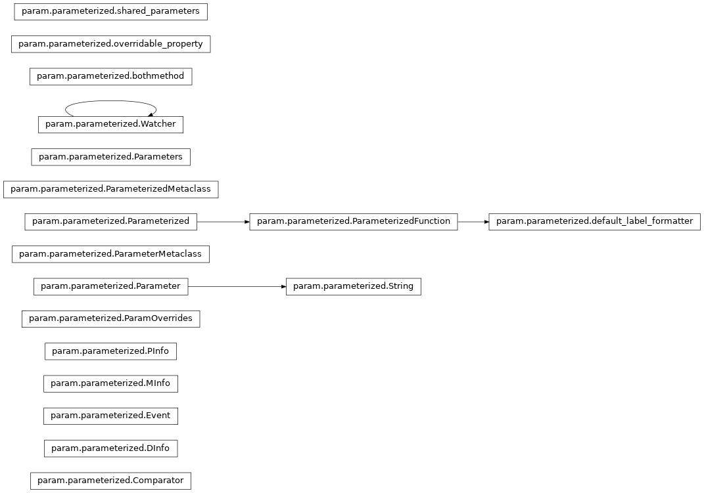
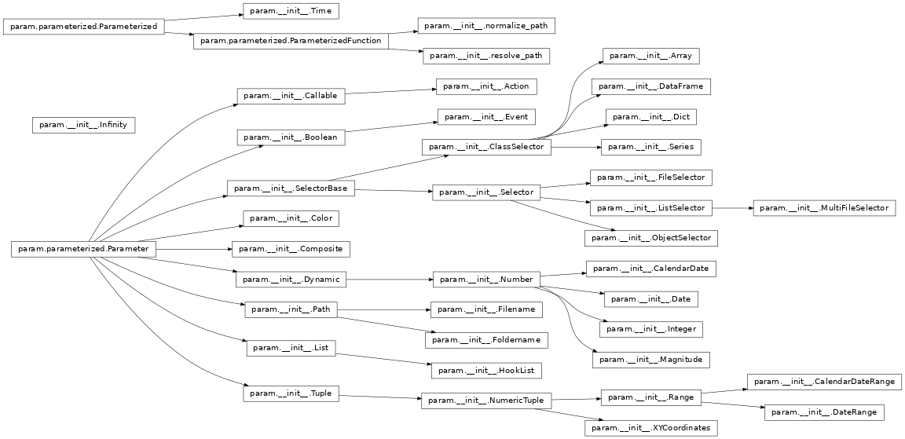
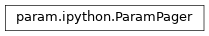
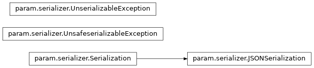
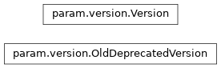

<!DOCTYPE html>

<html>
<head>
<meta charset="utf-8"/>
<meta content="width=device-width, initial-scale=1.0" name="viewport"/><meta content="Docutils 0.17.1: http://docutils.sourceforge.net/" name="generator"/>
<title>API Reference Manual — param 1.12.0.post3+g78e2ea4 documentation</title>
<link href="_static/css/theme.css" rel="stylesheet"/>
<link href="_static/css/index.ff1ffe594081f20da1ef19478df9384b.css" rel="stylesheet"/>
<link href="_static/vendor/fontawesome/5.13.0/css/all.min.css" rel="stylesheet"/>
<link as="font" crossorigin="" href="_static/vendor/fontawesome/5.13.0/webfonts/fa-solid-900.woff2" rel="preload" type="font/woff2"/>
<link as="font" crossorigin="" href="_static/vendor/fontawesome/5.13.0/webfonts/fa-brands-400.woff2" rel="preload" type="font/woff2"/>
<link href="_static/pygments.css" rel="stylesheet" type="text/css">
<link href="_static/css/blank.css" rel="stylesheet" type="text/css">
<link href="_static/togglebutton.css" rel="stylesheet" type="text/css">
<link href="_static/mystnb.css" rel="stylesheet" type="text/css">
<link href="_static/graphviz.css" rel="stylesheet" type="text/css">
<link href="_static/copybutton.css" rel="stylesheet" type="text/css"/>
<link href="_static/site.css" rel="stylesheet" type="text/css"/>
<link as="script" href="_static/js/index.be7d3bbb2ef33a8344ce.js" rel="preload"/>
<script data-url_root="./" id="documentation_options" src="_static/documentation_options.js"></script>
<script src="_static/jquery.js"></script>
<script src="_static/underscore.js"></script>
<script src="_static/doctools.js"></script>
<script src="_static/togglebutton.js"></script>
<script src="_static/clipboard.min.js"></script>
<script src="_static/copybutton.js"></script>
<script>var togglebuttonSelector = '.toggle, .admonition.dropdown, .tag_hide_input div.cell_input, .tag_hide-input div.cell_input, .tag_hide_output div.cell_output, .tag_hide-output div.cell_output, .tag_hide_cell.cell, .tag_hide-cell.cell';</script>
<link href="_static/favicon.ico" rel="shortcut icon">
<link href="about.html" rel="author" title="About these documents"/>
<link href="genindex.html" rel="index" title="Index"/>
<link href="search.html" rel="search" title="Search"/>
<link href="about.html" rel="next" title="About"/>
<link href="roadmap.html" rel="prev" title="Roadmap"/>
<meta content="width=device-width, initial-scale=1" name="viewport"/>
<meta content="None" name="docsearch:language"/>
<!-- Google Analytics -->
<script async="" src="https://www.google-analytics.com/analytics.js"></script>
<script>
                        window.ga = window.ga || function () {
                            (ga.q = ga.q || []).push(arguments) };
                        ga.l = +new Date;
                        ga('create', 'UA-154795830-6', 'auto');
                        ga('set', 'anonymizeIp', true);
                        ga('send', 'pageview');
                    </script>
</link></link></link></link></link></link></head>
<body data-offset="80" data-spy="scroll" data-target="#bd-toc-nav">
<div class="container-fluid" id="banner"></div>
<nav class="navbar navbar-light navbar-expand-lg bg-light fixed-top bd-navbar" id="navbar-main"><div class="container-xl">
<div id="navbar-start">
<a class="navbar-brand" href="index.html">

</a>
</div>
<button aria-controls="navbar-collapsible" aria-expanded="false" aria-label="Toggle navigation" class="navbar-toggler" data-target="#navbar-collapsible" data-toggle="collapse" type="button">
<span class="navbar-toggler-icon"></span>
</button>
<div class="col-lg-9 collapse navbar-collapse" id="navbar-collapsible">
<div class="mr-auto" id="navbar-center">
<div class="navbar-center-item">
<ul class="navbar-nav" id="navbar-main-elements">
<li class="toctree-l1 nav-item">
<a class="reference internal nav-link" href="index.html">
  Introduction
 </a>
</li>
<li class="toctree-l1 nav-item">
<a class="reference internal nav-link" href="getting_started.html">
  Getting Started
 </a>
</li>
<li class="toctree-l1 nav-item">
<a class="reference internal nav-link" href="user_guide/index.html">
  User Guide
 </a>
</li>
<li class="toctree-l1 nav-item">
<a class="reference internal nav-link" href="comparisons.html">
  Comparisons
 </a>
</li>
<li class="toctree-l1 nav-item">
<a class="reference internal nav-link" href="roadmap.html">
  Roadmap
 </a>
</li>
<li class="toctree-l1 current active nav-item">
<a class="current reference internal nav-link" href="#">
  API
 </a>
</li>
<li class="toctree-l1 nav-item">
<a class="reference external nav-link" href="https://github.com/holoviz/param">
  Github Source
 </a>
</li>
<li class="toctree-l1 nav-item">
<a class="reference internal nav-link" href="about.html">
  About
 </a>
</li>
</ul>
</div>
</div>
<div id="navbar-end">
<div class="navbar-end-item">
<ul aria-label="Icon Links" class="navbar-nav" id="navbar-icon-links">
<li class="nav-item">
<a class="nav-link" href="https://github.com/holoviz/param" rel="noopener" target="_blank" title="GitHub">
<span><i class="fab fa-github-square"></i></span>
<label class="sr-only">GitHub</label>
</a>
</li>
<li class="nav-item">
<a class="nav-link" href="https://discourse.holoviz.org/" rel="noopener" target="_blank" title="Discourse">
<span><i class="fab fa-discourse"></i></span>
<label class="sr-only">Discourse</label>
</a>
</li>
</ul>
</div>
</div>
</div>
</div>
</nav>
<div class="container-xl">
<div class="row">
<!-- Only show if we have sidebars configured, else just a small margin  -->
<div class="col-12 col-md-3 bd-sidebar"><form action="search.html" class="bd-search d-flex align-items-center" method="get">
<i class="icon fas fa-search"></i>
<input aria-label="Search the docs ..." autocomplete="off" class="form-control" id="search-input" name="q" placeholder="Search the docs ..." type="search"/>
</form><nav aria-label="Main navigation" class="bd-links" id="bd-docs-nav">
<div class="bd-toc-item active">
</div>
</nav>
</div>
<div class="d-none d-xl-block col-xl-2 bd-toc">
<div class="toc-item">
<div class="tocsection onthispage pt-5 pb-3">
<i class="fas fa-list"></i> On this page
</div>
<nav id="bd-toc-nav">
<ul class="visible nav section-nav flex-column">
<li class="toc-h2 nav-item toc-entry">
<a class="reference internal nav-link" href="#parameterized-module">
   parameterized Module
  </a>
</li>
<li class="toc-h2 nav-item toc-entry">
<a class="reference internal nav-link" href="#param-module">
   param Module
  </a>
</li>
<li class="toc-h2 nav-item toc-entry">
<a class="reference internal nav-link" href="#ipython-module">
   ipython Module
  </a>
</li>
<li class="toc-h2 nav-item toc-entry">
<a class="reference internal nav-link" href="#serializer-module">
   serializer Module
  </a>
</li>
<li class="toc-h2 nav-item toc-entry">
<a class="reference internal nav-link" href="#version-module">
   version Module
  </a>
</li>
</ul>
</nav>
</div>
<div class="toc-item">
</div>
</div>
<main class="col-12 col-md-9 col-xl-7 py-md-5 pl-md-5 pr-md-4 bd-content" role="main">
<div>
<section id="api-reference-manual">
<h1>API Reference Manual<a class="headerlink" href="#api-reference-manual" title="Permalink to this headline">¶</a></h1>
<p>The Param API Reference Manual provides a comprehensive reference for
all modules, functions, classes, and methods provided by Param. See the
<a class="reference external" href="../user_guide">User Guide</a> for a more readable overview and explanations;
this material duplicates what is available from <cite>help(obj)</cite> for each object.</p>
<dl class="simple">
<dt><a class="reference external" href="#parameterized-module">parameterized</a></dt><dd><p>Parameter, Parameterized, and other core classes and methods</p>
</dd>
<dt><a class="reference external" href="#param-module">param</a></dt><dd><p>Optional predefined parameter types like Number, Selector, etc.</p>
</dd>
<dt><a class="reference external" href="#ipython-module">ipython</a></dt><dd><p>Optional help functions tailored for Jupyter and IPython</p>
</dd>
<dt><a class="reference external" href="#serializer-module">serializer</a></dt><dd><p>Optional JSON serialization</p>
</dd>
<dt><a class="reference external" href="#version-module">version</a></dt><dd><p>Automatic generation of version strings using version control</p>
</dd>
</dl>
<section id="parameterized-module">
<h2>parameterized Module<a class="headerlink" href="#parameterized-module" title="Permalink to this headline">¶</a></h2>
<div class="graphviz"></div>
<map id="inheritancece7b6403e7" name="inheritancece7b6403e7">
<area alt="" coords="47,720,291,745" href="#param.parameterized.Comparator" id="node1" shape="rect" target="_top" title="Comparator defines methods for determining whether two objects"/>
<area alt="" coords="67,671,270,696" href="#param.parameterized.DInfo" id="node2" shape="rect" target="_top" title="Object describing dynamic dependencies."/>
<area alt="" coords="67,621,271,647" href="#param.parameterized.Event" id="node3" shape="rect" target="_top" title="Object representing an event that triggers a Watcher."/>
<area alt="" coords="67,572,271,597" href="#param.parameterized.MInfo" id="node4" shape="rect" target="_top" title="Object describing a Parameterized method being watched."/>
<area alt="" coords="69,523,269,548" href="#param.parameterized.PInfo" id="node5" shape="rect" target="_top" title="Object describing something being watched about a Parameter."/>
<area alt="" coords="33,473,304,499" href="#param.parameterized.ParamOverrides" id="node6" shape="rect" target="_top" title="A dictionary that returns the attribute of a specified object if"/>
<area alt="" coords="51,424,286,449" href="#param.parameterized.Parameter" id="node7" shape="rect" target="_top" title="An attribute descriptor for declaring parameters."/>
<area alt="" coords="435,424,641,449" href="#param.parameterized.String" id="node13" shape="rect" target="_top" title="A String Parameter, with a default value and optional regular expression (regex) matching."/>
<area alt="" coords="19,375,319,400" href="#param.parameterized.ParameterMetaclass" id="node8" shape="rect" target="_top" title="Metaclass allowing control over creation of Parameter classes."/>
<area alt="" coords="38,325,299,351" href="#param.parameterized.Parameterized" id="node9" shape="rect" target="_top" title="params(name=String)"/>
<area alt="" coords="380,325,696,351" href="#param.parameterized.ParameterizedFunction" id="node10" shape="rect" target="_top" title="params(name=String)"/>
<area alt="" coords="744,325,1065,351" href="#param.parameterized.default_label_formatter" id="node16" shape="rect" target="_top" title="params(capitalize=Parameter, overrides=Parameter, replace_underscores=Parameter, name=String)"/>
<area alt="" coords="5,276,332,301" href="#param.parameterized.ParameterizedMetaclass" id="node11" shape="rect" target="_top" title="The metaclass of Parameterized (and all its descendents)."/>
<area alt="" coords="48,227,289,252" href="#param.parameterized.Parameters" id="node12" shape="rect" target="_top" title="Object that holds the namespace and implementation of Parameterized"/>
<area alt="" coords="59,177,279,203" href="#param.parameterized.Watcher" id="node14" shape="rect" target="_top" title="Object declaring a callback function to invoke when an Event is"/>
<area alt="" coords="45,104,292,129" href="#param.parameterized.bothmethod" id="node15" shape="rect" target="_top" title="'optional @classmethod'"/>
<area alt="" coords="17,55,320,80" href="#param.parameterized.overridable_property" id="node17" shape="rect" target="_top" title="The same as Python's &quot;property&quot; attribute, but allows the accessor"/>
<area alt="" coords="22,5,315,31" href="#param.parameterized.shared_parameters" id="node18" shape="rect" target="_top" title="Context manager to share parameter instances when creating"/>
</map><hr class="docutils"/>
<span class="target" id="module-param.parameterized"></span><p>Generic support for objects with full-featured Parameters and
messaging.</p>
<p>This file comes from the Param library (<a class="reference external" href="https://github.com/holoviz/param">https://github.com/holoviz/param</a>)
but can be taken out of the param module and used on its own if desired,
either alone (providing basic Parameter support) or with param’s
__init__.py (providing specialized Parameter types).</p>
<dl class="py class">
<dt class="sig sig-object py" id="param.parameterized.Comparator">
<em class="property"><span class="pre">class</span><span class="w"> </span></em><span class="sig-prename descclassname"><span class="pre">param.parameterized.</span></span><span class="sig-name descname"><span class="pre">Comparator</span></span><a class="reference internal" href="_modules/param/parameterized.html#Comparator"><span class="viewcode-link"><span class="pre">[source]</span></span></a><a class="headerlink" href="#param.parameterized.Comparator" title="Permalink to this definition">¶</a></dt>
<dd><p>Bases: <code class="xref py py-class docutils literal notranslate"><span class="pre">object</span></code></p>
<p>Comparator defines methods for determining whether two objects
should be considered equal. It works by registering custom
comparison functions, which may either be registed by type or with
a predicate function. If no matching comparison can be found for
the two objects the comparison will return False.</p>
<p>If registered by type the Comparator will check whether both
objects are of that type and apply the comparison. If the equality
function is instead registered with a function it will call the
function with each object individually to check if the comparison
applies. This is useful for defining comparisons for objects
without explicitly importing them.</p>
<p>To use the Comparator simply call the is_equal function.</p>
</dd></dl>
<dl class="py class">
<dt class="sig sig-object py" id="param.parameterized.DInfo">
<em class="property"><span class="pre">class</span><span class="w"> </span></em><span class="sig-prename descclassname"><span class="pre">param.parameterized.</span></span><span class="sig-name descname"><span class="pre">DInfo</span></span><span class="sig-paren">(</span><em class="sig-param"><span class="n"><span class="pre">spec</span></span></em><span class="sig-paren">)</span><a class="headerlink" href="#param.parameterized.DInfo" title="Permalink to this definition">¶</a></dt>
<dd><p>Bases: <code class="xref py py-class docutils literal notranslate"><span class="pre">tuple</span></code></p>
<p>Object describing dynamic dependencies.
<cite>spec</cite>: Dependency specification to resolve</p>
<dl class="py method">
<dt class="sig sig-object py" id="param.parameterized.DInfo.count">
<span class="sig-name descname"><span class="pre">count</span></span><span class="sig-paren">(</span><em class="sig-param"><span class="n"><span class="pre">value</span></span></em>, <em class="sig-param"><span class="n"><span class="pre">/</span></span></em><span class="sig-paren">)</span><a class="headerlink" href="#param.parameterized.DInfo.count" title="Permalink to this definition">¶</a></dt>
<dd><p>Return number of occurrences of value.</p>
</dd></dl>
<dl class="py method">
<dt class="sig sig-object py" id="param.parameterized.DInfo.index">
<span class="sig-name descname"><span class="pre">index</span></span><span class="sig-paren">(</span><em class="sig-param"><span class="n"><span class="pre">value</span></span></em>, <em class="sig-param"><span class="n"><span class="pre">start=0</span></span></em>, <em class="sig-param"><span class="n"><span class="pre">stop=9223372036854775807</span></span></em>, <em class="sig-param"><span class="n"><span class="pre">/</span></span></em><span class="sig-paren">)</span><a class="headerlink" href="#param.parameterized.DInfo.index" title="Permalink to this definition">¶</a></dt>
<dd><p>Return first index of value.</p>
<p>Raises ValueError if the value is not present.</p>
</dd></dl>
<dl class="py property">
<dt class="sig sig-object py" id="param.parameterized.DInfo.spec">
<em class="property"><span class="pre">property</span><span class="w"> </span></em><span class="sig-name descname"><span class="pre">spec</span></span><a class="headerlink" href="#param.parameterized.DInfo.spec" title="Permalink to this definition">¶</a></dt>
<dd><p>Alias for field number 0</p>
</dd></dl>
</dd></dl>
<dl class="py class">
<dt class="sig sig-object py" id="param.parameterized.Event">
<em class="property"><span class="pre">class</span><span class="w"> </span></em><span class="sig-prename descclassname"><span class="pre">param.parameterized.</span></span><span class="sig-name descname"><span class="pre">Event</span></span><span class="sig-paren">(</span><em class="sig-param"><span class="n"><span class="pre">what</span></span></em>, <em class="sig-param"><span class="n"><span class="pre">name</span></span></em>, <em class="sig-param"><span class="n"><span class="pre">obj</span></span></em>, <em class="sig-param"><span class="n"><span class="pre">cls</span></span></em>, <em class="sig-param"><span class="n"><span class="pre">old</span></span></em>, <em class="sig-param"><span class="n"><span class="pre">new</span></span></em>, <em class="sig-param"><span class="n"><span class="pre">type</span></span></em><span class="sig-paren">)</span><a class="headerlink" href="#param.parameterized.Event" title="Permalink to this definition">¶</a></dt>
<dd><p>Bases: <code class="xref py py-class docutils literal notranslate"><span class="pre">tuple</span></code></p>
<p>Object representing an event that triggers a Watcher.</p>
<p><cite>what</cite>: What is being watched on the Parameter (either value or a slot name)</p>
<p><cite>name</cite>: Name of the Parameter that was set or triggered</p>
<p><cite>obj</cite>: Parameterized instance owning the watched Parameter, or None</p>
<p><cite>cls</cite>: Parameterized class owning the watched Parameter</p>
<p><cite>old</cite>: Previous value of the item being watched</p>
<p><cite>new</cite>: New value of the item being watched</p>
<p><cite>type</cite>: <cite>triggered</cite> if this event was triggered explicitly), <cite>changed</cite> if
the item was set and watching for <cite>onlychanged</cite>, <cite>set</cite> if the item was set,
or  None if type not yet known</p>
<dl class="py property">
<dt class="sig sig-object py" id="param.parameterized.Event.cls">
<em class="property"><span class="pre">property</span><span class="w"> </span></em><span class="sig-name descname"><span class="pre">cls</span></span><a class="headerlink" href="#param.parameterized.Event.cls" title="Permalink to this definition">¶</a></dt>
<dd><p>Alias for field number 3</p>
</dd></dl>
<dl class="py method">
<dt class="sig sig-object py" id="param.parameterized.Event.count">
<span class="sig-name descname"><span class="pre">count</span></span><span class="sig-paren">(</span><em class="sig-param"><span class="n"><span class="pre">value</span></span></em>, <em class="sig-param"><span class="n"><span class="pre">/</span></span></em><span class="sig-paren">)</span><a class="headerlink" href="#param.parameterized.Event.count" title="Permalink to this definition">¶</a></dt>
<dd><p>Return number of occurrences of value.</p>
</dd></dl>
<dl class="py method">
<dt class="sig sig-object py" id="param.parameterized.Event.index">
<span class="sig-name descname"><span class="pre">index</span></span><span class="sig-paren">(</span><em class="sig-param"><span class="n"><span class="pre">value</span></span></em>, <em class="sig-param"><span class="n"><span class="pre">start=0</span></span></em>, <em class="sig-param"><span class="n"><span class="pre">stop=9223372036854775807</span></span></em>, <em class="sig-param"><span class="n"><span class="pre">/</span></span></em><span class="sig-paren">)</span><a class="headerlink" href="#param.parameterized.Event.index" title="Permalink to this definition">¶</a></dt>
<dd><p>Return first index of value.</p>
<p>Raises ValueError if the value is not present.</p>
</dd></dl>
<dl class="py property">
<dt class="sig sig-object py" id="param.parameterized.Event.name">
<em class="property"><span class="pre">property</span><span class="w"> </span></em><span class="sig-name descname"><span class="pre">name</span></span><a class="headerlink" href="#param.parameterized.Event.name" title="Permalink to this definition">¶</a></dt>
<dd><p>Alias for field number 1</p>
</dd></dl>
<dl class="py property">
<dt class="sig sig-object py" id="param.parameterized.Event.new">
<em class="property"><span class="pre">property</span><span class="w"> </span></em><span class="sig-name descname"><span class="pre">new</span></span><a class="headerlink" href="#param.parameterized.Event.new" title="Permalink to this definition">¶</a></dt>
<dd><p>Alias for field number 5</p>
</dd></dl>
<dl class="py property">
<dt class="sig sig-object py" id="param.parameterized.Event.obj">
<em class="property"><span class="pre">property</span><span class="w"> </span></em><span class="sig-name descname"><span class="pre">obj</span></span><a class="headerlink" href="#param.parameterized.Event.obj" title="Permalink to this definition">¶</a></dt>
<dd><p>Alias for field number 2</p>
</dd></dl>
<dl class="py property">
<dt class="sig sig-object py" id="param.parameterized.Event.old">
<em class="property"><span class="pre">property</span><span class="w"> </span></em><span class="sig-name descname"><span class="pre">old</span></span><a class="headerlink" href="#param.parameterized.Event.old" title="Permalink to this definition">¶</a></dt>
<dd><p>Alias for field number 4</p>
</dd></dl>
<dl class="py property">
<dt class="sig sig-object py" id="param.parameterized.Event.type">
<em class="property"><span class="pre">property</span><span class="w"> </span></em><span class="sig-name descname"><span class="pre">type</span></span><a class="headerlink" href="#param.parameterized.Event.type" title="Permalink to this definition">¶</a></dt>
<dd><p>Alias for field number 6</p>
</dd></dl>
<dl class="py property">
<dt class="sig sig-object py" id="param.parameterized.Event.what">
<em class="property"><span class="pre">property</span><span class="w"> </span></em><span class="sig-name descname"><span class="pre">what</span></span><a class="headerlink" href="#param.parameterized.Event.what" title="Permalink to this definition">¶</a></dt>
<dd><p>Alias for field number 0</p>
</dd></dl>
</dd></dl>
<dl class="py class">
<dt class="sig sig-object py" id="param.parameterized.MInfo">
<em class="property"><span class="pre">class</span><span class="w"> </span></em><span class="sig-prename descclassname"><span class="pre">param.parameterized.</span></span><span class="sig-name descname"><span class="pre">MInfo</span></span><span class="sig-paren">(</span><em class="sig-param"><span class="n"><span class="pre">inst</span></span></em>, <em class="sig-param"><span class="n"><span class="pre">cls</span></span></em>, <em class="sig-param"><span class="n"><span class="pre">name</span></span></em>, <em class="sig-param"><span class="n"><span class="pre">method</span></span></em><span class="sig-paren">)</span><a class="headerlink" href="#param.parameterized.MInfo" title="Permalink to this definition">¶</a></dt>
<dd><p>Bases: <code class="xref py py-class docutils literal notranslate"><span class="pre">tuple</span></code></p>
<p>Object describing a Parameterized method being watched.</p>
<p><cite>inst</cite>: Parameterized instance owning the method, or None</p>
<p><cite>cls</cite>: Parameterized class owning the method</p>
<p><cite>name</cite>: Name of the method being watched</p>
<p><cite>method</cite>: bound method of the object being watched</p>
<dl class="py property">
<dt class="sig sig-object py" id="param.parameterized.MInfo.cls">
<em class="property"><span class="pre">property</span><span class="w"> </span></em><span class="sig-name descname"><span class="pre">cls</span></span><a class="headerlink" href="#param.parameterized.MInfo.cls" title="Permalink to this definition">¶</a></dt>
<dd><p>Alias for field number 1</p>
</dd></dl>
<dl class="py method">
<dt class="sig sig-object py" id="param.parameterized.MInfo.count">
<span class="sig-name descname"><span class="pre">count</span></span><span class="sig-paren">(</span><em class="sig-param"><span class="n"><span class="pre">value</span></span></em>, <em class="sig-param"><span class="n"><span class="pre">/</span></span></em><span class="sig-paren">)</span><a class="headerlink" href="#param.parameterized.MInfo.count" title="Permalink to this definition">¶</a></dt>
<dd><p>Return number of occurrences of value.</p>
</dd></dl>
<dl class="py method">
<dt class="sig sig-object py" id="param.parameterized.MInfo.index">
<span class="sig-name descname"><span class="pre">index</span></span><span class="sig-paren">(</span><em class="sig-param"><span class="n"><span class="pre">value</span></span></em>, <em class="sig-param"><span class="n"><span class="pre">start=0</span></span></em>, <em class="sig-param"><span class="n"><span class="pre">stop=9223372036854775807</span></span></em>, <em class="sig-param"><span class="n"><span class="pre">/</span></span></em><span class="sig-paren">)</span><a class="headerlink" href="#param.parameterized.MInfo.index" title="Permalink to this definition">¶</a></dt>
<dd><p>Return first index of value.</p>
<p>Raises ValueError if the value is not present.</p>
</dd></dl>
<dl class="py property">
<dt class="sig sig-object py" id="param.parameterized.MInfo.inst">
<em class="property"><span class="pre">property</span><span class="w"> </span></em><span class="sig-name descname"><span class="pre">inst</span></span><a class="headerlink" href="#param.parameterized.MInfo.inst" title="Permalink to this definition">¶</a></dt>
<dd><p>Alias for field number 0</p>
</dd></dl>
<dl class="py property">
<dt class="sig sig-object py" id="param.parameterized.MInfo.method">
<em class="property"><span class="pre">property</span><span class="w"> </span></em><span class="sig-name descname"><span class="pre">method</span></span><a class="headerlink" href="#param.parameterized.MInfo.method" title="Permalink to this definition">¶</a></dt>
<dd><p>Alias for field number 3</p>
</dd></dl>
<dl class="py property">
<dt class="sig sig-object py" id="param.parameterized.MInfo.name">
<em class="property"><span class="pre">property</span><span class="w"> </span></em><span class="sig-name descname"><span class="pre">name</span></span><a class="headerlink" href="#param.parameterized.MInfo.name" title="Permalink to this definition">¶</a></dt>
<dd><p>Alias for field number 2</p>
</dd></dl>
</dd></dl>
<dl class="py class">
<dt class="sig sig-object py" id="param.parameterized.PInfo">
<em class="property"><span class="pre">class</span><span class="w"> </span></em><span class="sig-prename descclassname"><span class="pre">param.parameterized.</span></span><span class="sig-name descname"><span class="pre">PInfo</span></span><span class="sig-paren">(</span><em class="sig-param"><span class="n"><span class="pre">inst</span></span></em>, <em class="sig-param"><span class="n"><span class="pre">cls</span></span></em>, <em class="sig-param"><span class="n"><span class="pre">name</span></span></em>, <em class="sig-param"><span class="n"><span class="pre">pobj</span></span></em>, <em class="sig-param"><span class="n"><span class="pre">what</span></span></em><span class="sig-paren">)</span><a class="headerlink" href="#param.parameterized.PInfo" title="Permalink to this definition">¶</a></dt>
<dd><p>Bases: <code class="xref py py-class docutils literal notranslate"><span class="pre">tuple</span></code></p>
<p>Object describing something being watched about a Parameter.</p>
<p><cite>inst</cite>: Parameterized instance owning the Parameter, or None</p>
<p><cite>cls</cite>: Parameterized class owning the Parameter</p>
<p><cite>name</cite>: Name of the Parameter being watched</p>
<p><cite>pobj</cite>: Parameter object being watched</p>
<p><cite>what</cite>: What is being watched on the Parameter (either ‘value’ or a slot name)</p>
<dl class="py property">
<dt class="sig sig-object py" id="param.parameterized.PInfo.cls">
<em class="property"><span class="pre">property</span><span class="w"> </span></em><span class="sig-name descname"><span class="pre">cls</span></span><a class="headerlink" href="#param.parameterized.PInfo.cls" title="Permalink to this definition">¶</a></dt>
<dd><p>Alias for field number 1</p>
</dd></dl>
<dl class="py method">
<dt class="sig sig-object py" id="param.parameterized.PInfo.count">
<span class="sig-name descname"><span class="pre">count</span></span><span class="sig-paren">(</span><em class="sig-param"><span class="n"><span class="pre">value</span></span></em>, <em class="sig-param"><span class="n"><span class="pre">/</span></span></em><span class="sig-paren">)</span><a class="headerlink" href="#param.parameterized.PInfo.count" title="Permalink to this definition">¶</a></dt>
<dd><p>Return number of occurrences of value.</p>
</dd></dl>
<dl class="py method">
<dt class="sig sig-object py" id="param.parameterized.PInfo.index">
<span class="sig-name descname"><span class="pre">index</span></span><span class="sig-paren">(</span><em class="sig-param"><span class="n"><span class="pre">value</span></span></em>, <em class="sig-param"><span class="n"><span class="pre">start=0</span></span></em>, <em class="sig-param"><span class="n"><span class="pre">stop=9223372036854775807</span></span></em>, <em class="sig-param"><span class="n"><span class="pre">/</span></span></em><span class="sig-paren">)</span><a class="headerlink" href="#param.parameterized.PInfo.index" title="Permalink to this definition">¶</a></dt>
<dd><p>Return first index of value.</p>
<p>Raises ValueError if the value is not present.</p>
</dd></dl>
<dl class="py property">
<dt class="sig sig-object py" id="param.parameterized.PInfo.inst">
<em class="property"><span class="pre">property</span><span class="w"> </span></em><span class="sig-name descname"><span class="pre">inst</span></span><a class="headerlink" href="#param.parameterized.PInfo.inst" title="Permalink to this definition">¶</a></dt>
<dd><p>Alias for field number 0</p>
</dd></dl>
<dl class="py property">
<dt class="sig sig-object py" id="param.parameterized.PInfo.name">
<em class="property"><span class="pre">property</span><span class="w"> </span></em><span class="sig-name descname"><span class="pre">name</span></span><a class="headerlink" href="#param.parameterized.PInfo.name" title="Permalink to this definition">¶</a></dt>
<dd><p>Alias for field number 2</p>
</dd></dl>
<dl class="py property">
<dt class="sig sig-object py" id="param.parameterized.PInfo.pobj">
<em class="property"><span class="pre">property</span><span class="w"> </span></em><span class="sig-name descname"><span class="pre">pobj</span></span><a class="headerlink" href="#param.parameterized.PInfo.pobj" title="Permalink to this definition">¶</a></dt>
<dd><p>Alias for field number 3</p>
</dd></dl>
<dl class="py property">
<dt class="sig sig-object py" id="param.parameterized.PInfo.what">
<em class="property"><span class="pre">property</span><span class="w"> </span></em><span class="sig-name descname"><span class="pre">what</span></span><a class="headerlink" href="#param.parameterized.PInfo.what" title="Permalink to this definition">¶</a></dt>
<dd><p>Alias for field number 4</p>
</dd></dl>
</dd></dl>
<dl class="py class">
<dt class="sig sig-object py" id="param.parameterized.ParamOverrides">
<em class="property"><span class="pre">class</span><span class="w"> </span></em><span class="sig-prename descclassname"><span class="pre">param.parameterized.</span></span><span class="sig-name descname"><span class="pre">ParamOverrides</span></span><span class="sig-paren">(</span><em class="sig-param"><span class="n"><span class="pre">overridden</span></span></em>, <em class="sig-param"><span class="n"><span class="pre">dict_</span></span></em>, <em class="sig-param"><span class="n"><span class="pre">allow_extra_keywords</span></span><span class="o"><span class="pre">=</span></span><span class="default_value"><span class="pre">False</span></span></em><span class="sig-paren">)</span><a class="reference internal" href="_modules/param/parameterized.html#ParamOverrides"><span class="viewcode-link"><span class="pre">[source]</span></span></a><a class="headerlink" href="#param.parameterized.ParamOverrides" title="Permalink to this definition">¶</a></dt>
<dd><p>Bases: <code class="xref py py-class docutils literal notranslate"><span class="pre">dict</span></code></p>
<p>A dictionary that returns the attribute of a specified object if
that attribute is not present in itself.</p>
<p>Used to override the parameters of an object.</p>
<dl class="py method">
<dt class="sig sig-object py" id="param.parameterized.ParamOverrides.clear">
<span class="sig-name descname"><span class="pre">clear</span></span><span class="sig-paren">(</span><span class="sig-paren">)</span> <span class="sig-return"><span class="sig-return-icon">→</span> <span class="sig-return-typehint"><span class="pre">None.</span>  <span class="pre">Remove</span> <span class="pre">all</span> <span class="pre">items</span> <span class="pre">from</span> <span class="pre">D.</span></span></span><a class="headerlink" href="#param.parameterized.ParamOverrides.clear" title="Permalink to this definition">¶</a></dt>
<dd></dd></dl>
<dl class="py method">
<dt class="sig sig-object py" id="param.parameterized.ParamOverrides.copy">
<span class="sig-name descname"><span class="pre">copy</span></span><span class="sig-paren">(</span><span class="sig-paren">)</span> <span class="sig-return"><span class="sig-return-icon">→</span> <span class="sig-return-typehint"><span class="pre">a</span> <span class="pre">shallow</span> <span class="pre">copy</span> <span class="pre">of</span> <span class="pre">D</span></span></span><a class="headerlink" href="#param.parameterized.ParamOverrides.copy" title="Permalink to this definition">¶</a></dt>
<dd></dd></dl>
<dl class="py method">
<dt class="sig sig-object py" id="param.parameterized.ParamOverrides.extra_keywords">
<span class="sig-name descname"><span class="pre">extra_keywords</span></span><span class="sig-paren">(</span><span class="sig-paren">)</span><a class="reference internal" href="_modules/param/parameterized.html#ParamOverrides.extra_keywords"><span class="viewcode-link"><span class="pre">[source]</span></span></a><a class="headerlink" href="#param.parameterized.ParamOverrides.extra_keywords" title="Permalink to this definition">¶</a></dt>
<dd><p>Return a dictionary containing items from the originally
supplied <cite>dict_</cite> whose names are not parameters of the
overridden object.</p>
</dd></dl>
<dl class="py method">
<dt class="sig sig-object py" id="param.parameterized.ParamOverrides.fromkeys">
<span class="sig-name descname"><span class="pre">fromkeys</span></span><span class="sig-paren">(</span><em class="sig-param"><span class="n"><span class="pre">value=None</span></span></em>, <em class="sig-param"><span class="n"><span class="pre">/</span></span></em><span class="sig-paren">)</span><a class="headerlink" href="#param.parameterized.ParamOverrides.fromkeys" title="Permalink to this definition">¶</a></dt>
<dd><p>Create a new dictionary with keys from iterable and values set to value.</p>
</dd></dl>
<dl class="py method">
<dt class="sig sig-object py" id="param.parameterized.ParamOverrides.get">
<span class="sig-name descname"><span class="pre">get</span></span><span class="sig-paren">(</span><em class="sig-param"><span class="n"><span class="pre">key</span></span></em>, <em class="sig-param"><span class="n"><span class="pre">default</span></span><span class="o"><span class="pre">=</span></span><span class="default_value"><span class="pre">None</span></span></em><span class="sig-paren">)</span><a class="reference internal" href="_modules/param/parameterized.html#ParamOverrides.get"><span class="viewcode-link"><span class="pre">[source]</span></span></a><a class="headerlink" href="#param.parameterized.ParamOverrides.get" title="Permalink to this definition">¶</a></dt>
<dd><p>Return the value for key if key is in the dictionary, else default.</p>
</dd></dl>
<dl class="py method">
<dt class="sig sig-object py" id="param.parameterized.ParamOverrides.items">
<span class="sig-name descname"><span class="pre">items</span></span><span class="sig-paren">(</span><span class="sig-paren">)</span> <span class="sig-return"><span class="sig-return-icon">→</span> <span class="sig-return-typehint"><span class="pre">a</span> <span class="pre">set-like</span> <span class="pre">object</span> <span class="pre">providing</span> <span class="pre">a</span> <span class="pre">view</span> <span class="pre">on</span> <span class="pre">D's</span> <span class="pre">items</span></span></span><a class="headerlink" href="#param.parameterized.ParamOverrides.items" title="Permalink to this definition">¶</a></dt>
<dd></dd></dl>
<dl class="py method">
<dt class="sig sig-object py" id="param.parameterized.ParamOverrides.keys">
<span class="sig-name descname"><span class="pre">keys</span></span><span class="sig-paren">(</span><span class="sig-paren">)</span> <span class="sig-return"><span class="sig-return-icon">→</span> <span class="sig-return-typehint"><span class="pre">a</span> <span class="pre">set-like</span> <span class="pre">object</span> <span class="pre">providing</span> <span class="pre">a</span> <span class="pre">view</span> <span class="pre">on</span> <span class="pre">D's</span> <span class="pre">keys</span></span></span><a class="headerlink" href="#param.parameterized.ParamOverrides.keys" title="Permalink to this definition">¶</a></dt>
<dd></dd></dl>
<dl class="py method">
<dt class="sig sig-object py" id="param.parameterized.ParamOverrides.param_keywords">
<span class="sig-name descname"><span class="pre">param_keywords</span></span><span class="sig-paren">(</span><span class="sig-paren">)</span><a class="reference internal" href="_modules/param/parameterized.html#ParamOverrides.param_keywords"><span class="viewcode-link"><span class="pre">[source]</span></span></a><a class="headerlink" href="#param.parameterized.ParamOverrides.param_keywords" title="Permalink to this definition">¶</a></dt>
<dd><p>Return a dictionary containing items from the originally
supplied <cite>dict_</cite> whose names are parameters of the
overridden object (i.e. not extra keywords/parameters).</p>
</dd></dl>
<dl class="py method">
<dt class="sig sig-object py" id="param.parameterized.ParamOverrides.pop">
<span class="sig-name descname"><span class="pre">pop</span></span><span class="sig-paren">(</span><em class="sig-param"><span class="n"><span class="pre">k</span></span></em><span class="optional">[</span>, <em class="sig-param"><span class="n"><span class="pre">d</span></span></em><span class="optional">]</span><span class="sig-paren">)</span> <span class="sig-return"><span class="sig-return-icon">→</span> <span class="sig-return-typehint"><span class="pre">v,</span> <span class="pre">remove</span> <span class="pre">specified</span> <span class="pre">key</span> <span class="pre">and</span> <span class="pre">return</span> <span class="pre">the</span> <span class="pre">corresponding</span> <span class="pre">value.</span></span></span><a class="headerlink" href="#param.parameterized.ParamOverrides.pop" title="Permalink to this definition">¶</a></dt>
<dd><p>If key is not found, d is returned if given, otherwise KeyError is raised</p>
</dd></dl>
<dl class="py method">
<dt class="sig sig-object py" id="param.parameterized.ParamOverrides.popitem">
<span class="sig-name descname"><span class="pre">popitem</span></span><span class="sig-paren">(</span><span class="sig-paren">)</span> <span class="sig-return"><span class="sig-return-icon">→</span> <span class="sig-return-typehint"><span class="pre">(k,</span> <span class="pre">v),</span> <span class="pre">remove</span> <span class="pre">and</span> <span class="pre">return</span> <span class="pre">some</span> <span class="pre">(key,</span> <span class="pre">value)</span> <span class="pre">pair</span> <span class="pre">as</span> <span class="pre">a</span></span></span><a class="headerlink" href="#param.parameterized.ParamOverrides.popitem" title="Permalink to this definition">¶</a></dt>
<dd><p>2-tuple; but raise KeyError if D is empty.</p>
</dd></dl>
<dl class="py method">
<dt class="sig sig-object py" id="param.parameterized.ParamOverrides.setdefault">
<span class="sig-name descname"><span class="pre">setdefault</span></span><span class="sig-paren">(</span><em class="sig-param"><span class="n"><span class="pre">key</span></span></em>, <em class="sig-param"><span class="n"><span class="pre">default=None</span></span></em>, <em class="sig-param"><span class="n"><span class="pre">/</span></span></em><span class="sig-paren">)</span><a class="headerlink" href="#param.parameterized.ParamOverrides.setdefault" title="Permalink to this definition">¶</a></dt>
<dd><p>Insert key with a value of default if key is not in the dictionary.</p>
<p>Return the value for key if key is in the dictionary, else default.</p>
</dd></dl>
<dl class="py method">
<dt class="sig sig-object py" id="param.parameterized.ParamOverrides.update">
<span class="sig-name descname"><span class="pre">update</span></span><span class="sig-paren">(</span><span class="optional">[</span><em class="sig-param"><span class="n"><span class="pre">E</span></span></em>, <span class="optional">]</span><em class="sig-param"><span class="n"><span class="pre">**F</span></span></em><span class="sig-paren">)</span> <span class="sig-return"><span class="sig-return-icon">→</span> <span class="sig-return-typehint"><span class="pre">None.</span>  <span class="pre">Update</span> <span class="pre">D</span> <span class="pre">from</span> <span class="pre">dict/iterable</span> <span class="pre">E</span> <span class="pre">and</span> <span class="pre">F.</span></span></span><a class="headerlink" href="#param.parameterized.ParamOverrides.update" title="Permalink to this definition">¶</a></dt>
<dd><p>If E is present and has a .keys() method, then does:  for k in E: D[k] = E[k]
If E is present and lacks a .keys() method, then does:  for k, v in E: D[k] = v
In either case, this is followed by: for k in F:  D[k] = F[k]</p>
</dd></dl>
<dl class="py method">
<dt class="sig sig-object py" id="param.parameterized.ParamOverrides.values">
<span class="sig-name descname"><span class="pre">values</span></span><span class="sig-paren">(</span><span class="sig-paren">)</span> <span class="sig-return"><span class="sig-return-icon">→</span> <span class="sig-return-typehint"><span class="pre">an</span> <span class="pre">object</span> <span class="pre">providing</span> <span class="pre">a</span> <span class="pre">view</span> <span class="pre">on</span> <span class="pre">D's</span> <span class="pre">values</span></span></span><a class="headerlink" href="#param.parameterized.ParamOverrides.values" title="Permalink to this definition">¶</a></dt>
<dd></dd></dl>
</dd></dl>
<dl class="py class">
<dt class="sig sig-object py" id="param.parameterized.Parameter">
<em class="property"><span class="pre">class</span><span class="w"> </span></em><span class="sig-prename descclassname"><span class="pre">param.parameterized.</span></span><span class="sig-name descname"><span class="pre">Parameter</span></span><span class="sig-paren">(</span><em class="sig-param"><span class="n"><span class="pre">default</span></span><span class="o"><span class="pre">=</span></span><span class="default_value"><span class="pre">None</span></span></em>, <em class="sig-param"><span class="n"><span class="pre">doc</span></span><span class="o"><span class="pre">=</span></span><span class="default_value"><span class="pre">None</span></span></em>, <em class="sig-param"><span class="n"><span class="pre">label</span></span><span class="o"><span class="pre">=</span></span><span class="default_value"><span class="pre">None</span></span></em>, <em class="sig-param"><span class="n"><span class="pre">precedence</span></span><span class="o"><span class="pre">=</span></span><span class="default_value"><span class="pre">None</span></span></em>, <em class="sig-param"><span class="n"><span class="pre">instantiate</span></span><span class="o"><span class="pre">=</span></span><span class="default_value"><span class="pre">False</span></span></em>, <em class="sig-param"><span class="n"><span class="pre">constant</span></span><span class="o"><span class="pre">=</span></span><span class="default_value"><span class="pre">False</span></span></em>, <em class="sig-param"><span class="n"><span class="pre">readonly</span></span><span class="o"><span class="pre">=</span></span><span class="default_value"><span class="pre">False</span></span></em>, <em class="sig-param"><span class="n"><span class="pre">pickle_default_value</span></span><span class="o"><span class="pre">=</span></span><span class="default_value"><span class="pre">True</span></span></em>, <em class="sig-param"><span class="n"><span class="pre">allow_None</span></span><span class="o"><span class="pre">=</span></span><span class="default_value"><span class="pre">False</span></span></em>, <em class="sig-param"><span class="n"><span class="pre">per_instance</span></span><span class="o"><span class="pre">=</span></span><span class="default_value"><span class="pre">True</span></span></em><span class="sig-paren">)</span><a class="reference internal" href="_modules/param/parameterized.html#Parameter"><span class="viewcode-link"><span class="pre">[source]</span></span></a><a class="headerlink" href="#param.parameterized.Parameter" title="Permalink to this definition">¶</a></dt>
<dd><p>Bases: <code class="xref py py-class docutils literal notranslate"><span class="pre">object</span></code></p>
<p>An attribute descriptor for declaring parameters.</p>
<p>Parameters are a special kind of class attribute.  Setting a
Parameterized class attribute to be a Parameter instance causes
that attribute of the class (and the class’s instances) to be
treated as a Parameter.  This allows special behavior, including
dynamically generated parameter values, documentation strings,
constant and read-only parameters, and type or range checking at
assignment time.</p>
<p>For example, suppose someone wants to define two new kinds of
objects Foo and Bar, such that Bar has a parameter delta, Foo is a
subclass of Bar, and Foo has parameters alpha, sigma, and gamma
(and delta inherited from Bar).  She would begin her class
definitions with something like this:</p>
<div class="highlight-default notranslate"><div class="highlight"><pre><span></span><span class="k">class</span> <span class="nc">Bar</span><span class="p">(</span><span class="n">Parameterized</span><span class="p">):</span>
    <span class="n">delta</span> <span class="o">=</span> <span class="n">Parameter</span><span class="p">(</span><span class="n">default</span><span class="o">=</span><span class="mf">0.6</span><span class="p">,</span> <span class="n">doc</span><span class="o">=</span><span class="s1">'The difference between steps.'</span><span class="p">)</span>
    <span class="o">...</span>
<span class="k">class</span> <span class="nc">Foo</span><span class="p">(</span><span class="n">Bar</span><span class="p">):</span>
    <span class="n">alpha</span> <span class="o">=</span> <span class="n">Parameter</span><span class="p">(</span><span class="n">default</span><span class="o">=</span><span class="mf">0.1</span><span class="p">,</span> <span class="n">doc</span><span class="o">=</span><span class="s1">'The starting value.'</span><span class="p">)</span>
    <span class="n">sigma</span> <span class="o">=</span> <span class="n">Parameter</span><span class="p">(</span><span class="n">default</span><span class="o">=</span><span class="mf">0.5</span><span class="p">,</span> <span class="n">doc</span><span class="o">=</span><span class="s1">'The standard deviation.'</span><span class="p">,</span>
                    <span class="n">constant</span><span class="o">=</span><span class="kc">True</span><span class="p">)</span>
    <span class="n">gamma</span> <span class="o">=</span> <span class="n">Parameter</span><span class="p">(</span><span class="n">default</span><span class="o">=</span><span class="mf">1.0</span><span class="p">,</span> <span class="n">doc</span><span class="o">=</span><span class="s1">'The ending value.'</span><span class="p">)</span>
    <span class="o">...</span>
</pre></div>
</div>
<p>Class Foo would then have four parameters, with delta defaulting
to 0.6.</p>
<p>Parameters have several advantages over plain attributes:</p>
<ol class="arabic">
<li><p>Parameters can be set automatically when an instance is
constructed: The default constructor for Foo (and Bar) will
accept arbitrary keyword arguments, each of which can be used
to specify the value of a Parameter of Foo (or any of Foo’s
superclasses).  E.g., if a script does this:</p>
<div class="highlight-default notranslate"><div class="highlight"><pre><span></span><span class="n">myfoo</span> <span class="o">=</span> <span class="n">Foo</span><span class="p">(</span><span class="n">alpha</span><span class="o">=</span><span class="mf">0.5</span><span class="p">)</span>
</pre></div>
</div>
<p>myfoo.alpha will return 0.5, without the Foo constructor
needing special code to set alpha.</p>
<p>If Foo implements its own constructor, keyword arguments will
still be accepted if the constructor accepts a dictionary of
keyword arguments (as in <code class="docutils literal notranslate"><span class="pre">def</span> <span class="pre">__init__(self,**params):</span></code>), and
then each class calls its superclass (as in
<code class="docutils literal notranslate"><span class="pre">super(Foo,self).__init__(**params)</span></code>) so that the
Parameterized constructor will process the keywords.</p>
</li>
<li><p>A Parameterized class need specify only the attributes of a
Parameter whose values differ from those declared in
superclasses; the other values will be inherited.  E.g. if Foo
declares:</p>
<div class="highlight-default notranslate"><div class="highlight"><pre><span></span><span class="n">delta</span> <span class="o">=</span> <span class="n">Parameter</span><span class="p">(</span><span class="n">default</span><span class="o">=</span><span class="mf">0.2</span><span class="p">)</span>
</pre></div>
</div>
<p>the default value of 0.2 will override the 0.6 inherited from
Bar, but the doc will be inherited from Bar.</p>
</li>
<li><p>The Parameter descriptor class can be subclassed to provide
more complex behavior, allowing special types of parameters
that, for example, require their values to be numbers in
certain ranges, generate their values dynamically from a random
distribution, or read their values from a file or other
external source.</p></li>
<li><p>The attributes associated with Parameters provide enough
information for automatically generating property sheets in
graphical user interfaces, allowing Parameterized instances to
be edited by users.</p></li>
</ol>
<p>Note that Parameters can only be used when set as class attributes
of Parameterized classes. Parameters used as standalone objects,
or as class attributes of non-Parameterized classes, will not have
the behavior described here.</p>
<dl class="py method">
<dt class="sig sig-object py" id="param.parameterized.Parameter.deserialize">
<em class="property"><span class="pre">classmethod</span><span class="w"> </span></em><span class="sig-name descname"><span class="pre">deserialize</span></span><span class="sig-paren">(</span><em class="sig-param"><span class="n"><span class="pre">value</span></span></em><span class="sig-paren">)</span><a class="reference internal" href="_modules/param/parameterized.html#Parameter.deserialize"><span class="viewcode-link"><span class="pre">[source]</span></span></a><a class="headerlink" href="#param.parameterized.Parameter.deserialize" title="Permalink to this definition">¶</a></dt>
<dd><p>Given a serializable Python value, return a value that the parameter can be set to</p>
</dd></dl>
<dl class="py method">
<dt class="sig sig-object py" id="param.parameterized.Parameter.serialize">
<em class="property"><span class="pre">classmethod</span><span class="w"> </span></em><span class="sig-name descname"><span class="pre">serialize</span></span><span class="sig-paren">(</span><em class="sig-param"><span class="n"><span class="pre">value</span></span></em><span class="sig-paren">)</span><a class="reference internal" href="_modules/param/parameterized.html#Parameter.serialize"><span class="viewcode-link"><span class="pre">[source]</span></span></a><a class="headerlink" href="#param.parameterized.Parameter.serialize" title="Permalink to this definition">¶</a></dt>
<dd><p>Given the parameter value, return a Python value suitable for serialization</p>
</dd></dl>
</dd></dl>
<dl class="py class">
<dt class="sig sig-object py" id="param.parameterized.ParameterMetaclass">
<em class="property"><span class="pre">class</span><span class="w"> </span></em><span class="sig-prename descclassname"><span class="pre">param.parameterized.</span></span><span class="sig-name descname"><span class="pre">ParameterMetaclass</span></span><span class="sig-paren">(</span><em class="sig-param"><span class="n"><span class="pre">classname</span></span></em>, <em class="sig-param"><span class="n"><span class="pre">bases</span></span></em>, <em class="sig-param"><span class="n"><span class="pre">classdict</span></span></em><span class="sig-paren">)</span><a class="reference internal" href="_modules/param/parameterized.html#ParameterMetaclass"><span class="viewcode-link"><span class="pre">[source]</span></span></a><a class="headerlink" href="#param.parameterized.ParameterMetaclass" title="Permalink to this definition">¶</a></dt>
<dd><p>Bases: <code class="xref py py-class docutils literal notranslate"><span class="pre">type</span></code></p>
<p>Metaclass allowing control over creation of Parameter classes.</p>
<dl class="py method">
<dt class="sig sig-object py" id="param.parameterized.ParameterMetaclass.mro">
<span class="sig-name descname"><span class="pre">mro</span></span><span class="sig-paren">(</span><span class="sig-paren">)</span><a class="headerlink" href="#param.parameterized.ParameterMetaclass.mro" title="Permalink to this definition">¶</a></dt>
<dd><p>Return a type’s method resolution order.</p>
</dd></dl>
</dd></dl>
<dl class="py class">
<dt class="sig sig-object py" id="param.parameterized.Parameterized">
<em class="property"><span class="pre">class</span><span class="w"> </span></em><span class="sig-prename descclassname"><span class="pre">param.parameterized.</span></span><span class="sig-name descname"><span class="pre">Parameterized</span></span><span class="sig-paren">(</span><em class="sig-param"><span class="o"><span class="pre">**</span></span><span class="n"><span class="pre">params</span></span></em><span class="sig-paren">)</span><a class="reference internal" href="_modules/param/parameterized.html#Parameterized"><span class="viewcode-link"><span class="pre">[source]</span></span></a><a class="headerlink" href="#param.parameterized.Parameterized" title="Permalink to this definition">¶</a></dt>
<dd><p>Bases: <code class="xref py py-class docutils literal notranslate"><span class="pre">object</span></code></p>
<p>params(name=String)</p>
<blockquote>
<div><p>Base class for named objects that support Parameters and message
formatting.</p>
<p>Automatic object naming: Every Parameterized instance has a name
parameter.  If the user doesn’t designate a name=&lt;str&gt; argument
when constructing the object, the object will be given a name
consisting of its class name followed by a unique 5-digit number.</p>
<p>Automatic parameter setting: The Parameterized __init__ method
will automatically read the list of keyword parameters.  If any
keyword matches the name of a Parameter (see Parameter class)
defined in the object’s class or any of its superclasses, that
parameter in the instance will get the value given as a keyword
argument.  For example:</p>
<blockquote>
<div><dl class="simple">
<dt>class Foo(Parameterized):</dt><dd><p>xx = Parameter(default=1)</p>
</dd>
</dl>
<p>foo = Foo(xx=20)</p>
</div></blockquote>
<p>in this case foo.xx gets the value 20.</p>
<p>When initializing a Parameterized instance (‘foo’ in the example
above), the values of parameters can be supplied as keyword
arguments to the constructor (using parametername=parametervalue);
these values will override the class default values for this one
instance.</p>
<p>If no ‘name’ parameter is supplied, self.name defaults to the
object’s class name with a unique number appended to it.</p>
<p>Message formatting: Each Parameterized instance has several
methods for optionally printing output. This functionality is
based on the standard Python ‘logging’ module; using the methods
provided here, wraps calls to the ‘logging’ module’s root logger
and prepends each message with information about the instance
from which the call was made. For more information on how to set
the global logging level and change the default message prefix,
see documentation for the ‘logging’ module.</p>
</div></blockquote>
<p>
Object has no parameters.</p>
</dd></dl>
<dl class="py class">
<dt class="sig sig-object py" id="param.parameterized.ParameterizedFunction">
<em class="property"><span class="pre">class</span><span class="w"> </span></em><span class="sig-prename descclassname"><span class="pre">param.parameterized.</span></span><span class="sig-name descname"><span class="pre">ParameterizedFunction</span></span><span class="sig-paren">(</span><em class="sig-param"><span class="o"><span class="pre">*</span></span><span class="n"><span class="pre">args</span></span></em>, <em class="sig-param"><span class="o"><span class="pre">**</span></span><span class="n"><span class="pre">params</span></span></em><span class="sig-paren">)</span><a class="reference internal" href="_modules/param/parameterized.html#ParameterizedFunction"><span class="viewcode-link"><span class="pre">[source]</span></span></a><a class="headerlink" href="#param.parameterized.ParameterizedFunction" title="Permalink to this definition">¶</a></dt>
<dd><p>Bases: <a class="reference internal" href="#param.parameterized.Parameterized" title="param.parameterized.Parameterized"><code class="xref py py-class docutils literal notranslate"><span class="pre">param.parameterized.Parameterized</span></code></a></p>
<p>params(name=String)</p>
<blockquote>
<div><p>Acts like a Python function, but with arguments that are Parameters.</p>
<p>Implemented as a subclass of Parameterized that, when instantiated,
automatically invokes __call__ and returns the result, instead of
returning an instance of the class.</p>
<p>To obtain an instance of this class, call instance().</p>
</div></blockquote>
<p>
Object has no parameters.</p>
<dl class="py method">
<dt class="sig sig-object py" id="param.parameterized.ParameterizedFunction.instance">
<span class="sig-name descname"><span class="pre">instance</span></span><span class="sig-paren">(</span><em class="sig-param"><span class="o"><span class="pre">**</span></span><span class="n"><span class="pre">params</span></span></em><span class="sig-paren">)</span><a class="reference internal" href="_modules/param/parameterized.html#ParameterizedFunction.instance"><span class="viewcode-link"><span class="pre">[source]</span></span></a><a class="headerlink" href="#param.parameterized.ParameterizedFunction.instance" title="Permalink to this definition">¶</a></dt>
<dd><p>Return an instance of this class, copying parameters from any
existing instance provided.</p>
</dd></dl>
<dl class="py method">
<dt class="sig sig-object py" id="param.parameterized.ParameterizedFunction.script_repr">
<span class="sig-name descname"><span class="pre">script_repr</span></span><span class="sig-paren">(</span><em class="sig-param"><span class="n"><span class="pre">imports</span></span><span class="o"><span class="pre">=</span></span><span class="default_value"><span class="pre">[]</span></span></em>, <em class="sig-param"><span class="n"><span class="pre">prefix</span></span><span class="o"><span class="pre">=</span></span><span class="default_value"><span class="pre">'</span>    <span class="pre">'</span></span></em><span class="sig-paren">)</span><a class="reference internal" href="_modules/param/parameterized.html#ParameterizedFunction.script_repr"><span class="viewcode-link"><span class="pre">[source]</span></span></a><a class="headerlink" href="#param.parameterized.ParameterizedFunction.script_repr" title="Permalink to this definition">¶</a></dt>
<dd><p>Same as Parameterized.script_repr, except that X.classname(Y
is replaced with X.classname.instance(Y</p>
</dd></dl>
</dd></dl>
<dl class="py class">
<dt class="sig sig-object py" id="param.parameterized.ParameterizedMetaclass">
<em class="property"><span class="pre">class</span><span class="w"> </span></em><span class="sig-prename descclassname"><span class="pre">param.parameterized.</span></span><span class="sig-name descname"><span class="pre">ParameterizedMetaclass</span></span><span class="sig-paren">(</span><em class="sig-param"><span class="n"><span class="pre">name</span></span></em>, <em class="sig-param"><span class="n"><span class="pre">bases</span></span></em>, <em class="sig-param"><span class="n"><span class="pre">dict_</span></span></em><span class="sig-paren">)</span><a class="reference internal" href="_modules/param/parameterized.html#ParameterizedMetaclass"><span class="viewcode-link"><span class="pre">[source]</span></span></a><a class="headerlink" href="#param.parameterized.ParameterizedMetaclass" title="Permalink to this definition">¶</a></dt>
<dd><p>Bases: <code class="xref py py-class docutils literal notranslate"><span class="pre">type</span></code></p>
<p>The metaclass of Parameterized (and all its descendents).</p>
<p>The metaclass overrides type.__setattr__ to allow us to set
Parameter values on classes without overwriting the attribute
descriptor.  That is, for a Parameterized class of type X with a
Parameter y, the user can type X.y=3, which sets the default value
of Parameter y to be 3, rather than overwriting y with the
constant value 3 (and thereby losing all other info about that
Parameter, such as the doc string, bounds, etc.).</p>
<p>The __init__ method is used when defining a Parameterized class,
usually when the module where that class is located is imported
for the first time.  That is, the __init__ in this metaclass
initializes the <em>class</em> object, while the __init__ method defined
in each Parameterized class is called for each new instance of
that class.</p>
<p>Additionally, a class can declare itself abstract by having an
attribute __abstract set to True. The ‘abstract’ attribute can be
used to find out if a class is abstract or not.</p>
<dl class="py property">
<dt class="sig sig-object py" id="param.parameterized.ParameterizedMetaclass.abstract">
<em class="property"><span class="pre">property</span><span class="w"> </span></em><span class="sig-name descname"><span class="pre">abstract</span></span><a class="headerlink" href="#param.parameterized.ParameterizedMetaclass.abstract" title="Permalink to this definition">¶</a></dt>
<dd><p>Return True if the class has an attribute __abstract set to True.
Subclasses will return False unless they themselves have
__abstract set to true.  This mechanism allows a class to
declare itself to be abstract (e.g. to avoid it being offered
as an option in a GUI), without the “abstract” property being
inherited by its subclasses (at least one of which is
presumably not abstract).</p>
</dd></dl>
<dl class="py method">
<dt class="sig sig-object py" id="param.parameterized.ParameterizedMetaclass.get_param_descriptor">
<span class="sig-name descname"><span class="pre">get_param_descriptor</span></span><span class="sig-paren">(</span><em class="sig-param"><span class="n"><span class="pre">param_name</span></span></em><span class="sig-paren">)</span><a class="reference internal" href="_modules/param/parameterized.html#ParameterizedMetaclass.get_param_descriptor"><span class="viewcode-link"><span class="pre">[source]</span></span></a><a class="headerlink" href="#param.parameterized.ParameterizedMetaclass.get_param_descriptor" title="Permalink to this definition">¶</a></dt>
<dd><p>Goes up the class hierarchy (starting from the current class)
looking for a Parameter class attribute param_name. As soon as
one is found as a class attribute, that Parameter is returned
along with the class in which it is declared.</p>
</dd></dl>
<dl class="py method">
<dt class="sig sig-object py" id="param.parameterized.ParameterizedMetaclass.mro">
<span class="sig-name descname"><span class="pre">mro</span></span><span class="sig-paren">(</span><span class="sig-paren">)</span><a class="headerlink" href="#param.parameterized.ParameterizedMetaclass.mro" title="Permalink to this definition">¶</a></dt>
<dd><p>Return a type’s method resolution order.</p>
</dd></dl>
</dd></dl>
<dl class="py class">
<dt class="sig sig-object py" id="param.parameterized.Parameters">
<em class="property"><span class="pre">class</span><span class="w"> </span></em><span class="sig-prename descclassname"><span class="pre">param.parameterized.</span></span><span class="sig-name descname"><span class="pre">Parameters</span></span><span class="sig-paren">(</span><em class="sig-param"><span class="n"><span class="pre">cls</span></span></em>, <em class="sig-param"><span class="n"><span class="pre">self</span></span><span class="o"><span class="pre">=</span></span><span class="default_value"><span class="pre">None</span></span></em><span class="sig-paren">)</span><a class="reference internal" href="_modules/param/parameterized.html#Parameters"><span class="viewcode-link"><span class="pre">[source]</span></span></a><a class="headerlink" href="#param.parameterized.Parameters" title="Permalink to this definition">¶</a></dt>
<dd><p>Bases: <code class="xref py py-class docutils literal notranslate"><span class="pre">object</span></code></p>
<p>Object that holds the namespace and implementation of Parameterized
methods as well as any state that is not in __slots__ or the
Parameters themselves.</p>
<p>Exists at both the metaclass level (instantiated by the metaclass)
and at the instance level. Can contain state specific to either the
class or the instance as necessary.</p>
<dl class="py method">
<dt class="sig sig-object py" id="param.parameterized.Parameters.add_parameter">
<span class="sig-name descname"><span class="pre">add_parameter</span></span><span class="sig-paren">(</span><em class="sig-param"><span class="n"><span class="pre">param_name</span></span></em>, <em class="sig-param"><span class="n"><span class="pre">param_obj</span></span></em><span class="sig-paren">)</span><a class="reference internal" href="_modules/param/parameterized.html#Parameters.add_parameter"><span class="viewcode-link"><span class="pre">[source]</span></span></a><a class="headerlink" href="#param.parameterized.Parameters.add_parameter" title="Permalink to this definition">¶</a></dt>
<dd><p>Add a new Parameter object into this object’s class.</p>
<p>Should result in a Parameter equivalent to one declared
in the class’s source code.</p>
</dd></dl>
<dl class="py method">
<dt class="sig sig-object py" id="param.parameterized.Parameters.debug">
<span class="sig-name descname"><span class="pre">debug</span></span><span class="sig-paren">(</span><em class="sig-param"><span class="n"><span class="pre">msg</span></span></em>, <em class="sig-param"><span class="o"><span class="pre">*</span></span><span class="n"><span class="pre">args</span></span></em>, <em class="sig-param"><span class="o"><span class="pre">**</span></span><span class="n"><span class="pre">kw</span></span></em><span class="sig-paren">)</span><a class="reference internal" href="_modules/param/parameterized.html#Parameters.debug"><span class="viewcode-link"><span class="pre">[source]</span></span></a><a class="headerlink" href="#param.parameterized.Parameters.debug" title="Permalink to this definition">¶</a></dt>
<dd><p>Print msg merged with args as a debugging statement.</p>
<p>See Python’s logging module for details of message formatting.</p>
</dd></dl>
<dl class="py method">
<dt class="sig sig-object py" id="param.parameterized.Parameters.defaults">
<span class="sig-name descname"><span class="pre">defaults</span></span><span class="sig-paren">(</span><span class="sig-paren">)</span><a class="reference internal" href="_modules/param/parameterized.html#Parameters.defaults"><span class="viewcode-link"><span class="pre">[source]</span></span></a><a class="headerlink" href="#param.parameterized.Parameters.defaults" title="Permalink to this definition">¶</a></dt>
<dd><p>Return {parameter_name:parameter.default} for all non-constant
Parameters.</p>
<p>Note that a Parameter for which instantiate==True has its default
instantiated.</p>
</dd></dl>
<dl class="py method">
<dt class="sig sig-object py" id="param.parameterized.Parameters.force_new_dynamic_value">
<span class="sig-name descname"><span class="pre">force_new_dynamic_value</span></span><span class="sig-paren">(</span><em class="sig-param"><span class="n"><span class="pre">name</span></span></em><span class="sig-paren">)</span><a class="reference internal" href="_modules/param/parameterized.html#Parameters.force_new_dynamic_value"><span class="viewcode-link"><span class="pre">[source]</span></span></a><a class="headerlink" href="#param.parameterized.Parameters.force_new_dynamic_value" title="Permalink to this definition">¶</a></dt>
<dd><p>Force a new value to be generated for the dynamic attribute
name, and return it.</p>
<p>If name is not dynamic, its current value is returned
(i.e. equivalent to getattr(name).</p>
</dd></dl>
<dl class="py method">
<dt class="sig sig-object py" id="param.parameterized.Parameters.get_param_values">
<span class="sig-name descname"><span class="pre">get_param_values</span></span><span class="sig-paren">(</span><em class="sig-param"><span class="n"><span class="pre">onlychanged</span></span><span class="o"><span class="pre">=</span></span><span class="default_value"><span class="pre">False</span></span></em><span class="sig-paren">)</span><a class="reference internal" href="_modules/param/parameterized.html#Parameters.get_param_values"><span class="viewcode-link"><span class="pre">[source]</span></span></a><a class="headerlink" href="#param.parameterized.Parameters.get_param_values" title="Permalink to this definition">¶</a></dt>
<dd><p>(Deprecated; use .values() instead.)</p>
<p>Return a list of name,value pairs for all Parameters of this
object.</p>
<p>When called on an instance with onlychanged set to True, will
only return values that are not equal to the default value
(onlychanged has no effect when called on a class).</p>
</dd></dl>
<dl class="py method">
<dt class="sig sig-object py" id="param.parameterized.Parameters.get_value_generator">
<span class="sig-name descname"><span class="pre">get_value_generator</span></span><span class="sig-paren">(</span><em class="sig-param"><span class="n"><span class="pre">name</span></span></em><span class="sig-paren">)</span><a class="reference internal" href="_modules/param/parameterized.html#Parameters.get_value_generator"><span class="viewcode-link"><span class="pre">[source]</span></span></a><a class="headerlink" href="#param.parameterized.Parameters.get_value_generator" title="Permalink to this definition">¶</a></dt>
<dd><p>Return the value or value-generating object of the named
attribute.</p>
<p>For most parameters, this is simply the parameter’s value
(i.e. the same as getattr()), but Dynamic parameters have
their value-generating object returned.</p>
</dd></dl>
<dl class="py method">
<dt class="sig sig-object py" id="param.parameterized.Parameters.inspect_value">
<span class="sig-name descname"><span class="pre">inspect_value</span></span><span class="sig-paren">(</span><em class="sig-param"><span class="n"><span class="pre">name</span></span></em><span class="sig-paren">)</span><a class="reference internal" href="_modules/param/parameterized.html#Parameters.inspect_value"><span class="viewcode-link"><span class="pre">[source]</span></span></a><a class="headerlink" href="#param.parameterized.Parameters.inspect_value" title="Permalink to this definition">¶</a></dt>
<dd><p>Return the current value of the named attribute without modifying it.</p>
<p>Same as getattr() except for Dynamic parameters, which have their
last generated value returned.</p>
</dd></dl>
<dl class="py method">
<dt class="sig sig-object py" id="param.parameterized.Parameters.log">
<span class="sig-name descname"><span class="pre">log</span></span><span class="sig-paren">(</span><em class="sig-param"><span class="n"><span class="pre">level</span></span></em>, <em class="sig-param"><span class="n"><span class="pre">msg</span></span></em>, <em class="sig-param"><span class="o"><span class="pre">*</span></span><span class="n"><span class="pre">args</span></span></em>, <em class="sig-param"><span class="o"><span class="pre">**</span></span><span class="n"><span class="pre">kw</span></span></em><span class="sig-paren">)</span><a class="reference internal" href="_modules/param/parameterized.html#Parameters.log"><span class="viewcode-link"><span class="pre">[source]</span></span></a><a class="headerlink" href="#param.parameterized.Parameters.log" title="Permalink to this definition">¶</a></dt>
<dd><p>Print msg merged with args as a message at the indicated logging level.</p>
<p>Logging levels include those provided by the Python logging module
plus VERBOSE, either obtained directly from the logging module like
<cite>logging.INFO</cite>, or from parameterized like <cite>param.parameterized.INFO</cite>.</p>
<p>Supported logging levels include (in order of severity)
DEBUG, VERBOSE, INFO, WARNING, ERROR, CRITICAL</p>
<p>See Python’s logging module for details of message formatting.</p>
</dd></dl>
<dl class="py method">
<dt class="sig sig-object py" id="param.parameterized.Parameters.message">
<span class="sig-name descname"><span class="pre">message</span></span><span class="sig-paren">(</span><em class="sig-param"><span class="n"><span class="pre">msg</span></span></em>, <em class="sig-param"><span class="o"><span class="pre">*</span></span><span class="n"><span class="pre">args</span></span></em>, <em class="sig-param"><span class="o"><span class="pre">**</span></span><span class="n"><span class="pre">kw</span></span></em><span class="sig-paren">)</span><a class="reference internal" href="_modules/param/parameterized.html#Parameters.message"><span class="viewcode-link"><span class="pre">[source]</span></span></a><a class="headerlink" href="#param.parameterized.Parameters.message" title="Permalink to this definition">¶</a></dt>
<dd><p>Print msg merged with args as a message.</p>
<p>See Python’s logging module for details of message formatting.</p>
</dd></dl>
<dl class="py method">
<dt class="sig sig-object py" id="param.parameterized.Parameters.method_dependencies">
<span class="sig-name descname"><span class="pre">method_dependencies</span></span><span class="sig-paren">(</span><em class="sig-param"><span class="n"><span class="pre">name</span></span></em>, <em class="sig-param"><span class="n"><span class="pre">intermediate</span></span><span class="o"><span class="pre">=</span></span><span class="default_value"><span class="pre">False</span></span></em><span class="sig-paren">)</span><a class="reference internal" href="_modules/param/parameterized.html#Parameters.method_dependencies"><span class="viewcode-link"><span class="pre">[source]</span></span></a><a class="headerlink" href="#param.parameterized.Parameters.method_dependencies" title="Permalink to this definition">¶</a></dt>
<dd><p>Given the name of a method, returns a PInfo object for each dependency
of this method. See help(PInfo) for the contents of these objects.</p>
<p>By default intermediate dependencies on sub-objects are not
returned as these are primarily useful for internal use to
determine when a sub-object dependency has to be updated.</p>
</dd></dl>
<dl class="py method">
<dt class="sig sig-object py" id="param.parameterized.Parameters.objects">
<span class="sig-name descname"><span class="pre">objects</span></span><span class="sig-paren">(</span><em class="sig-param"><span class="n"><span class="pre">instance</span></span><span class="o"><span class="pre">=</span></span><span class="default_value"><span class="pre">True</span></span></em><span class="sig-paren">)</span><a class="reference internal" href="_modules/param/parameterized.html#Parameters.objects"><span class="viewcode-link"><span class="pre">[source]</span></span></a><a class="headerlink" href="#param.parameterized.Parameters.objects" title="Permalink to this definition">¶</a></dt>
<dd><p>Returns the Parameters of this instance or class</p>
<p>If instance=True and called on a Parameterized instance it
will create instance parameters for all Parameters defined on
the class. To force class parameters to be returned use
instance=False. Since classes avoid creating instance
parameters unless necessary you may also request only existing
instance parameters to be returned by setting
instance=’existing’.</p>
</dd></dl>
<dl class="py method">
<dt class="sig sig-object py" id="param.parameterized.Parameters.outputs">
<span class="sig-name descname"><span class="pre">outputs</span></span><span class="sig-paren">(</span><span class="sig-paren">)</span><a class="reference internal" href="_modules/param/parameterized.html#Parameters.outputs"><span class="viewcode-link"><span class="pre">[source]</span></span></a><a class="headerlink" href="#param.parameterized.Parameters.outputs" title="Permalink to this definition">¶</a></dt>
<dd><p>Returns a mapping between any declared outputs and a tuple
of the declared Parameter type, the output method, and the
index into the output if multiple outputs are returned.</p>
</dd></dl>
<dl class="py method">
<dt class="sig sig-object py" id="param.parameterized.Parameters.params">
<span class="sig-name descname"><span class="pre">params</span></span><span class="sig-paren">(</span><em class="sig-param"><span class="n"><span class="pre">parameter_name</span></span><span class="o"><span class="pre">=</span></span><span class="default_value"><span class="pre">None</span></span></em><span class="sig-paren">)</span><a class="reference internal" href="_modules/param/parameterized.html#Parameters.params"><span class="viewcode-link"><span class="pre">[source]</span></span></a><a class="headerlink" href="#param.parameterized.Parameters.params" title="Permalink to this definition">¶</a></dt>
<dd><p>Return the Parameters of this class as the
dictionary {name: parameter_object}</p>
<p>Includes Parameters from this class and its
superclasses.</p>
</dd></dl>
<dl class="py method">
<dt class="sig sig-object py" id="param.parameterized.Parameters.params_depended_on">
<span class="sig-name descname"><span class="pre">params_depended_on</span></span><span class="sig-paren">(</span><em class="sig-param"><span class="n"><span class="pre">name</span></span></em>, <em class="sig-param"><span class="n"><span class="pre">intermediate</span></span><span class="o"><span class="pre">=</span></span><span class="default_value"><span class="pre">False</span></span></em><span class="sig-paren">)</span><a class="headerlink" href="#param.parameterized.Parameters.params_depended_on" title="Permalink to this definition">¶</a></dt>
<dd><p>Given the name of a method, returns a PInfo object for each dependency
of this method. See help(PInfo) for the contents of these objects.</p>
<p>By default intermediate dependencies on sub-objects are not
returned as these are primarily useful for internal use to
determine when a sub-object dependency has to be updated.</p>
</dd></dl>
<dl class="py method">
<dt class="sig sig-object py" id="param.parameterized.Parameters.pprint">
<span class="sig-name descname"><span class="pre">pprint</span></span><span class="sig-paren">(</span><em class="sig-param"><span class="n"><span class="pre">imports</span></span><span class="o"><span class="pre">=</span></span><span class="default_value"><span class="pre">None</span></span></em>, <em class="sig-param"><span class="n"><span class="pre">prefix</span></span><span class="o"><span class="pre">=</span></span><span class="default_value"><span class="pre">'</span> <span class="pre">'</span></span></em>, <em class="sig-param"><span class="n"><span class="pre">unknown_value</span></span><span class="o"><span class="pre">=</span></span><span class="default_value"><span class="pre">'&lt;?&gt;'</span></span></em>, <em class="sig-param"><span class="n"><span class="pre">qualify</span></span><span class="o"><span class="pre">=</span></span><span class="default_value"><span class="pre">False</span></span></em>, <em class="sig-param"><span class="n"><span class="pre">separator</span></span><span class="o"><span class="pre">=</span></span><span class="default_value"><span class="pre">''</span></span></em><span class="sig-paren">)</span><a class="reference internal" href="_modules/param/parameterized.html#Parameters.pprint"><span class="viewcode-link"><span class="pre">[source]</span></span></a><a class="headerlink" href="#param.parameterized.Parameters.pprint" title="Permalink to this definition">¶</a></dt>
<dd><p>See Parameterized.pprint</p>
</dd></dl>
<dl class="py method">
<dt class="sig sig-object py" id="param.parameterized.Parameters.print_param_defaults">
<span class="sig-name descname"><span class="pre">print_param_defaults</span></span><span class="sig-paren">(</span><span class="sig-paren">)</span><a class="reference internal" href="_modules/param/parameterized.html#Parameters.print_param_defaults"><span class="viewcode-link"><span class="pre">[source]</span></span></a><a class="headerlink" href="#param.parameterized.Parameters.print_param_defaults" title="Permalink to this definition">¶</a></dt>
<dd><p>Print the default values of all cls’s Parameters.</p>
</dd></dl>
<dl class="py method">
<dt class="sig sig-object py" id="param.parameterized.Parameters.print_param_values">
<span class="sig-name descname"><span class="pre">print_param_values</span></span><span class="sig-paren">(</span><span class="sig-paren">)</span><a class="reference internal" href="_modules/param/parameterized.html#Parameters.print_param_values"><span class="viewcode-link"><span class="pre">[source]</span></span></a><a class="headerlink" href="#param.parameterized.Parameters.print_param_values" title="Permalink to this definition">¶</a></dt>
<dd><p>Print the values of all this object’s Parameters.</p>
</dd></dl>
<dl class="py method">
<dt class="sig sig-object py" id="param.parameterized.Parameters.schema">
<span class="sig-name descname"><span class="pre">schema</span></span><span class="sig-paren">(</span><em class="sig-param"><span class="n"><span class="pre">safe</span></span><span class="o"><span class="pre">=</span></span><span class="default_value"><span class="pre">False</span></span></em>, <em class="sig-param"><span class="n"><span class="pre">subset</span></span><span class="o"><span class="pre">=</span></span><span class="default_value"><span class="pre">None</span></span></em>, <em class="sig-param"><span class="n"><span class="pre">mode</span></span><span class="o"><span class="pre">=</span></span><span class="default_value"><span class="pre">'json'</span></span></em><span class="sig-paren">)</span><a class="reference internal" href="_modules/param/parameterized.html#Parameters.schema"><span class="viewcode-link"><span class="pre">[source]</span></span></a><a class="headerlink" href="#param.parameterized.Parameters.schema" title="Permalink to this definition">¶</a></dt>
<dd><p>Returns a schema for the parameters on this Parameterized object.</p>
</dd></dl>
<dl class="py method">
<dt class="sig sig-object py" id="param.parameterized.Parameters.set_default">
<span class="sig-name descname"><span class="pre">set_default</span></span><span class="sig-paren">(</span><em class="sig-param"><span class="n"><span class="pre">param_name</span></span></em>, <em class="sig-param"><span class="n"><span class="pre">value</span></span></em><span class="sig-paren">)</span><a class="reference internal" href="_modules/param/parameterized.html#Parameters.set_default"><span class="viewcode-link"><span class="pre">[source]</span></span></a><a class="headerlink" href="#param.parameterized.Parameters.set_default" title="Permalink to this definition">¶</a></dt>
<dd><p>Set the default value of param_name.</p>
<p>Equivalent to setting param_name on the class.</p>
</dd></dl>
<dl class="py method">
<dt class="sig sig-object py" id="param.parameterized.Parameters.set_dynamic_time_fn">
<span class="sig-name descname"><span class="pre">set_dynamic_time_fn</span></span><span class="sig-paren">(</span><em class="sig-param"><span class="n"><span class="pre">time_fn</span></span></em>, <em class="sig-param"><span class="n"><span class="pre">sublistattr</span></span><span class="o"><span class="pre">=</span></span><span class="default_value"><span class="pre">None</span></span></em><span class="sig-paren">)</span><a class="reference internal" href="_modules/param/parameterized.html#Parameters.set_dynamic_time_fn"><span class="viewcode-link"><span class="pre">[source]</span></span></a><a class="headerlink" href="#param.parameterized.Parameters.set_dynamic_time_fn" title="Permalink to this definition">¶</a></dt>
<dd><p>Set time_fn for all Dynamic Parameters of this class or
instance object that are currently being dynamically
generated.</p>
<p>Additionally, sets _Dynamic_time_fn=time_fn on this class or
instance object, so that any future changes to Dynamic
Parmeters can inherit time_fn (e.g. if a Number is changed
from a float to a number generator, the number generator will
inherit time_fn).</p>
<p>If specified, sublistattr is the name of an attribute of this
class or instance that contains an iterable collection of
subobjects on which set_dynamic_time_fn should be called.  If
the attribute sublistattr is present on any of the subobjects,
set_dynamic_time_fn() will be called for those, too.</p>
</dd></dl>
<dl class="py method">
<dt class="sig sig-object py" id="param.parameterized.Parameters.set_param">
<span class="sig-name descname"><span class="pre">set_param</span></span><span class="sig-paren">(</span><em class="sig-param"><span class="o"><span class="pre">*</span></span><span class="n"><span class="pre">args</span></span></em>, <em class="sig-param"><span class="o"><span class="pre">**</span></span><span class="n"><span class="pre">kwargs</span></span></em><span class="sig-paren">)</span><a class="reference internal" href="_modules/param/parameterized.html#Parameters.set_param"><span class="viewcode-link"><span class="pre">[source]</span></span></a><a class="headerlink" href="#param.parameterized.Parameters.set_param" title="Permalink to this definition">¶</a></dt>
<dd><p>For each param=value keyword argument, sets the corresponding
parameter of this object or class to the given value.</p>
<p>For backwards compatibility, also accepts
set_param(“param”,value) for a single parameter value using
positional arguments, but the keyword interface is preferred
because it is more compact and can set multiple values.</p>
</dd></dl>
<dl class="py method">
<dt class="sig sig-object py" id="param.parameterized.Parameters.trigger">
<span class="sig-name descname"><span class="pre">trigger</span></span><span class="sig-paren">(</span><em class="sig-param"><span class="o"><span class="pre">*</span></span><span class="n"><span class="pre">param_names</span></span></em><span class="sig-paren">)</span><a class="reference internal" href="_modules/param/parameterized.html#Parameters.trigger"><span class="viewcode-link"><span class="pre">[source]</span></span></a><a class="headerlink" href="#param.parameterized.Parameters.trigger" title="Permalink to this definition">¶</a></dt>
<dd><p>Trigger watchers for the given set of parameter names. Watchers
will be triggered whether or not the parameter values have
actually changed. As a special case, the value will actually be
changed for a Parameter of type Event, setting it to True so
that it is clear which Event parameter has been triggered.</p>
</dd></dl>
<dl class="py method">
<dt class="sig sig-object py" id="param.parameterized.Parameters.unwatch">
<span class="sig-name descname"><span class="pre">unwatch</span></span><span class="sig-paren">(</span><em class="sig-param"><span class="n"><span class="pre">watcher</span></span></em><span class="sig-paren">)</span><a class="reference internal" href="_modules/param/parameterized.html#Parameters.unwatch"><span class="viewcode-link"><span class="pre">[source]</span></span></a><a class="headerlink" href="#param.parameterized.Parameters.unwatch" title="Permalink to this definition">¶</a></dt>
<dd><p>Remove the given Watcher object (from <cite>watch</cite> or <cite>watch_values</cite>) from this object’s list.</p>
</dd></dl>
<dl class="py method">
<dt class="sig sig-object py" id="param.parameterized.Parameters.update">
<span class="sig-name descname"><span class="pre">update</span></span><span class="sig-paren">(</span><em class="sig-param"><span class="o"><span class="pre">*</span></span><span class="n"><span class="pre">args</span></span></em>, <em class="sig-param"><span class="o"><span class="pre">**</span></span><span class="n"><span class="pre">kwargs</span></span></em><span class="sig-paren">)</span><a class="reference internal" href="_modules/param/parameterized.html#Parameters.update"><span class="viewcode-link"><span class="pre">[source]</span></span></a><a class="headerlink" href="#param.parameterized.Parameters.update" title="Permalink to this definition">¶</a></dt>
<dd><p>For the given dictionary or iterable or set of param=value keyword arguments,
sets the corresponding parameter of this object or class to the given value.</p>
</dd></dl>
<dl class="py method">
<dt class="sig sig-object py" id="param.parameterized.Parameters.values">
<span class="sig-name descname"><span class="pre">values</span></span><span class="sig-paren">(</span><em class="sig-param"><span class="n"><span class="pre">onlychanged</span></span><span class="o"><span class="pre">=</span></span><span class="default_value"><span class="pre">False</span></span></em><span class="sig-paren">)</span><a class="reference internal" href="_modules/param/parameterized.html#Parameters.values"><span class="viewcode-link"><span class="pre">[source]</span></span></a><a class="headerlink" href="#param.parameterized.Parameters.values" title="Permalink to this definition">¶</a></dt>
<dd><p>Return a dictionary of name,value pairs for the Parameters of this
object.</p>
<p>When called on an instance with onlychanged set to True, will
only return values that are not equal to the default value
(onlychanged has no effect when called on a class).</p>
</dd></dl>
<dl class="py method">
<dt class="sig sig-object py" id="param.parameterized.Parameters.verbose">
<span class="sig-name descname"><span class="pre">verbose</span></span><span class="sig-paren">(</span><em class="sig-param"><span class="n"><span class="pre">msg</span></span></em>, <em class="sig-param"><span class="o"><span class="pre">*</span></span><span class="n"><span class="pre">args</span></span></em>, <em class="sig-param"><span class="o"><span class="pre">**</span></span><span class="n"><span class="pre">kw</span></span></em><span class="sig-paren">)</span><a class="reference internal" href="_modules/param/parameterized.html#Parameters.verbose"><span class="viewcode-link"><span class="pre">[source]</span></span></a><a class="headerlink" href="#param.parameterized.Parameters.verbose" title="Permalink to this definition">¶</a></dt>
<dd><p>Print msg merged with args as a verbose message.</p>
<p>See Python’s logging module for details of message formatting.</p>
</dd></dl>
<dl class="py method">
<dt class="sig sig-object py" id="param.parameterized.Parameters.warning">
<span class="sig-name descname"><span class="pre">warning</span></span><span class="sig-paren">(</span><em class="sig-param"><span class="n"><span class="pre">msg</span></span></em>, <em class="sig-param"><span class="o"><span class="pre">*</span></span><span class="n"><span class="pre">args</span></span></em>, <em class="sig-param"><span class="o"><span class="pre">**</span></span><span class="n"><span class="pre">kw</span></span></em><span class="sig-paren">)</span><a class="reference internal" href="_modules/param/parameterized.html#Parameters.warning"><span class="viewcode-link"><span class="pre">[source]</span></span></a><a class="headerlink" href="#param.parameterized.Parameters.warning" title="Permalink to this definition">¶</a></dt>
<dd><p>Print msg merged with args as a warning, unless module variable
warnings_as_exceptions is True, then raise an Exception
containing the arguments.</p>
<p>See Python’s logging module for details of message formatting.</p>
</dd></dl>
<dl class="py method">
<dt class="sig sig-object py" id="param.parameterized.Parameters.watch">
<span class="sig-name descname"><span class="pre">watch</span></span><span class="sig-paren">(</span><em class="sig-param"><span class="n"><span class="pre">fn</span></span></em>, <em class="sig-param"><span class="n"><span class="pre">parameter_names</span></span></em>, <em class="sig-param"><span class="n"><span class="pre">what</span></span><span class="o"><span class="pre">=</span></span><span class="default_value"><span class="pre">'value'</span></span></em>, <em class="sig-param"><span class="n"><span class="pre">onlychanged</span></span><span class="o"><span class="pre">=</span></span><span class="default_value"><span class="pre">True</span></span></em>, <em class="sig-param"><span class="n"><span class="pre">queued</span></span><span class="o"><span class="pre">=</span></span><span class="default_value"><span class="pre">False</span></span></em>, <em class="sig-param"><span class="n"><span class="pre">precedence</span></span><span class="o"><span class="pre">=</span></span><span class="default_value"><span class="pre">0</span></span></em><span class="sig-paren">)</span><a class="reference internal" href="_modules/param/parameterized.html#Parameters.watch"><span class="viewcode-link"><span class="pre">[source]</span></span></a><a class="headerlink" href="#param.parameterized.Parameters.watch" title="Permalink to this definition">¶</a></dt>
<dd><p>Register the given callback function <cite>fn</cite> to be invoked for
events on the indicated parameters.</p>
<p><cite>what</cite>: What to watch on each parameter; either the value (by
default) or else the indicated slot (e.g. ‘constant’).</p>
<p><cite>onlychanged</cite>: By default, only invokes the function when the
watched item changes, but if <cite>onlychanged=False</cite> also invokes
it when the <cite>what</cite> item is set to its current value again.</p>
<p><cite>queued</cite>: By default, additional watcher events generated
inside the callback fn are dispatched immediately, effectively
doing depth-first processing of Watcher events. However, in
certain scenarios, it is helpful to wait to dispatch such
downstream events until all events that triggered this watcher
have been processed. In such cases setting <cite>queued=True</cite> on
this Watcher will queue up new downstream events generated
during <cite>fn</cite> until <cite>fn</cite> completes and all other watchers
invoked by that same event have finished executing),
effectively doing breadth-first processing of Watcher events.</p>
<p><cite>precedence</cite>: Declares a precedence level for the Watcher that
determines the priority with which the callback is executed.
Lower precedence levels are executed earlier. Negative
precedences are reserved for internal Watchers, i.e. those
set up by param.depends.</p>
<p>When the <cite>fn</cite> is called, it will be provided the relevant
Event objects as positional arguments, which allows it to
determine which of the possible triggering events occurred.</p>
<p>Returns a Watcher object.</p>
<p>See help(Watcher) and help(Event) for the contents of those objects.</p>
</dd></dl>
<dl class="py method">
<dt class="sig sig-object py" id="param.parameterized.Parameters.watch_values">
<span class="sig-name descname"><span class="pre">watch_values</span></span><span class="sig-paren">(</span><em class="sig-param"><span class="n"><span class="pre">fn</span></span></em>, <em class="sig-param"><span class="n"><span class="pre">parameter_names</span></span></em>, <em class="sig-param"><span class="n"><span class="pre">what</span></span><span class="o"><span class="pre">=</span></span><span class="default_value"><span class="pre">'value'</span></span></em>, <em class="sig-param"><span class="n"><span class="pre">onlychanged</span></span><span class="o"><span class="pre">=</span></span><span class="default_value"><span class="pre">True</span></span></em>, <em class="sig-param"><span class="n"><span class="pre">queued</span></span><span class="o"><span class="pre">=</span></span><span class="default_value"><span class="pre">False</span></span></em>, <em class="sig-param"><span class="n"><span class="pre">precedence</span></span><span class="o"><span class="pre">=</span></span><span class="default_value"><span class="pre">0</span></span></em><span class="sig-paren">)</span><a class="reference internal" href="_modules/param/parameterized.html#Parameters.watch_values"><span class="viewcode-link"><span class="pre">[source]</span></span></a><a class="headerlink" href="#param.parameterized.Parameters.watch_values" title="Permalink to this definition">¶</a></dt>
<dd><p>Easier-to-use version of <cite>watch</cite> specific to watching for changes in parameter values.</p>
<p>Only allows <cite>what</cite> to be ‘value’, and invokes the callback <cite>fn</cite> using keyword
arguments &lt;param_name&gt;=&lt;new_value&gt; rather than with a list of Event objects.</p>
</dd></dl>
<dl class="py property">
<dt class="sig sig-object py" id="param.parameterized.Parameters.watchers">
<em class="property"><span class="pre">property</span><span class="w"> </span></em><span class="sig-name descname"><span class="pre">watchers</span></span><a class="headerlink" href="#param.parameterized.Parameters.watchers" title="Permalink to this definition">¶</a></dt>
<dd><p>Read-only list of watchers on this Parameterized</p>
</dd></dl>
</dd></dl>
<dl class="py class">
<dt class="sig sig-object py" id="param.parameterized.String">
<em class="property"><span class="pre">class</span><span class="w"> </span></em><span class="sig-prename descclassname"><span class="pre">param.parameterized.</span></span><span class="sig-name descname"><span class="pre">String</span></span><span class="sig-paren">(</span><em class="sig-param"><span class="n"><span class="pre">default</span></span><span class="o"><span class="pre">=</span></span><span class="default_value"><span class="pre">''</span></span></em>, <em class="sig-param"><span class="n"><span class="pre">regex</span></span><span class="o"><span class="pre">=</span></span><span class="default_value"><span class="pre">None</span></span></em>, <em class="sig-param"><span class="n"><span class="pre">allow_None</span></span><span class="o"><span class="pre">=</span></span><span class="default_value"><span class="pre">False</span></span></em>, <em class="sig-param"><span class="o"><span class="pre">**</span></span><span class="n"><span class="pre">kwargs</span></span></em><span class="sig-paren">)</span><a class="reference internal" href="_modules/param/parameterized.html#String"><span class="viewcode-link"><span class="pre">[source]</span></span></a><a class="headerlink" href="#param.parameterized.String" title="Permalink to this definition">¶</a></dt>
<dd><p>Bases: <a class="reference internal" href="#param.parameterized.Parameter" title="param.parameterized.Parameter"><code class="xref py py-class docutils literal notranslate"><span class="pre">param.parameterized.Parameter</span></code></a></p>
<p>A String Parameter, with a default value and optional regular expression (regex) matching.</p>
<p>Example of using a regex to implement IPv4 address matching:</p>
<div class="highlight-default notranslate"><div class="highlight"><pre><span></span><span class="k">class</span> <span class="nc">IPAddress</span><span class="p">(</span><span class="n">String</span><span class="p">):</span>
  <span class="sd">'''IPv4 address as a string (dotted decimal notation)'''</span>
 <span class="k">def</span> <span class="fm">__init__</span><span class="p">(</span><span class="bp">self</span><span class="p">,</span> <span class="n">default</span><span class="o">=</span><span class="s2">"0.0.0.0"</span><span class="p">,</span> <span class="n">allow_None</span><span class="o">=</span><span class="kc">False</span><span class="p">,</span> <span class="o">**</span><span class="n">kwargs</span><span class="p">):</span>
     <span class="n">ip_regex</span> <span class="o">=</span> <span class="sa">r</span><span class="s1">'^((25[0-5]|2[0-4][0-9]|[01]?[0-9][0-9]?)\.)</span><span class="si">{3}</span><span class="s1">(25[0-5]|2[0-4][0-9]|[01]?[0-9][0-9]?)$'</span>
     <span class="nb">super</span><span class="p">(</span><span class="n">IPAddress</span><span class="p">,</span> <span class="bp">self</span><span class="p">)</span><span class="o">.</span><span class="fm">__init__</span><span class="p">(</span><span class="n">default</span><span class="o">=</span><span class="n">default</span><span class="p">,</span> <span class="n">regex</span><span class="o">=</span><span class="n">ip_regex</span><span class="p">,</span> <span class="o">**</span><span class="n">kwargs</span><span class="p">)</span>
</pre></div>
</div>
<dl class="py method">
<dt class="sig sig-object py" id="param.parameterized.String.deserialize">
<em class="property"><span class="pre">classmethod</span><span class="w"> </span></em><span class="sig-name descname"><span class="pre">deserialize</span></span><span class="sig-paren">(</span><em class="sig-param"><span class="n"><span class="pre">value</span></span></em><span class="sig-paren">)</span><a class="headerlink" href="#param.parameterized.String.deserialize" title="Permalink to this definition">¶</a></dt>
<dd><p>Given a serializable Python value, return a value that the parameter can be set to</p>
</dd></dl>
<dl class="py method">
<dt class="sig sig-object py" id="param.parameterized.String.serialize">
<em class="property"><span class="pre">classmethod</span><span class="w"> </span></em><span class="sig-name descname"><span class="pre">serialize</span></span><span class="sig-paren">(</span><em class="sig-param"><span class="n"><span class="pre">value</span></span></em><span class="sig-paren">)</span><a class="headerlink" href="#param.parameterized.String.serialize" title="Permalink to this definition">¶</a></dt>
<dd><p>Given the parameter value, return a Python value suitable for serialization</p>
</dd></dl>
</dd></dl>
<dl class="py class">
<dt class="sig sig-object py" id="param.parameterized.Watcher">
<em class="property"><span class="pre">class</span><span class="w"> </span></em><span class="sig-prename descclassname"><span class="pre">param.parameterized.</span></span><span class="sig-name descname"><span class="pre">Watcher</span></span><span class="sig-paren">(</span><em class="sig-param"><span class="o"><span class="pre">*</span></span><span class="n"><span class="pre">args</span></span></em>, <em class="sig-param"><span class="o"><span class="pre">**</span></span><span class="n"><span class="pre">kwargs</span></span></em><span class="sig-paren">)</span><a class="reference internal" href="_modules/param/parameterized.html#Watcher"><span class="viewcode-link"><span class="pre">[source]</span></span></a><a class="headerlink" href="#param.parameterized.Watcher" title="Permalink to this definition">¶</a></dt>
<dd><p>Bases: <a class="reference internal" href="#param.parameterized.Watcher" title="param.parameterized.Watcher"><code class="xref py py-class docutils literal notranslate"><span class="pre">param.parameterized.Watcher</span></code></a></p>
<p>Object declaring a callback function to invoke when an Event is
triggered on a watched item.</p>
<p><cite>inst</cite>: Parameterized instance owning the watched Parameter, or
None</p>
<p><cite>cls</cite>: Parameterized class owning the watched Parameter</p>
<p><cite>fn</cite>: Callback function to invoke when triggered by a watched
Parameter</p>
<p><cite>mode</cite>: ‘args’ for param.watch (call <cite>fn</cite> with PInfo object
positional args), or ‘kwargs’ for param.watch_values (call <cite>fn</cite>
with &lt;param_name&gt;:&lt;new_value&gt; keywords)</p>
<p><cite>onlychanged</cite>: If True, only trigger for actual changes, not
setting to the current value</p>
<p><cite>parameter_names</cite>: List of Parameters to watch, by name</p>
<p><cite>what</cite>: What to watch on the Parameters (either ‘value’ or a slot
name)</p>
<dl class="simple">
<dt><cite>queued</cite>: Immediately invoke callbacks triggered during processing</dt><dd><p>of an Event (if False), or queue them up for processing
later, after this event has been handled (if True)</p>
</dd>
<dt><cite>precedence</cite>: A numeric value which determines the precedence of</dt><dd><p>the watcher.  Lower precedence values are executed
with higher priority.</p>
</dd>
</dl>
<dl class="py property">
<dt class="sig sig-object py" id="param.parameterized.Watcher.cls">
<em class="property"><span class="pre">property</span><span class="w"> </span></em><span class="sig-name descname"><span class="pre">cls</span></span><a class="headerlink" href="#param.parameterized.Watcher.cls" title="Permalink to this definition">¶</a></dt>
<dd><p>Alias for field number 1</p>
</dd></dl>
<dl class="py method">
<dt class="sig sig-object py" id="param.parameterized.Watcher.count">
<span class="sig-name descname"><span class="pre">count</span></span><span class="sig-paren">(</span><em class="sig-param"><span class="n"><span class="pre">value</span></span></em>, <em class="sig-param"><span class="n"><span class="pre">/</span></span></em><span class="sig-paren">)</span><a class="headerlink" href="#param.parameterized.Watcher.count" title="Permalink to this definition">¶</a></dt>
<dd><p>Return number of occurrences of value.</p>
</dd></dl>
<dl class="py property">
<dt class="sig sig-object py" id="param.parameterized.Watcher.fn">
<em class="property"><span class="pre">property</span><span class="w"> </span></em><span class="sig-name descname"><span class="pre">fn</span></span><a class="headerlink" href="#param.parameterized.Watcher.fn" title="Permalink to this definition">¶</a></dt>
<dd><p>Alias for field number 2</p>
</dd></dl>
<dl class="py method">
<dt class="sig sig-object py" id="param.parameterized.Watcher.index">
<span class="sig-name descname"><span class="pre">index</span></span><span class="sig-paren">(</span><em class="sig-param"><span class="n"><span class="pre">value</span></span></em>, <em class="sig-param"><span class="n"><span class="pre">start=0</span></span></em>, <em class="sig-param"><span class="n"><span class="pre">stop=9223372036854775807</span></span></em>, <em class="sig-param"><span class="n"><span class="pre">/</span></span></em><span class="sig-paren">)</span><a class="headerlink" href="#param.parameterized.Watcher.index" title="Permalink to this definition">¶</a></dt>
<dd><p>Return first index of value.</p>
<p>Raises ValueError if the value is not present.</p>
</dd></dl>
<dl class="py property">
<dt class="sig sig-object py" id="param.parameterized.Watcher.inst">
<em class="property"><span class="pre">property</span><span class="w"> </span></em><span class="sig-name descname"><span class="pre">inst</span></span><a class="headerlink" href="#param.parameterized.Watcher.inst" title="Permalink to this definition">¶</a></dt>
<dd><p>Alias for field number 0</p>
</dd></dl>
<dl class="py property">
<dt class="sig sig-object py" id="param.parameterized.Watcher.mode">
<em class="property"><span class="pre">property</span><span class="w"> </span></em><span class="sig-name descname"><span class="pre">mode</span></span><a class="headerlink" href="#param.parameterized.Watcher.mode" title="Permalink to this definition">¶</a></dt>
<dd><p>Alias for field number 3</p>
</dd></dl>
<dl class="py property">
<dt class="sig sig-object py" id="param.parameterized.Watcher.onlychanged">
<em class="property"><span class="pre">property</span><span class="w"> </span></em><span class="sig-name descname"><span class="pre">onlychanged</span></span><a class="headerlink" href="#param.parameterized.Watcher.onlychanged" title="Permalink to this definition">¶</a></dt>
<dd><p>Alias for field number 4</p>
</dd></dl>
<dl class="py property">
<dt class="sig sig-object py" id="param.parameterized.Watcher.parameter_names">
<em class="property"><span class="pre">property</span><span class="w"> </span></em><span class="sig-name descname"><span class="pre">parameter_names</span></span><a class="headerlink" href="#param.parameterized.Watcher.parameter_names" title="Permalink to this definition">¶</a></dt>
<dd><p>Alias for field number 5</p>
</dd></dl>
<dl class="py property">
<dt class="sig sig-object py" id="param.parameterized.Watcher.precedence">
<em class="property"><span class="pre">property</span><span class="w"> </span></em><span class="sig-name descname"><span class="pre">precedence</span></span><a class="headerlink" href="#param.parameterized.Watcher.precedence" title="Permalink to this definition">¶</a></dt>
<dd><p>Alias for field number 8</p>
</dd></dl>
<dl class="py property">
<dt class="sig sig-object py" id="param.parameterized.Watcher.queued">
<em class="property"><span class="pre">property</span><span class="w"> </span></em><span class="sig-name descname"><span class="pre">queued</span></span><a class="headerlink" href="#param.parameterized.Watcher.queued" title="Permalink to this definition">¶</a></dt>
<dd><p>Alias for field number 7</p>
</dd></dl>
<dl class="py property">
<dt class="sig sig-object py" id="param.parameterized.Watcher.what">
<em class="property"><span class="pre">property</span><span class="w"> </span></em><span class="sig-name descname"><span class="pre">what</span></span><a class="headerlink" href="#param.parameterized.Watcher.what" title="Permalink to this definition">¶</a></dt>
<dd><p>Alias for field number 6</p>
</dd></dl>
</dd></dl>
<dl class="py function">
<dt class="sig sig-object py" id="param.parameterized.accept_arguments">
<span class="sig-prename descclassname"><span class="pre">param.parameterized.</span></span><span class="sig-name descname"><span class="pre">accept_arguments</span></span><span class="sig-paren">(</span><em class="sig-param"><span class="n"><span class="pre">f</span></span></em><span class="sig-paren">)</span><a class="reference internal" href="_modules/param/parameterized.html#accept_arguments"><span class="viewcode-link"><span class="pre">[source]</span></span></a><a class="headerlink" href="#param.parameterized.accept_arguments" title="Permalink to this definition">¶</a></dt>
<dd><p>Decorator for decorators that accept arguments</p>
</dd></dl>
<dl class="py function">
<dt class="sig sig-object py" id="param.parameterized.add_metaclass">
<span class="sig-prename descclassname"><span class="pre">param.parameterized.</span></span><span class="sig-name descname"><span class="pre">add_metaclass</span></span><span class="sig-paren">(</span><em class="sig-param"><span class="n"><span class="pre">metaclass</span></span></em><span class="sig-paren">)</span><a class="reference internal" href="_modules/param/parameterized.html#add_metaclass"><span class="viewcode-link"><span class="pre">[source]</span></span></a><a class="headerlink" href="#param.parameterized.add_metaclass" title="Permalink to this definition">¶</a></dt>
<dd><p>Class decorator for creating a class with a metaclass.</p>
</dd></dl>
<dl class="py function">
<dt class="sig sig-object py" id="param.parameterized.all_equal">
<span class="sig-prename descclassname"><span class="pre">param.parameterized.</span></span><span class="sig-name descname"><span class="pre">all_equal</span></span><span class="sig-paren">(</span><em class="sig-param"><span class="n"><span class="pre">arg1</span></span></em>, <em class="sig-param"><span class="n"><span class="pre">arg2</span></span></em><span class="sig-paren">)</span><a class="reference internal" href="_modules/param/parameterized.html#all_equal"><span class="viewcode-link"><span class="pre">[source]</span></span></a><a class="headerlink" href="#param.parameterized.all_equal" title="Permalink to this definition">¶</a></dt>
<dd><p>Return a single boolean for arg1==arg2, even for numpy arrays
using element-wise comparison.</p>
<p>Uses all(arg1==arg2) for sequences, and arg1==arg2 otherwise.</p>
<p>If both objects have an ‘_infinitely_iterable’ attribute, they are
not be zipped together and are compared directly instead.</p>
</dd></dl>
<dl class="py function">
<dt class="sig sig-object py" id="param.parameterized.as_uninitialized">
<span class="sig-prename descclassname"><span class="pre">param.parameterized.</span></span><span class="sig-name descname"><span class="pre">as_uninitialized</span></span><span class="sig-paren">(</span><em class="sig-param"><span class="n"><span class="pre">fn</span></span></em><span class="sig-paren">)</span><a class="reference internal" href="_modules/param/parameterized.html#as_uninitialized"><span class="viewcode-link"><span class="pre">[source]</span></span></a><a class="headerlink" href="#param.parameterized.as_uninitialized" title="Permalink to this definition">¶</a></dt>
<dd><p>Decorator: call fn with the parameterized_instance’s
initialization flag set to False, then revert the flag.</p>
<p>(Used to decorate Parameterized methods that must alter
a constant Parameter.)</p>
</dd></dl>
<dl class="py function">
<dt class="sig sig-object py" id="param.parameterized.batch_call_watchers">
<span class="sig-prename descclassname"><span class="pre">param.parameterized.</span></span><span class="sig-name descname"><span class="pre">batch_call_watchers</span></span><span class="sig-paren">(</span><em class="sig-param"><span class="n"><span class="pre">parameterized</span></span></em><span class="sig-paren">)</span><a class="reference internal" href="_modules/param/parameterized.html#batch_call_watchers"><span class="viewcode-link"><span class="pre">[source]</span></span></a><a class="headerlink" href="#param.parameterized.batch_call_watchers" title="Permalink to this definition">¶</a></dt>
<dd><p>Context manager to batch events to provide to Watchers on a
parameterized object.  This context manager queues any events
triggered by setting a parameter on the supplied parameterized
object, saving them up to dispatch them all at once when the
context manager exits.</p>
</dd></dl>
<dl class="py function">
<dt class="sig sig-object py" id="param.parameterized.batch_watch">
<span class="sig-prename descclassname"><span class="pre">param.parameterized.</span></span><span class="sig-name descname"><span class="pre">batch_watch</span></span><span class="sig-paren">(</span><em class="sig-param"><span class="n"><span class="pre">parameterized</span></span></em>, <em class="sig-param"><span class="n"><span class="pre">enable</span></span><span class="o"><span class="pre">=</span></span><span class="default_value"><span class="pre">True</span></span></em>, <em class="sig-param"><span class="n"><span class="pre">run</span></span><span class="o"><span class="pre">=</span></span><span class="default_value"><span class="pre">True</span></span></em><span class="sig-paren">)</span><a class="headerlink" href="#param.parameterized.batch_watch" title="Permalink to this definition">¶</a></dt>
<dd><p>Internal version of batch_call_watchers, adding control over queueing and running.
Only actually batches events if enable=True; otherwise a no-op. Only actually
calls the accumulated watchers on exit if run=True; otherwise they remain queued.</p>
</dd></dl>
<dl class="py class">
<dt class="sig sig-object py" id="param.parameterized.bothmethod">
<em class="property"><span class="pre">class</span><span class="w"> </span></em><span class="sig-prename descclassname"><span class="pre">param.parameterized.</span></span><span class="sig-name descname"><span class="pre">bothmethod</span></span><span class="sig-paren">(</span><em class="sig-param"><span class="n"><span class="pre">func</span></span></em><span class="sig-paren">)</span><a class="reference internal" href="_modules/param/parameterized.html#bothmethod"><span class="viewcode-link"><span class="pre">[source]</span></span></a><a class="headerlink" href="#param.parameterized.bothmethod" title="Permalink to this definition">¶</a></dt>
<dd><p>Bases: <code class="xref py py-class docutils literal notranslate"><span class="pre">object</span></code></p>
<p>‘optional @classmethod’</p>
<p>A decorator that allows a method to receive either the class
object (if called on the class) or the instance object
(if called on the instance) as its first argument.</p>
<p>Code (but not documentation) copied from:
<a class="reference external" href="http://aspn.activestate.com/ASPN/Cookbook/Python/Recipe/523033">http://aspn.activestate.com/ASPN/Cookbook/Python/Recipe/523033</a>.</p>
</dd></dl>
<dl class="py function">
<dt class="sig sig-object py" id="param.parameterized.classlist">
<span class="sig-prename descclassname"><span class="pre">param.parameterized.</span></span><span class="sig-name descname"><span class="pre">classlist</span></span><span class="sig-paren">(</span><em class="sig-param"><span class="n"><span class="pre">class_</span></span></em><span class="sig-paren">)</span><a class="reference internal" href="_modules/param/parameterized.html#classlist"><span class="viewcode-link"><span class="pre">[source]</span></span></a><a class="headerlink" href="#param.parameterized.classlist" title="Permalink to this definition">¶</a></dt>
<dd><p>Return a list of the class hierarchy above (and including) the given class.</p>
<p>Same as <cite>inspect.getmro(class_)[::-1]</cite></p>
</dd></dl>
<dl class="py data">
<dt class="sig sig-object py" id="param.parameterized.dbprint_prefix">
<span class="sig-prename descclassname"><span class="pre">param.parameterized.</span></span><span class="sig-name descname"><span class="pre">dbprint_prefix</span></span><em class="property"><span class="w"> </span><span class="p"><span class="pre">=</span></span><span class="w"> </span><span class="pre">None</span></em><a class="headerlink" href="#param.parameterized.dbprint_prefix" title="Permalink to this definition">¶</a></dt>
<dd><p>If not None, the value of this Parameter will be called (using ‘()’)
before every call to __db_print, and is expected to evaluate to a
string that is suitable for prefixing messages and warnings (such
as some indicator of the global state).</p>
</dd></dl>
<dl class="py class">
<dt class="sig sig-object py" id="param.parameterized.default_label_formatter">
<em class="property"><span class="pre">class</span><span class="w"> </span></em><span class="sig-prename descclassname"><span class="pre">param.parameterized.</span></span><span class="sig-name descname"><span class="pre">default_label_formatter</span></span><span class="sig-paren">(</span><em class="sig-param"><span class="o"><span class="pre">*</span></span><span class="n"><span class="pre">args</span></span></em>, <em class="sig-param"><span class="o"><span class="pre">**</span></span><span class="n"><span class="pre">params</span></span></em><span class="sig-paren">)</span><a class="reference internal" href="_modules/param/parameterized.html#default_label_formatter"><span class="viewcode-link"><span class="pre">[source]</span></span></a><a class="headerlink" href="#param.parameterized.default_label_formatter" title="Permalink to this definition">¶</a></dt>
<dd><p>Bases: <a class="reference internal" href="#param.parameterized.ParameterizedFunction" title="param.parameterized.ParameterizedFunction"><code class="xref py py-class docutils literal notranslate"><span class="pre">param.parameterized.ParameterizedFunction</span></code></a></p>
<p>params(capitalize=Parameter, overrides=Parameter, replace_underscores=Parameter, name=String)
Default formatter to turn parameter names into appropriate widget labels.
Parameters of ‘default_label_formatter’
=======================================

Parameters changed from their default values are marked in red.
Soft bound values are marked in cyan.
C/V= Constant/Variable, RO/RW = ReadOnly/ReadWrite, AN=Allow None</p>
<p>Name                 Value     Type    Mode </p>
<p>capitalize            True  Parameter  V RW 
replace_underscores   True  Parameter  V RW 
overrides              {}   Parameter  V RW</p>
<p>Parameter docstrings:
=====================</p>
<p>capitalize:          Whether or not the label should be capitalized.
replace_underscores: Whether or not underscores should be replaced with spaces.
overrides:           Allows custom labels to be specified for specific parameter
                     names using a dictionary where key is the parameter name and the
                     value is the desired label.</p>
<dl class="simple">
<dt><code class="docutils literal notranslate"><span class="pre">capitalize</span></code> = param.Parameter(default=True, label=’Capitalize’)</dt><dd><p>Whether or not the label should be capitalized.</p>
</dd>
<dt><code class="docutils literal notranslate"><span class="pre">replace_underscores</span></code> = param.Parameter(default=True, label=’Replace underscores’)</dt><dd><p>Whether or not underscores should be replaced with spaces.</p>
</dd>
<dt><code class="docutils literal notranslate"><span class="pre">overrides</span></code> = param.Parameter(default={}, label=’Overrides’)</dt><dd><p>Allows custom labels to be specified for specific parameter
        names using a dictionary where key is the parameter name and the
        value is the desired label.</p>
</dd>
</dl>
<dl class="py method">
<dt class="sig sig-object py" id="param.parameterized.default_label_formatter.instance">
<span class="sig-name descname"><span class="pre">instance</span></span><span class="sig-paren">(</span><em class="sig-param"><span class="o"><span class="pre">**</span></span><span class="n"><span class="pre">params</span></span></em><span class="sig-paren">)</span><a class="headerlink" href="#param.parameterized.default_label_formatter.instance" title="Permalink to this definition">¶</a></dt>
<dd><p>Return an instance of this class, copying parameters from any
existing instance provided.</p>
</dd></dl>
<dl class="py method">
<dt class="sig sig-object py" id="param.parameterized.default_label_formatter.script_repr">
<span class="sig-name descname"><span class="pre">script_repr</span></span><span class="sig-paren">(</span><em class="sig-param"><span class="n"><span class="pre">imports</span></span><span class="o"><span class="pre">=</span></span><span class="default_value"><span class="pre">[]</span></span></em>, <em class="sig-param"><span class="n"><span class="pre">prefix</span></span><span class="o"><span class="pre">=</span></span><span class="default_value"><span class="pre">'</span>    <span class="pre">'</span></span></em><span class="sig-paren">)</span><a class="headerlink" href="#param.parameterized.default_label_formatter.script_repr" title="Permalink to this definition">¶</a></dt>
<dd><p>Same as Parameterized.script_repr, except that X.classname(Y
is replaced with X.classname.instance(Y</p>
</dd></dl>
</dd></dl>
<dl class="py function">
<dt class="sig sig-object py" id="param.parameterized.depends">
<span class="sig-prename descclassname"><span class="pre">param.parameterized.</span></span><span class="sig-name descname"><span class="pre">depends</span></span><span class="sig-paren">(</span><em class="sig-param"><span class="n"><span class="pre">func</span></span></em>, <em class="sig-param"><span class="o"><span class="pre">*</span></span><span class="n"><span class="pre">dependencies</span></span></em>, <em class="sig-param"><span class="o"><span class="pre">**</span></span><span class="n"><span class="pre">kw</span></span></em><span class="sig-paren">)</span><a class="reference internal" href="_modules/param/parameterized.html#depends"><span class="viewcode-link"><span class="pre">[source]</span></span></a><a class="headerlink" href="#param.parameterized.depends" title="Permalink to this definition">¶</a></dt>
<dd><p>Annotates a function or Parameterized method to express its
dependencies.  The specified dependencies can be either be
Parameter instances or if a method is supplied they can be
defined as strings referring to Parameters of the class,
or Parameters of subobjects (Parameterized objects that are
values of this object’s parameters).  Dependencies can either be
on Parameter values, or on other metadata about the Parameter.</p>
</dd></dl>
<dl class="py function">
<dt class="sig sig-object py" id="param.parameterized.descendents">
<span class="sig-prename descclassname"><span class="pre">param.parameterized.</span></span><span class="sig-name descname"><span class="pre">descendents</span></span><span class="sig-paren">(</span><em class="sig-param"><span class="n"><span class="pre">class_</span></span></em><span class="sig-paren">)</span><a class="reference internal" href="_modules/param/parameterized.html#descendents"><span class="viewcode-link"><span class="pre">[source]</span></span></a><a class="headerlink" href="#param.parameterized.descendents" title="Permalink to this definition">¶</a></dt>
<dd><p>Return a list of the class hierarchy below (and including) the given class.</p>
<p>The list is ordered from least- to most-specific.  Can be useful for
printing the contents of an entire class hierarchy.</p>
</dd></dl>
<dl class="py function">
<dt class="sig sig-object py" id="param.parameterized.discard_events">
<span class="sig-prename descclassname"><span class="pre">param.parameterized.</span></span><span class="sig-name descname"><span class="pre">discard_events</span></span><span class="sig-paren">(</span><em class="sig-param"><span class="n"><span class="pre">parameterized</span></span></em><span class="sig-paren">)</span><a class="reference internal" href="_modules/param/parameterized.html#discard_events"><span class="viewcode-link"><span class="pre">[source]</span></span></a><a class="headerlink" href="#param.parameterized.discard_events" title="Permalink to this definition">¶</a></dt>
<dd><p>Context manager that discards any events within its scope
triggered on the supplied parameterized object.</p>
</dd></dl>
<dl class="py function">
<dt class="sig sig-object py" id="param.parameterized.edit_constant">
<span class="sig-prename descclassname"><span class="pre">param.parameterized.</span></span><span class="sig-name descname"><span class="pre">edit_constant</span></span><span class="sig-paren">(</span><em class="sig-param"><span class="n"><span class="pre">parameterized</span></span></em><span class="sig-paren">)</span><a class="reference internal" href="_modules/param/parameterized.html#edit_constant"><span class="viewcode-link"><span class="pre">[source]</span></span></a><a class="headerlink" href="#param.parameterized.edit_constant" title="Permalink to this definition">¶</a></dt>
<dd><p>Temporarily set parameters on Parameterized object to constant=False
to allow editing them.</p>
</dd></dl>
<dl class="py function">
<dt class="sig sig-object py" id="param.parameterized.get_all_slots">
<span class="sig-prename descclassname"><span class="pre">param.parameterized.</span></span><span class="sig-name descname"><span class="pre">get_all_slots</span></span><span class="sig-paren">(</span><em class="sig-param"><span class="n"><span class="pre">class_</span></span></em><span class="sig-paren">)</span><a class="reference internal" href="_modules/param/parameterized.html#get_all_slots"><span class="viewcode-link"><span class="pre">[source]</span></span></a><a class="headerlink" href="#param.parameterized.get_all_slots" title="Permalink to this definition">¶</a></dt>
<dd><p>Return a list of slot names for slots defined in <cite>class_</cite> and its
superclasses.</p>
</dd></dl>
<dl class="py function">
<dt class="sig sig-object py" id="param.parameterized.get_method_owner">
<span class="sig-prename descclassname"><span class="pre">param.parameterized.</span></span><span class="sig-name descname"><span class="pre">get_method_owner</span></span><span class="sig-paren">(</span><em class="sig-param"><span class="n"><span class="pre">method</span></span></em><span class="sig-paren">)</span><a class="reference internal" href="_modules/param/parameterized.html#get_method_owner"><span class="viewcode-link"><span class="pre">[source]</span></span></a><a class="headerlink" href="#param.parameterized.get_method_owner" title="Permalink to this definition">¶</a></dt>
<dd><p>Gets the instance that owns the supplied method</p>
</dd></dl>
<dl class="py function">
<dt class="sig sig-object py" id="param.parameterized.get_occupied_slots">
<span class="sig-prename descclassname"><span class="pre">param.parameterized.</span></span><span class="sig-name descname"><span class="pre">get_occupied_slots</span></span><span class="sig-paren">(</span><em class="sig-param"><span class="n"><span class="pre">instance</span></span></em><span class="sig-paren">)</span><a class="reference internal" href="_modules/param/parameterized.html#get_occupied_slots"><span class="viewcode-link"><span class="pre">[source]</span></span></a><a class="headerlink" href="#param.parameterized.get_occupied_slots" title="Permalink to this definition">¶</a></dt>
<dd><p>Return a list of slots for which values have been set.</p>
<p>(While a slot might be defined, if a value for that slot hasn’t
been set, then it’s an AttributeError to request the slot’s
value.)</p>
</dd></dl>
<dl class="py function">
<dt class="sig sig-object py" id="param.parameterized.iscoroutinefunction">
<span class="sig-prename descclassname"><span class="pre">param.parameterized.</span></span><span class="sig-name descname"><span class="pre">iscoroutinefunction</span></span><span class="sig-paren">(</span><em class="sig-param"><span class="n"><span class="pre">function</span></span></em><span class="sig-paren">)</span><a class="reference internal" href="_modules/param/parameterized.html#iscoroutinefunction"><span class="viewcode-link"><span class="pre">[source]</span></span></a><a class="headerlink" href="#param.parameterized.iscoroutinefunction" title="Permalink to this definition">¶</a></dt>
<dd><p>Whether the function is an asynchronous coroutine function.</p>
</dd></dl>
<dl class="py attribute">
<dt class="sig sig-object py" id="param.parameterized.label_formatter">
<span class="sig-prename descclassname"><span class="pre">param.parameterized.</span></span><span class="sig-name descname"><span class="pre">label_formatter</span></span><a class="headerlink" href="#param.parameterized.label_formatter" title="Permalink to this definition">¶</a></dt>
<dd><p>alias of <a class="reference internal" href="#param.parameterized.default_label_formatter" title="param.parameterized.default_label_formatter"><code class="xref py py-class docutils literal notranslate"><span class="pre">param.parameterized.default_label_formatter</span></code></a></p>
</dd></dl>
<dl class="py function">
<dt class="sig sig-object py" id="param.parameterized.logging_level">
<span class="sig-prename descclassname"><span class="pre">param.parameterized.</span></span><span class="sig-name descname"><span class="pre">logging_level</span></span><span class="sig-paren">(</span><em class="sig-param"><span class="n"><span class="pre">level</span></span></em><span class="sig-paren">)</span><a class="reference internal" href="_modules/param/parameterized.html#logging_level"><span class="viewcode-link"><span class="pre">[source]</span></span></a><a class="headerlink" href="#param.parameterized.logging_level" title="Permalink to this definition">¶</a></dt>
<dd><p>Temporarily modify param’s logging level.</p>
</dd></dl>
<dl class="py function">
<dt class="sig sig-object py" id="param.parameterized.no_instance_params">
<span class="sig-prename descclassname"><span class="pre">param.parameterized.</span></span><span class="sig-name descname"><span class="pre">no_instance_params</span></span><span class="sig-paren">(</span><em class="sig-param"><span class="n"><span class="pre">cls</span></span></em><span class="sig-paren">)</span><a class="reference internal" href="_modules/param/parameterized.html#no_instance_params"><span class="viewcode-link"><span class="pre">[source]</span></span></a><a class="headerlink" href="#param.parameterized.no_instance_params" title="Permalink to this definition">¶</a></dt>
<dd><p>Disables instance parameters on the class</p>
</dd></dl>
<dl class="py function">
<dt class="sig sig-object py" id="param.parameterized.output">
<span class="sig-prename descclassname"><span class="pre">param.parameterized.</span></span><span class="sig-name descname"><span class="pre">output</span></span><span class="sig-paren">(</span><em class="sig-param"><span class="n"><span class="pre">func</span></span></em>, <em class="sig-param"><span class="o"><span class="pre">*</span></span><span class="n"><span class="pre">output</span></span></em>, <em class="sig-param"><span class="o"><span class="pre">**</span></span><span class="n"><span class="pre">kw</span></span></em><span class="sig-paren">)</span><a class="reference internal" href="_modules/param/parameterized.html#output"><span class="viewcode-link"><span class="pre">[source]</span></span></a><a class="headerlink" href="#param.parameterized.output" title="Permalink to this definition">¶</a></dt>
<dd><p>output allows annotating a method on a Parameterized class to
declare that it returns an output of a specific type. The outputs
of a Parameterized class can be queried using the
Parameterized.param.outputs method. By default the output will
inherit the method name but a custom name can be declared by
expressing the Parameter type using a keyword argument. Declaring
multiple return types using keywords is only supported in Python &gt;= 3.6.</p>
<p>The simplest declaration simply declares the method returns an
object without any type guarantees, e.g.:</p>
<blockquote>
<div><p>@output()</p>
</div></blockquote>
<p>If a specific parameter type is specified this is a declaration
that the method will return a value of that type, e.g.:</p>
<blockquote>
<div><p>@output(param.Number())</p>
</div></blockquote>
<p>To override the default name of the output the type may be declared
as a keyword argument, e.g.:</p>
<blockquote>
<div><p>@output(custom_name=param.Number())</p>
</div></blockquote>
<p>Multiple outputs may be declared using keywords mapping from
output name to the type for Python &gt;= 3.6 or using tuples of the
same format, which is supported for earlier versions, i.e. these
two declarations are equivalent:</p>
<blockquote>
<div><p>@output(number=param.Number(), string=param.String())</p>
<p>@output((‘number’, param.Number()), (‘string’, param.String()))</p>
</div></blockquote>
<p>output also accepts Python object types which will be upgraded to
a ClassSelector, e.g.:</p>
<blockquote>
<div><p>@output(int)</p>
</div></blockquote>
</dd></dl>
<dl class="py class">
<dt class="sig sig-object py" id="param.parameterized.overridable_property">
<em class="property"><span class="pre">class</span><span class="w"> </span></em><span class="sig-prename descclassname"><span class="pre">param.parameterized.</span></span><span class="sig-name descname"><span class="pre">overridable_property</span></span><span class="sig-paren">(</span><em class="sig-param"><span class="n"><span class="pre">fget</span></span><span class="o"><span class="pre">=</span></span><span class="default_value"><span class="pre">None</span></span></em>, <em class="sig-param"><span class="n"><span class="pre">fset</span></span><span class="o"><span class="pre">=</span></span><span class="default_value"><span class="pre">None</span></span></em>, <em class="sig-param"><span class="n"><span class="pre">fdel</span></span><span class="o"><span class="pre">=</span></span><span class="default_value"><span class="pre">None</span></span></em>, <em class="sig-param"><span class="n"><span class="pre">doc</span></span><span class="o"><span class="pre">=</span></span><span class="default_value"><span class="pre">None</span></span></em><span class="sig-paren">)</span><a class="reference internal" href="_modules/param/parameterized.html#overridable_property"><span class="viewcode-link"><span class="pre">[source]</span></span></a><a class="headerlink" href="#param.parameterized.overridable_property" title="Permalink to this definition">¶</a></dt>
<dd><p>Bases: <code class="xref py py-class docutils literal notranslate"><span class="pre">object</span></code></p>
<p>The same as Python’s “property” attribute, but allows the accessor
methods to be overridden in subclasses.</p>
</dd></dl>
<dl class="py function">
<dt class="sig sig-object py" id="param.parameterized.pprint">
<span class="sig-prename descclassname"><span class="pre">param.parameterized.</span></span><span class="sig-name descname"><span class="pre">pprint</span></span><span class="sig-paren">(</span><em class="sig-param"><span class="n"><span class="pre">val</span></span></em>, <em class="sig-param"><span class="n"><span class="pre">imports</span></span><span class="o"><span class="pre">=</span></span><span class="default_value"><span class="pre">None</span></span></em>, <em class="sig-param"><span class="n"><span class="pre">prefix</span></span><span class="o"><span class="pre">=</span></span><span class="default_value"><span class="pre">'\n</span>    <span class="pre">'</span></span></em>, <em class="sig-param"><span class="n"><span class="pre">settings</span></span><span class="o"><span class="pre">=</span></span><span class="default_value"><span class="pre">[]</span></span></em>, <em class="sig-param"><span class="n"><span class="pre">unknown_value</span></span><span class="o"><span class="pre">=</span></span><span class="default_value"><span class="pre">'&lt;?&gt;'</span></span></em>, <em class="sig-param"><span class="n"><span class="pre">qualify</span></span><span class="o"><span class="pre">=</span></span><span class="default_value"><span class="pre">False</span></span></em>, <em class="sig-param"><span class="n"><span class="pre">separator</span></span><span class="o"><span class="pre">=</span></span><span class="default_value"><span class="pre">''</span></span></em><span class="sig-paren">)</span><a class="reference internal" href="_modules/param/parameterized.html#pprint"><span class="viewcode-link"><span class="pre">[source]</span></span></a><a class="headerlink" href="#param.parameterized.pprint" title="Permalink to this definition">¶</a></dt>
<dd><p>Pretty printed representation of a parameterized
object that may be evaluated with eval.</p>
<p>Similar to repr except introspection of the constructor (__init__)
ensures a valid and succinct representation is generated.</p>
<p>Only parameters are represented (whether specified as standard,
positional, or keyword arguments). Parameters specified as
positional arguments are always shown, followed by modified
parameters specified as keyword arguments, sorted by precedence.</p>
<p>unknown_value determines what to do where a representation cannot be
generated for something required to recreate the object. Such things
include non-parameter positional and keyword arguments, and certain
values of parameters (e.g. some random state objects).</p>
<p>Supplying an unknown_value of None causes unrepresentable things
to be silently ignored. If unknown_value is a string, that
string will appear in place of any unrepresentable things. If
unknown_value is False, an Exception will be raised if an
unrepresentable value is encountered.</p>
<p>If supplied, imports should be a list, and it will be populated
with the set of imports required for the object and all of its
parameter values.</p>
<p>If qualify is True, the class’s path will be included (e.g. “a.b.C()”),
otherwise only the class will appear (“C()”).</p>
<p>Parameters will be separated by a comma only by default, but the
separator parameter allows an additional separator to be supplied
(e.g. a newline could be supplied to have each Parameter appear on a
separate line).</p>
<p>Instances of types that require special handling can use the
script_repr_reg dictionary. Using the type as a key, add a
function that returns a suitable representation of instances of
that type, and adds the required import statement. The repr of a
parameter can be suppressed by returning None from the appropriate
hook in script_repr_reg.</p>
</dd></dl>
<dl class="py function">
<dt class="sig sig-object py" id="param.parameterized.print_all_param_defaults">
<span class="sig-prename descclassname"><span class="pre">param.parameterized.</span></span><span class="sig-name descname"><span class="pre">print_all_param_defaults</span></span><span class="sig-paren">(</span><span class="sig-paren">)</span><a class="reference internal" href="_modules/param/parameterized.html#print_all_param_defaults"><span class="viewcode-link"><span class="pre">[source]</span></span></a><a class="headerlink" href="#param.parameterized.print_all_param_defaults" title="Permalink to this definition">¶</a></dt>
<dd><p>Print the default values for all imported Parameters.</p>
</dd></dl>
<dl class="py function">
<dt class="sig sig-object py" id="param.parameterized.recursive_repr">
<span class="sig-prename descclassname"><span class="pre">param.parameterized.</span></span><span class="sig-name descname"><span class="pre">recursive_repr</span></span><span class="sig-paren">(</span><em class="sig-param"><span class="n"><span class="pre">fillvalue</span></span><span class="o"><span class="pre">=</span></span><span class="default_value"><span class="pre">'...'</span></span></em><span class="sig-paren">)</span><a class="reference internal" href="_modules/param/parameterized.html#recursive_repr"><span class="viewcode-link"><span class="pre">[source]</span></span></a><a class="headerlink" href="#param.parameterized.recursive_repr" title="Permalink to this definition">¶</a></dt>
<dd><p>Decorator to make a repr function return fillvalue for a recursive call</p>
</dd></dl>
<dl class="py function">
<dt class="sig sig-object py" id="param.parameterized.script_repr">
<span class="sig-prename descclassname"><span class="pre">param.parameterized.</span></span><span class="sig-name descname"><span class="pre">script_repr</span></span><span class="sig-paren">(</span><em class="sig-param"><span class="n"><span class="pre">val</span></span></em>, <em class="sig-param"><span class="n"><span class="pre">imports</span></span><span class="o"><span class="pre">=</span></span><span class="default_value"><span class="pre">None</span></span></em>, <em class="sig-param"><span class="n"><span class="pre">prefix</span></span><span class="o"><span class="pre">=</span></span><span class="default_value"><span class="pre">'\n</span>    <span class="pre">'</span></span></em>, <em class="sig-param"><span class="n"><span class="pre">settings</span></span><span class="o"><span class="pre">=</span></span><span class="default_value"><span class="pre">[]</span></span></em>, <em class="sig-param"><span class="n"><span class="pre">qualify</span></span><span class="o"><span class="pre">=</span></span><span class="default_value"><span class="pre">True</span></span></em>, <em class="sig-param"><span class="n"><span class="pre">unknown_value</span></span><span class="o"><span class="pre">=</span></span><span class="default_value"><span class="pre">None</span></span></em>, <em class="sig-param"><span class="n"><span class="pre">separator</span></span><span class="o"><span class="pre">=</span></span><span class="default_value"><span class="pre">'\n'</span></span></em>, <em class="sig-param"><span class="n"><span class="pre">show_imports</span></span><span class="o"><span class="pre">=</span></span><span class="default_value"><span class="pre">True</span></span></em><span class="sig-paren">)</span><a class="reference internal" href="_modules/param/parameterized.html#script_repr"><span class="viewcode-link"><span class="pre">[source]</span></span></a><a class="headerlink" href="#param.parameterized.script_repr" title="Permalink to this definition">¶</a></dt>
<dd><p>Variant of pprint() designed for generating a (nearly) runnable script.</p>
<p>The output of script_repr(parameterized_obj) is meant to be a
string suitable for running using <cite>python file.py</cite>. Not every
object is guaranteed to have a runnable script_repr
representation, but it is meant to be a good starting point for
generating a Python script that (after minor edits) can be
evaluated to get a newly initialized object similar to the one
provided.</p>
<p>The new object will only have the same parameter state, not the
same internal (attribute) state; the script_repr captures only
the state of the Parameters of that object and not any other
attributes it may have.</p>
<p>If show_imports is True (default), includes import statements
for each of the modules required for the objects being
instantiated. This list may not be complete, as it typically
includes only the imports needed for the Parameterized object
itself, not for values that may have been supplied to Parameters.</p>
<p>Apart from show_imports, accepts the same arguments as pprint(),
so see pprint() for explanations of the arguments accepted. The
default values of each of these arguments differ from pprint() in
ways that are more suitable for saving as a separate script than
for e.g. pretty-printing at the Python prompt.</p>
</dd></dl>
<dl class="py class">
<dt class="sig sig-object py" id="param.parameterized.shared_parameters">
<em class="property"><span class="pre">class</span><span class="w"> </span></em><span class="sig-prename descclassname"><span class="pre">param.parameterized.</span></span><span class="sig-name descname"><span class="pre">shared_parameters</span></span><a class="reference internal" href="_modules/param/parameterized.html#shared_parameters"><span class="viewcode-link"><span class="pre">[source]</span></span></a><a class="headerlink" href="#param.parameterized.shared_parameters" title="Permalink to this definition">¶</a></dt>
<dd><p>Bases: <code class="xref py py-class docutils literal notranslate"><span class="pre">object</span></code></p>
<p>Context manager to share parameter instances when creating
multiple Parameterized objects of the same type. Parameter default
values are instantiated once and cached to be reused when another
Parameterized object of the same type is instantiated.
Can be useful to easily modify large collections of Parameterized
objects at once and can provide a significant speedup.</p>
</dd></dl>
</section>
<section id="param-module">
<h2>param Module<a class="headerlink" href="#param-module" title="Permalink to this headline">¶</a></h2>
<div class="graphviz"></div>
<map id="inheritance6ce4706456" name="inheritance6ce4706456">
<area alt="" coords="556,100,683,120" href="#param.__init__.Action" id="node1" shape="rect" target="_top" title="A user-provided function that can be invoked like a class or object method using ()."/>
<area alt="" coords="302,113,439,133" href="#param.__init__.Callable" id="node2" shape="rect" target="_top" title="Parameter holding a value that is a callable object, such as a function."/>
<area alt="" coords="768,62,890,82" href="#param.__init__.Array" id="node3" shape="rect" target="_top" title="Parameter whose value is a numpy array."/>
<area alt="" coords="537,178,701,198" href="#param.__init__.ClassSelector" id="node4" shape="rect" target="_top" title="Parameter allowing selection of either a subclass or an instance of a given set of classes."/>
<area alt="" coords="753,100,905,120" href="#param.__init__.DataFrame" id="node14" shape="rect" target="_top" title="Parameter whose value is a pandas DataFrame."/>
<area alt="" coords="771,139,886,159" href="#param.__init__.Dict" id="node17" shape="rect" target="_top" title="Parameter whose value is a dictionary."/>
<area alt="" coords="766,178,892,198" href="#param.__init__.Series" id="node35" shape="rect" target="_top" title="Parameter whose value is a pandas Series."/>
<area alt="" coords="302,165,439,185" href="#param.__init__.Boolean" id="node5" shape="rect" target="_top" title="Binary or tristate Boolean Parameter."/>
<area alt="" coords="557,139,682,159" href="#param.__init__.Event" id="node19" shape="rect" target="_top" title="An Event Parameter is one whose value is intimately linked to the"/>
<area alt="" coords="15,307,199,327" href="#param.parameterized.Parameter" id="node6" shape="rect" target="_top" title="An attribute descriptor for declaring parameters."/>
<area alt="" coords="290,230,452,250" href="#param.__init__.SelectorBase" id="node11" shape="rect" target="_top" title="Parameter whose value must be chosen from a list of possibilities."/>
<area alt="" coords="310,269,431,289" href="#param.__init__.Color" id="node12" shape="rect" target="_top" title="Color parameter defined as a hex RGB string with an optional #"/>
<area alt="" coords="296,307,445,327" href="#param.__init__.Composite" id="node13" shape="rect" target="_top" title="A Parameter that is a composite of a set of other attributes of the class."/>
<area alt="" coords="301,346,441,366" href="#param.__init__.Dynamic" id="node18" shape="rect" target="_top" title="Parameter whose value can be generated dynamically by a callable"/>
<area alt="" coords="312,385,429,405" href="#param.__init__.Path" id="node23" shape="rect" target="_top" title="Parameter that can be set to a string specifying the path of a file or folder."/>
<area alt="" coords="314,434,427,454" href="#param.__init__.List" id="node26" shape="rect" target="_top" title="Parameter whose value is a list of objects, usually of a specified type."/>
<area alt="" coords="310,491,431,511" href="#param.__init__.Tuple" id="node33" shape="rect" target="_top" title="A tuple Parameter (e.g. ('a',7.6,[3,5])) with a fixed tuple length."/>
<area alt="" coords="746,332,912,352" href="#param.__init__.CalendarDate" id="node7" shape="rect" target="_top" title="CalendarDate parameter of date type."/>
<area alt="" coords="551,346,687,366" href="#param.__init__.Number" id="node8" shape="rect" target="_top" title="A numeric Dynamic Parameter, with a default value and optional bounds."/>
<area alt="" coords="769,371,889,391" href="#param.__init__.Date" id="node15" shape="rect" target="_top" title="Date parameter of datetime or date type."/>
<area alt="" coords="764,410,894,430" href="#param.__init__.Integer" id="node28" shape="rect" target="_top" title="Numeric Parameter required to be an Integer"/>
<area alt="" coords="754,448,904,468" href="#param.__init__.Magnitude" id="node30" shape="rect" target="_top" title="Numeric Parameter required to be in the range [0.0-1.0]."/>
<area alt="" coords="951,477,1148,497" href="#param.__init__.CalendarDateRange" id="node9" shape="rect" target="_top" title="A date range specified as (start_date, end_date)."/>
<area alt="" coords="765,497,893,516" href="#param.__init__.Range" id="node10" shape="rect" target="_top" title="A numeric range with optional bounds and softbounds."/>
<area alt="" coords="974,515,1125,535" href="#param.__init__.DateRange" id="node16" shape="rect" target="_top" title="A datetime or date range specified as (start, end)."/>
<area alt="" coords="551,235,688,255" href="#param.__init__.Selector" id="node21" shape="rect" target="_top" title="Parameter whose value must be one object from a list of possible objects."/>
<area alt="" coords="752,216,906,236" href="#param.__init__.FileSelector" id="node20" shape="rect" target="_top" title="Given a path glob, allows one file to be selected from those matching."/>
<area alt="" coords="752,255,906,275" href="#param.__init__.ListSelector" id="node29" shape="rect" target="_top" title="Variant of Selector where the value can be multiple objects from"/>
<area alt="" coords="744,294,914,314" href="#param.__init__.ObjectSelector" id="node34" shape="rect" target="_top" title="Deprecated. Same as Selector, but with a different constructor for"/>
<area alt="" coords="548,385,690,405" href="#param.__init__.Filename" id="node22" shape="rect" target="_top" title="Parameter that can be set to a string specifying the path of a file."/>
<area alt="" coords="542,423,697,443" href="#param.__init__.Foldername" id="node24" shape="rect" target="_top" title="Parameter that can be set to a string specifying the path of a folder."/>
<area alt="" coords="549,462,689,482" href="#param.__init__.HookList" id="node25" shape="rect" target="_top" title="Parameter whose value is a list of callable objects."/>
<area alt="" coords="41,149,172,169" href="#param.__init__.Infinity" id="node27" shape="rect" target="_top" title="An instance of this class represents an infinite value. Unlike"/>
<area alt="" coords="959,255,1140,275" href="#param.__init__.MultiFileSelector" id="node31" shape="rect" target="_top" title="Given a path glob, allows multiple files to be selected from the list of matches."/>
<area alt="" coords="537,501,702,521" href="#param.__init__.NumericTuple" id="node32" shape="rect" target="_top" title="A numeric tuple Parameter (e.g. (4.5,7.6,3)) with a fixed tuple length."/>
<area alt="" coords="745,535,913,555" href="#param.__init__.XYCoordinates" id="node38" shape="rect" target="_top" title="A NumericTuple for an X,Y coordinate."/>
<area alt="" coords="310,4,431,24" href="#param.__init__.Time" id="node36" shape="rect" target="_top" title="A callable object returning a number for the current time."/>
<area alt="" coords="4,24,209,44" href="#param.parameterized.Parameterized" id="node37" shape="rect" target="_top" title="params(name=String)"/>
<area alt="" coords="247,43,494,63" href="#param.parameterized.ParameterizedFunction" id="node40" shape="rect" target="_top" title="params(name=String)"/>
<area alt="" coords="532,23,707,43" href="#param.__init__.normalize_path" id="node39" shape="rect" target="_top" title="Convert a UNIX-style path to the current OS's format,"/>
<area alt="" coords="539,62,700,82" href="#param.__init__.resolve_path" id="node41" shape="rect" target="_top" title="Find the path to an existing file, searching the paths specified"/>
</map><hr class="docutils"/>
<span class="target" id="module-param.__init__"></span><dl class="py class">
<dt class="sig sig-object py" id="param.__init__.Action">
<em class="property"><span class="pre">class</span><span class="w"> </span></em><span class="sig-prename descclassname"><span class="pre">param.__init__.</span></span><span class="sig-name descname"><span class="pre">Action</span></span><span class="sig-paren">(</span><em class="sig-param"><span class="n"><span class="pre">default</span></span><span class="o"><span class="pre">=</span></span><span class="default_value"><span class="pre">None</span></span></em>, <em class="sig-param"><span class="n"><span class="pre">doc</span></span><span class="o"><span class="pre">=</span></span><span class="default_value"><span class="pre">None</span></span></em>, <em class="sig-param"><span class="n"><span class="pre">label</span></span><span class="o"><span class="pre">=</span></span><span class="default_value"><span class="pre">None</span></span></em>, <em class="sig-param"><span class="n"><span class="pre">precedence</span></span><span class="o"><span class="pre">=</span></span><span class="default_value"><span class="pre">None</span></span></em>, <em class="sig-param"><span class="n"><span class="pre">instantiate</span></span><span class="o"><span class="pre">=</span></span><span class="default_value"><span class="pre">False</span></span></em>, <em class="sig-param"><span class="n"><span class="pre">constant</span></span><span class="o"><span class="pre">=</span></span><span class="default_value"><span class="pre">False</span></span></em>, <em class="sig-param"><span class="n"><span class="pre">readonly</span></span><span class="o"><span class="pre">=</span></span><span class="default_value"><span class="pre">False</span></span></em>, <em class="sig-param"><span class="n"><span class="pre">pickle_default_value</span></span><span class="o"><span class="pre">=</span></span><span class="default_value"><span class="pre">True</span></span></em>, <em class="sig-param"><span class="n"><span class="pre">allow_None</span></span><span class="o"><span class="pre">=</span></span><span class="default_value"><span class="pre">False</span></span></em>, <em class="sig-param"><span class="n"><span class="pre">per_instance</span></span><span class="o"><span class="pre">=</span></span><span class="default_value"><span class="pre">True</span></span></em><span class="sig-paren">)</span><a class="reference internal" href="_modules/param/__init__.html#Action"><span class="viewcode-link"><span class="pre">[source]</span></span></a><a class="headerlink" href="#param.__init__.Action" title="Permalink to this definition">¶</a></dt>
<dd><p>Bases: <a class="reference internal" href="#param.__init__.Callable" title="param.__init__.Callable"><code class="xref py py-class docutils literal notranslate"><span class="pre">param.__init__.Callable</span></code></a></p>
<p>A user-provided function that can be invoked like a class or object method using ().
In a GUI, this might be mapped to a button, but it can be invoked directly as well.</p>
<dl class="py method">
<dt class="sig sig-object py" id="param.__init__.Action.deserialize">
<em class="property"><span class="pre">classmethod</span><span class="w"> </span></em><span class="sig-name descname"><span class="pre">deserialize</span></span><span class="sig-paren">(</span><em class="sig-param"><span class="n"><span class="pre">value</span></span></em><span class="sig-paren">)</span><a class="headerlink" href="#param.__init__.Action.deserialize" title="Permalink to this definition">¶</a></dt>
<dd><p>Given a serializable Python value, return a value that the parameter can be set to</p>
</dd></dl>
<dl class="py method">
<dt class="sig sig-object py" id="param.__init__.Action.serialize">
<em class="property"><span class="pre">classmethod</span><span class="w"> </span></em><span class="sig-name descname"><span class="pre">serialize</span></span><span class="sig-paren">(</span><em class="sig-param"><span class="n"><span class="pre">value</span></span></em><span class="sig-paren">)</span><a class="headerlink" href="#param.__init__.Action.serialize" title="Permalink to this definition">¶</a></dt>
<dd><p>Given the parameter value, return a Python value suitable for serialization</p>
</dd></dl>
</dd></dl>
<dl class="py class">
<dt class="sig sig-object py" id="param.__init__.Array">
<em class="property"><span class="pre">class</span><span class="w"> </span></em><span class="sig-prename descclassname"><span class="pre">param.__init__.</span></span><span class="sig-name descname"><span class="pre">Array</span></span><span class="sig-paren">(</span><em class="sig-param"><span class="n"><span class="pre">default</span></span><span class="o"><span class="pre">=</span></span><span class="default_value"><span class="pre">None</span></span></em>, <em class="sig-param"><span class="o"><span class="pre">**</span></span><span class="n"><span class="pre">params</span></span></em><span class="sig-paren">)</span><a class="reference internal" href="_modules/param/__init__.html#Array"><span class="viewcode-link"><span class="pre">[source]</span></span></a><a class="headerlink" href="#param.__init__.Array" title="Permalink to this definition">¶</a></dt>
<dd><p>Bases: <a class="reference internal" href="#param.__init__.ClassSelector" title="param.__init__.ClassSelector"><code class="xref py py-class docutils literal notranslate"><span class="pre">param.__init__.ClassSelector</span></code></a></p>
<p>Parameter whose value is a numpy array.</p>
<dl class="py method">
<dt class="sig sig-object py" id="param.__init__.Array.deserialize">
<em class="property"><span class="pre">classmethod</span><span class="w"> </span></em><span class="sig-name descname"><span class="pre">deserialize</span></span><span class="sig-paren">(</span><em class="sig-param"><span class="n"><span class="pre">value</span></span></em><span class="sig-paren">)</span><a class="reference internal" href="_modules/param/__init__.html#Array.deserialize"><span class="viewcode-link"><span class="pre">[source]</span></span></a><a class="headerlink" href="#param.__init__.Array.deserialize" title="Permalink to this definition">¶</a></dt>
<dd><p>Given a serializable Python value, return a value that the parameter can be set to</p>
</dd></dl>
<dl class="py method">
<dt class="sig sig-object py" id="param.__init__.Array.get_range">
<span class="sig-name descname"><span class="pre">get_range</span></span><span class="sig-paren">(</span><span class="sig-paren">)</span><a class="headerlink" href="#param.__init__.Array.get_range" title="Permalink to this definition">¶</a></dt>
<dd><p>Return the possible types for this parameter’s value.</p>
<p>(I.e. return <cite>{name: &lt;class&gt;}</cite> for all classes that are
concrete_descendents() of <cite>self.class_</cite>.)</p>
<p>Only classes from modules that have been imported are added
(see concrete_descendents()).</p>
</dd></dl>
<dl class="py method">
<dt class="sig sig-object py" id="param.__init__.Array.serialize">
<em class="property"><span class="pre">classmethod</span><span class="w"> </span></em><span class="sig-name descname"><span class="pre">serialize</span></span><span class="sig-paren">(</span><em class="sig-param"><span class="n"><span class="pre">value</span></span></em><span class="sig-paren">)</span><a class="reference internal" href="_modules/param/__init__.html#Array.serialize"><span class="viewcode-link"><span class="pre">[source]</span></span></a><a class="headerlink" href="#param.__init__.Array.serialize" title="Permalink to this definition">¶</a></dt>
<dd><p>Given the parameter value, return a Python value suitable for serialization</p>
</dd></dl>
</dd></dl>
<dl class="py class">
<dt class="sig sig-object py" id="param.__init__.Boolean">
<em class="property"><span class="pre">class</span><span class="w"> </span></em><span class="sig-prename descclassname"><span class="pre">param.__init__.</span></span><span class="sig-name descname"><span class="pre">Boolean</span></span><span class="sig-paren">(</span><em class="sig-param"><span class="n"><span class="pre">default</span></span><span class="o"><span class="pre">=</span></span><span class="default_value"><span class="pre">False</span></span></em>, <em class="sig-param"><span class="n"><span class="pre">bounds</span></span><span class="o"><span class="pre">=</span></span><span class="default_value"><span class="pre">(0,</span> <span class="pre">1)</span></span></em>, <em class="sig-param"><span class="o"><span class="pre">**</span></span><span class="n"><span class="pre">params</span></span></em><span class="sig-paren">)</span><a class="reference internal" href="_modules/param/__init__.html#Boolean"><span class="viewcode-link"><span class="pre">[source]</span></span></a><a class="headerlink" href="#param.__init__.Boolean" title="Permalink to this definition">¶</a></dt>
<dd><p>Bases: <a class="reference internal" href="#param.parameterized.Parameter" title="param.parameterized.Parameter"><code class="xref py py-class docutils literal notranslate"><span class="pre">param.parameterized.Parameter</span></code></a></p>
<p>Binary or tristate Boolean Parameter.</p>
<dl class="py method">
<dt class="sig sig-object py" id="param.__init__.Boolean.deserialize">
<em class="property"><span class="pre">classmethod</span><span class="w"> </span></em><span class="sig-name descname"><span class="pre">deserialize</span></span><span class="sig-paren">(</span><em class="sig-param"><span class="n"><span class="pre">value</span></span></em><span class="sig-paren">)</span><a class="headerlink" href="#param.__init__.Boolean.deserialize" title="Permalink to this definition">¶</a></dt>
<dd><p>Given a serializable Python value, return a value that the parameter can be set to</p>
</dd></dl>
<dl class="py method">
<dt class="sig sig-object py" id="param.__init__.Boolean.serialize">
<em class="property"><span class="pre">classmethod</span><span class="w"> </span></em><span class="sig-name descname"><span class="pre">serialize</span></span><span class="sig-paren">(</span><em class="sig-param"><span class="n"><span class="pre">value</span></span></em><span class="sig-paren">)</span><a class="headerlink" href="#param.__init__.Boolean.serialize" title="Permalink to this definition">¶</a></dt>
<dd><p>Given the parameter value, return a Python value suitable for serialization</p>
</dd></dl>
</dd></dl>
<dl class="py class">
<dt class="sig sig-object py" id="param.__init__.CalendarDate">
<em class="property"><span class="pre">class</span><span class="w"> </span></em><span class="sig-prename descclassname"><span class="pre">param.__init__.</span></span><span class="sig-name descname"><span class="pre">CalendarDate</span></span><span class="sig-paren">(</span><em class="sig-param"><span class="n"><span class="pre">default</span></span><span class="o"><span class="pre">=</span></span><span class="default_value"><span class="pre">None</span></span></em>, <em class="sig-param"><span class="o"><span class="pre">**</span></span><span class="n"><span class="pre">kwargs</span></span></em><span class="sig-paren">)</span><a class="reference internal" href="_modules/param/__init__.html#CalendarDate"><span class="viewcode-link"><span class="pre">[source]</span></span></a><a class="headerlink" href="#param.__init__.CalendarDate" title="Permalink to this definition">¶</a></dt>
<dd><p>Bases: <a class="reference internal" href="#param.__init__.Number" title="param.__init__.Number"><code class="xref py py-class docutils literal notranslate"><span class="pre">param.__init__.Number</span></code></a></p>
<p>CalendarDate parameter of date type.</p>
<dl class="py method">
<dt class="sig sig-object py" id="param.__init__.CalendarDate.crop_to_bounds">
<span class="sig-name descname"><span class="pre">crop_to_bounds</span></span><span class="sig-paren">(</span><em class="sig-param"><span class="n"><span class="pre">val</span></span></em><span class="sig-paren">)</span><a class="headerlink" href="#param.__init__.CalendarDate.crop_to_bounds" title="Permalink to this definition">¶</a></dt>
<dd><p>Return the given value cropped to be within the hard bounds
for this parameter.</p>
<p>If a numeric value is passed in, check it is within the hard
bounds. If it is larger than the high bound, return the high
bound. If it’s smaller, return the low bound. In either case, the
returned value could be None.  If a non-numeric value is passed
in, set to be the default value (which could be None).  In no
case is an exception raised; all values are accepted.</p>
<p>As documented in <a class="reference external" href="https://github.com/holoviz/param/issues/80">https://github.com/holoviz/param/issues/80</a>,
currently does not respect exclusive bounds, which would
strictly require setting to one less for integer values or
an epsilon less for floats.</p>
</dd></dl>
<dl class="py method">
<dt class="sig sig-object py" id="param.__init__.CalendarDate.deserialize">
<em class="property"><span class="pre">classmethod</span><span class="w"> </span></em><span class="sig-name descname"><span class="pre">deserialize</span></span><span class="sig-paren">(</span><em class="sig-param"><span class="n"><span class="pre">value</span></span></em><span class="sig-paren">)</span><a class="reference internal" href="_modules/param/__init__.html#CalendarDate.deserialize"><span class="viewcode-link"><span class="pre">[source]</span></span></a><a class="headerlink" href="#param.__init__.CalendarDate.deserialize" title="Permalink to this definition">¶</a></dt>
<dd><p>Given a serializable Python value, return a value that the parameter can be set to</p>
</dd></dl>
<dl class="py method">
<dt class="sig sig-object py" id="param.__init__.CalendarDate.serialize">
<em class="property"><span class="pre">classmethod</span><span class="w"> </span></em><span class="sig-name descname"><span class="pre">serialize</span></span><span class="sig-paren">(</span><em class="sig-param"><span class="n"><span class="pre">value</span></span></em><span class="sig-paren">)</span><a class="reference internal" href="_modules/param/__init__.html#CalendarDate.serialize"><span class="viewcode-link"><span class="pre">[source]</span></span></a><a class="headerlink" href="#param.__init__.CalendarDate.serialize" title="Permalink to this definition">¶</a></dt>
<dd><p>Given the parameter value, return a Python value suitable for serialization</p>
</dd></dl>
<dl class="py method">
<dt class="sig sig-object py" id="param.__init__.CalendarDate.set_in_bounds">
<span class="sig-name descname"><span class="pre">set_in_bounds</span></span><span class="sig-paren">(</span><em class="sig-param"><span class="n"><span class="pre">obj</span></span></em>, <em class="sig-param"><span class="n"><span class="pre">val</span></span></em><span class="sig-paren">)</span><a class="headerlink" href="#param.__init__.CalendarDate.set_in_bounds" title="Permalink to this definition">¶</a></dt>
<dd><p>Set to the given value, but cropped to be within the legal bounds.
All objects are accepted, and no exceptions will be raised.  See
crop_to_bounds for details on how cropping is done.</p>
</dd></dl>
</dd></dl>
<dl class="py class">
<dt class="sig sig-object py" id="param.__init__.CalendarDateRange">
<em class="property"><span class="pre">class</span><span class="w"> </span></em><span class="sig-prename descclassname"><span class="pre">param.__init__.</span></span><span class="sig-name descname"><span class="pre">CalendarDateRange</span></span><span class="sig-paren">(</span><em class="sig-param"><span class="n"><span class="pre">default</span></span><span class="o"><span class="pre">=</span></span><span class="default_value"><span class="pre">None</span></span></em>, <em class="sig-param"><span class="n"><span class="pre">bounds</span></span><span class="o"><span class="pre">=</span></span><span class="default_value"><span class="pre">None</span></span></em>, <em class="sig-param"><span class="n"><span class="pre">softbounds</span></span><span class="o"><span class="pre">=</span></span><span class="default_value"><span class="pre">None</span></span></em>, <em class="sig-param"><span class="n"><span class="pre">inclusive_bounds</span></span><span class="o"><span class="pre">=</span></span><span class="default_value"><span class="pre">(True,</span> <span class="pre">True)</span></span></em>, <em class="sig-param"><span class="n"><span class="pre">step</span></span><span class="o"><span class="pre">=</span></span><span class="default_value"><span class="pre">None</span></span></em>, <em class="sig-param"><span class="o"><span class="pre">**</span></span><span class="n"><span class="pre">params</span></span></em><span class="sig-paren">)</span><a class="reference internal" href="_modules/param/__init__.html#CalendarDateRange"><span class="viewcode-link"><span class="pre">[source]</span></span></a><a class="headerlink" href="#param.__init__.CalendarDateRange" title="Permalink to this definition">¶</a></dt>
<dd><p>Bases: <a class="reference internal" href="#param.__init__.Range" title="param.__init__.Range"><code class="xref py py-class docutils literal notranslate"><span class="pre">param.__init__.Range</span></code></a></p>
<p>A date range specified as (start_date, end_date).</p>
<dl class="py method">
<dt class="sig sig-object py" id="param.__init__.CalendarDateRange.deserialize">
<em class="property"><span class="pre">classmethod</span><span class="w"> </span></em><span class="sig-name descname"><span class="pre">deserialize</span></span><span class="sig-paren">(</span><em class="sig-param"><span class="n"><span class="pre">value</span></span></em><span class="sig-paren">)</span><a class="headerlink" href="#param.__init__.CalendarDateRange.deserialize" title="Permalink to this definition">¶</a></dt>
<dd><p>Given a serializable Python value, return a value that the parameter can be set to</p>
</dd></dl>
<dl class="py method">
<dt class="sig sig-object py" id="param.__init__.CalendarDateRange.serialize">
<em class="property"><span class="pre">classmethod</span><span class="w"> </span></em><span class="sig-name descname"><span class="pre">serialize</span></span><span class="sig-paren">(</span><em class="sig-param"><span class="n"><span class="pre">value</span></span></em><span class="sig-paren">)</span><a class="headerlink" href="#param.__init__.CalendarDateRange.serialize" title="Permalink to this definition">¶</a></dt>
<dd><p>Given the parameter value, return a Python value suitable for serialization</p>
</dd></dl>
</dd></dl>
<dl class="py class">
<dt class="sig sig-object py" id="param.__init__.Callable">
<em class="property"><span class="pre">class</span><span class="w"> </span></em><span class="sig-prename descclassname"><span class="pre">param.__init__.</span></span><span class="sig-name descname"><span class="pre">Callable</span></span><span class="sig-paren">(</span><em class="sig-param"><span class="n"><span class="pre">default</span></span><span class="o"><span class="pre">=</span></span><span class="default_value"><span class="pre">None</span></span></em>, <em class="sig-param"><span class="n"><span class="pre">doc</span></span><span class="o"><span class="pre">=</span></span><span class="default_value"><span class="pre">None</span></span></em>, <em class="sig-param"><span class="n"><span class="pre">label</span></span><span class="o"><span class="pre">=</span></span><span class="default_value"><span class="pre">None</span></span></em>, <em class="sig-param"><span class="n"><span class="pre">precedence</span></span><span class="o"><span class="pre">=</span></span><span class="default_value"><span class="pre">None</span></span></em>, <em class="sig-param"><span class="n"><span class="pre">instantiate</span></span><span class="o"><span class="pre">=</span></span><span class="default_value"><span class="pre">False</span></span></em>, <em class="sig-param"><span class="n"><span class="pre">constant</span></span><span class="o"><span class="pre">=</span></span><span class="default_value"><span class="pre">False</span></span></em>, <em class="sig-param"><span class="n"><span class="pre">readonly</span></span><span class="o"><span class="pre">=</span></span><span class="default_value"><span class="pre">False</span></span></em>, <em class="sig-param"><span class="n"><span class="pre">pickle_default_value</span></span><span class="o"><span class="pre">=</span></span><span class="default_value"><span class="pre">True</span></span></em>, <em class="sig-param"><span class="n"><span class="pre">allow_None</span></span><span class="o"><span class="pre">=</span></span><span class="default_value"><span class="pre">False</span></span></em>, <em class="sig-param"><span class="n"><span class="pre">per_instance</span></span><span class="o"><span class="pre">=</span></span><span class="default_value"><span class="pre">True</span></span></em><span class="sig-paren">)</span><a class="reference internal" href="_modules/param/__init__.html#Callable"><span class="viewcode-link"><span class="pre">[source]</span></span></a><a class="headerlink" href="#param.__init__.Callable" title="Permalink to this definition">¶</a></dt>
<dd><p>Bases: <a class="reference internal" href="#param.parameterized.Parameter" title="param.parameterized.Parameter"><code class="xref py py-class docutils literal notranslate"><span class="pre">param.parameterized.Parameter</span></code></a></p>
<p>Parameter holding a value that is a callable object, such as a function.</p>
<p>A keyword argument instantiate=True should be provided when a
function object is used that might have state.  On the other hand,
regular standalone functions cannot be deepcopied as of Python
2.4, so instantiate must be False for those values.</p>
<dl class="py method">
<dt class="sig sig-object py" id="param.__init__.Callable.deserialize">
<em class="property"><span class="pre">classmethod</span><span class="w"> </span></em><span class="sig-name descname"><span class="pre">deserialize</span></span><span class="sig-paren">(</span><em class="sig-param"><span class="n"><span class="pre">value</span></span></em><span class="sig-paren">)</span><a class="headerlink" href="#param.__init__.Callable.deserialize" title="Permalink to this definition">¶</a></dt>
<dd><p>Given a serializable Python value, return a value that the parameter can be set to</p>
</dd></dl>
<dl class="py method">
<dt class="sig sig-object py" id="param.__init__.Callable.serialize">
<em class="property"><span class="pre">classmethod</span><span class="w"> </span></em><span class="sig-name descname"><span class="pre">serialize</span></span><span class="sig-paren">(</span><em class="sig-param"><span class="n"><span class="pre">value</span></span></em><span class="sig-paren">)</span><a class="headerlink" href="#param.__init__.Callable.serialize" title="Permalink to this definition">¶</a></dt>
<dd><p>Given the parameter value, return a Python value suitable for serialization</p>
</dd></dl>
</dd></dl>
<dl class="py class">
<dt class="sig sig-object py" id="param.__init__.ClassSelector">
<em class="property"><span class="pre">class</span><span class="w"> </span></em><span class="sig-prename descclassname"><span class="pre">param.__init__.</span></span><span class="sig-name descname"><span class="pre">ClassSelector</span></span><span class="sig-paren">(</span><em class="sig-param"><span class="n"><span class="pre">class_</span></span></em>, <em class="sig-param"><span class="n"><span class="pre">default</span></span><span class="o"><span class="pre">=</span></span><span class="default_value"><span class="pre">None</span></span></em>, <em class="sig-param"><span class="n"><span class="pre">instantiate</span></span><span class="o"><span class="pre">=</span></span><span class="default_value"><span class="pre">True</span></span></em>, <em class="sig-param"><span class="n"><span class="pre">is_instance</span></span><span class="o"><span class="pre">=</span></span><span class="default_value"><span class="pre">True</span></span></em>, <em class="sig-param"><span class="o"><span class="pre">**</span></span><span class="n"><span class="pre">params</span></span></em><span class="sig-paren">)</span><a class="reference internal" href="_modules/param/__init__.html#ClassSelector"><span class="viewcode-link"><span class="pre">[source]</span></span></a><a class="headerlink" href="#param.__init__.ClassSelector" title="Permalink to this definition">¶</a></dt>
<dd><p>Bases: <a class="reference internal" href="#param.__init__.SelectorBase" title="param.__init__.SelectorBase"><code class="xref py py-class docutils literal notranslate"><span class="pre">param.__init__.SelectorBase</span></code></a></p>
<p>Parameter allowing selection of either a subclass or an instance of a given set of classes.
By default, requires an instance, but if is_instance=False, accepts a class instead.
Both class and instance values respect the instantiate slot, though it matters only
for is_instance=True.</p>
<dl class="py method">
<dt class="sig sig-object py" id="param.__init__.ClassSelector.deserialize">
<em class="property"><span class="pre">classmethod</span><span class="w"> </span></em><span class="sig-name descname"><span class="pre">deserialize</span></span><span class="sig-paren">(</span><em class="sig-param"><span class="n"><span class="pre">value</span></span></em><span class="sig-paren">)</span><a class="headerlink" href="#param.__init__.ClassSelector.deserialize" title="Permalink to this definition">¶</a></dt>
<dd><p>Given a serializable Python value, return a value that the parameter can be set to</p>
</dd></dl>
<dl class="py method">
<dt class="sig sig-object py" id="param.__init__.ClassSelector.get_range">
<span class="sig-name descname"><span class="pre">get_range</span></span><span class="sig-paren">(</span><span class="sig-paren">)</span><a class="reference internal" href="_modules/param/__init__.html#ClassSelector.get_range"><span class="viewcode-link"><span class="pre">[source]</span></span></a><a class="headerlink" href="#param.__init__.ClassSelector.get_range" title="Permalink to this definition">¶</a></dt>
<dd><p>Return the possible types for this parameter’s value.</p>
<p>(I.e. return <cite>{name: &lt;class&gt;}</cite> for all classes that are
concrete_descendents() of <cite>self.class_</cite>.)</p>
<p>Only classes from modules that have been imported are added
(see concrete_descendents()).</p>
</dd></dl>
<dl class="py method">
<dt class="sig sig-object py" id="param.__init__.ClassSelector.serialize">
<em class="property"><span class="pre">classmethod</span><span class="w"> </span></em><span class="sig-name descname"><span class="pre">serialize</span></span><span class="sig-paren">(</span><em class="sig-param"><span class="n"><span class="pre">value</span></span></em><span class="sig-paren">)</span><a class="headerlink" href="#param.__init__.ClassSelector.serialize" title="Permalink to this definition">¶</a></dt>
<dd><p>Given the parameter value, return a Python value suitable for serialization</p>
</dd></dl>
</dd></dl>
<dl class="py class">
<dt class="sig sig-object py" id="param.__init__.Color">
<em class="property"><span class="pre">class</span><span class="w"> </span></em><span class="sig-prename descclassname"><span class="pre">param.__init__.</span></span><span class="sig-name descname"><span class="pre">Color</span></span><span class="sig-paren">(</span><em class="sig-param"><span class="n"><span class="pre">default</span></span><span class="o"><span class="pre">=</span></span><span class="default_value"><span class="pre">None</span></span></em>, <em class="sig-param"><span class="n"><span class="pre">allow_named</span></span><span class="o"><span class="pre">=</span></span><span class="default_value"><span class="pre">True</span></span></em>, <em class="sig-param"><span class="o"><span class="pre">**</span></span><span class="n"><span class="pre">kwargs</span></span></em><span class="sig-paren">)</span><a class="reference internal" href="_modules/param/__init__.html#Color"><span class="viewcode-link"><span class="pre">[source]</span></span></a><a class="headerlink" href="#param.__init__.Color" title="Permalink to this definition">¶</a></dt>
<dd><p>Bases: <a class="reference internal" href="#param.parameterized.Parameter" title="param.parameterized.Parameter"><code class="xref py py-class docutils literal notranslate"><span class="pre">param.parameterized.Parameter</span></code></a></p>
<p>Color parameter defined as a hex RGB string with an optional #
prefix or (optionally) as a CSS3 color name.</p>
<dl class="py method">
<dt class="sig sig-object py" id="param.__init__.Color.deserialize">
<em class="property"><span class="pre">classmethod</span><span class="w"> </span></em><span class="sig-name descname"><span class="pre">deserialize</span></span><span class="sig-paren">(</span><em class="sig-param"><span class="n"><span class="pre">value</span></span></em><span class="sig-paren">)</span><a class="headerlink" href="#param.__init__.Color.deserialize" title="Permalink to this definition">¶</a></dt>
<dd><p>Given a serializable Python value, return a value that the parameter can be set to</p>
</dd></dl>
<dl class="py method">
<dt class="sig sig-object py" id="param.__init__.Color.serialize">
<em class="property"><span class="pre">classmethod</span><span class="w"> </span></em><span class="sig-name descname"><span class="pre">serialize</span></span><span class="sig-paren">(</span><em class="sig-param"><span class="n"><span class="pre">value</span></span></em><span class="sig-paren">)</span><a class="headerlink" href="#param.__init__.Color.serialize" title="Permalink to this definition">¶</a></dt>
<dd><p>Given the parameter value, return a Python value suitable for serialization</p>
</dd></dl>
</dd></dl>
<dl class="py class">
<dt class="sig sig-object py" id="param.__init__.Composite">
<em class="property"><span class="pre">class</span><span class="w"> </span></em><span class="sig-prename descclassname"><span class="pre">param.__init__.</span></span><span class="sig-name descname"><span class="pre">Composite</span></span><span class="sig-paren">(</span><em class="sig-param"><span class="n"><span class="pre">attribs</span></span><span class="o"><span class="pre">=</span></span><span class="default_value"><span class="pre">None</span></span></em>, <em class="sig-param"><span class="o"><span class="pre">**</span></span><span class="n"><span class="pre">kw</span></span></em><span class="sig-paren">)</span><a class="reference internal" href="_modules/param/__init__.html#Composite"><span class="viewcode-link"><span class="pre">[source]</span></span></a><a class="headerlink" href="#param.__init__.Composite" title="Permalink to this definition">¶</a></dt>
<dd><p>Bases: <a class="reference internal" href="#param.parameterized.Parameter" title="param.parameterized.Parameter"><code class="xref py py-class docutils literal notranslate"><span class="pre">param.parameterized.Parameter</span></code></a></p>
<p>A Parameter that is a composite of a set of other attributes of the class.</p>
<p>The constructor argument ‘attribs’ takes a list of attribute
names, which may or may not be Parameters.  Getting the parameter
returns a list of the values of the constituents of the composite,
in the order specified.  Likewise, setting the parameter takes a
sequence of values and sets the value of the constituent
attributes.</p>
<p>This Parameter type has not been tested with watchers and
dependencies, and may not support them properly.</p>
<dl class="py method">
<dt class="sig sig-object py" id="param.__init__.Composite.deserialize">
<em class="property"><span class="pre">classmethod</span><span class="w"> </span></em><span class="sig-name descname"><span class="pre">deserialize</span></span><span class="sig-paren">(</span><em class="sig-param"><span class="n"><span class="pre">value</span></span></em><span class="sig-paren">)</span><a class="headerlink" href="#param.__init__.Composite.deserialize" title="Permalink to this definition">¶</a></dt>
<dd><p>Given a serializable Python value, return a value that the parameter can be set to</p>
</dd></dl>
<dl class="py method">
<dt class="sig sig-object py" id="param.__init__.Composite.serialize">
<em class="property"><span class="pre">classmethod</span><span class="w"> </span></em><span class="sig-name descname"><span class="pre">serialize</span></span><span class="sig-paren">(</span><em class="sig-param"><span class="n"><span class="pre">value</span></span></em><span class="sig-paren">)</span><a class="headerlink" href="#param.__init__.Composite.serialize" title="Permalink to this definition">¶</a></dt>
<dd><p>Given the parameter value, return a Python value suitable for serialization</p>
</dd></dl>
</dd></dl>
<dl class="py class">
<dt class="sig sig-object py" id="param.__init__.DataFrame">
<em class="property"><span class="pre">class</span><span class="w"> </span></em><span class="sig-prename descclassname"><span class="pre">param.__init__.</span></span><span class="sig-name descname"><span class="pre">DataFrame</span></span><span class="sig-paren">(</span><em class="sig-param"><span class="n"><span class="pre">default</span></span><span class="o"><span class="pre">=</span></span><span class="default_value"><span class="pre">None</span></span></em>, <em class="sig-param"><span class="n"><span class="pre">rows</span></span><span class="o"><span class="pre">=</span></span><span class="default_value"><span class="pre">None</span></span></em>, <em class="sig-param"><span class="n"><span class="pre">columns</span></span><span class="o"><span class="pre">=</span></span><span class="default_value"><span class="pre">None</span></span></em>, <em class="sig-param"><span class="n"><span class="pre">ordered</span></span><span class="o"><span class="pre">=</span></span><span class="default_value"><span class="pre">None</span></span></em>, <em class="sig-param"><span class="o"><span class="pre">**</span></span><span class="n"><span class="pre">params</span></span></em><span class="sig-paren">)</span><a class="reference internal" href="_modules/param/__init__.html#DataFrame"><span class="viewcode-link"><span class="pre">[source]</span></span></a><a class="headerlink" href="#param.__init__.DataFrame" title="Permalink to this definition">¶</a></dt>
<dd><p>Bases: <a class="reference internal" href="#param.__init__.ClassSelector" title="param.__init__.ClassSelector"><code class="xref py py-class docutils literal notranslate"><span class="pre">param.__init__.ClassSelector</span></code></a></p>
<p>Parameter whose value is a pandas DataFrame.</p>
<p>The structure of the DataFrame can be constrained by the rows and
columns arguments:</p>
<p>rows: If specified, may be a number or an integer bounds tuple to
constrain the allowable number of rows.</p>
<p>columns: If specified, may be a number, an integer bounds tuple, a
list or a set. If the argument is numeric, constrains the number of
columns using the same semantics as used for rows. If either a list
or set of strings, the column names will be validated. If a set is
used, the supplied DataFrame must contain the specified columns and
if a list is given, the supplied DataFrame must contain exactly the
same columns and in the same order and no other columns.</p>
<dl class="py method">
<dt class="sig sig-object py" id="param.__init__.DataFrame.deserialize">
<em class="property"><span class="pre">classmethod</span><span class="w"> </span></em><span class="sig-name descname"><span class="pre">deserialize</span></span><span class="sig-paren">(</span><em class="sig-param"><span class="n"><span class="pre">value</span></span></em><span class="sig-paren">)</span><a class="reference internal" href="_modules/param/__init__.html#DataFrame.deserialize"><span class="viewcode-link"><span class="pre">[source]</span></span></a><a class="headerlink" href="#param.__init__.DataFrame.deserialize" title="Permalink to this definition">¶</a></dt>
<dd><p>Given a serializable Python value, return a value that the parameter can be set to</p>
</dd></dl>
<dl class="py method">
<dt class="sig sig-object py" id="param.__init__.DataFrame.get_range">
<span class="sig-name descname"><span class="pre">get_range</span></span><span class="sig-paren">(</span><span class="sig-paren">)</span><a class="headerlink" href="#param.__init__.DataFrame.get_range" title="Permalink to this definition">¶</a></dt>
<dd><p>Return the possible types for this parameter’s value.</p>
<p>(I.e. return <cite>{name: &lt;class&gt;}</cite> for all classes that are
concrete_descendents() of <cite>self.class_</cite>.)</p>
<p>Only classes from modules that have been imported are added
(see concrete_descendents()).</p>
</dd></dl>
<dl class="py method">
<dt class="sig sig-object py" id="param.__init__.DataFrame.serialize">
<em class="property"><span class="pre">classmethod</span><span class="w"> </span></em><span class="sig-name descname"><span class="pre">serialize</span></span><span class="sig-paren">(</span><em class="sig-param"><span class="n"><span class="pre">value</span></span></em><span class="sig-paren">)</span><a class="reference internal" href="_modules/param/__init__.html#DataFrame.serialize"><span class="viewcode-link"><span class="pre">[source]</span></span></a><a class="headerlink" href="#param.__init__.DataFrame.serialize" title="Permalink to this definition">¶</a></dt>
<dd><p>Given the parameter value, return a Python value suitable for serialization</p>
</dd></dl>
</dd></dl>
<dl class="py class">
<dt class="sig sig-object py" id="param.__init__.Date">
<em class="property"><span class="pre">class</span><span class="w"> </span></em><span class="sig-prename descclassname"><span class="pre">param.__init__.</span></span><span class="sig-name descname"><span class="pre">Date</span></span><span class="sig-paren">(</span><em class="sig-param"><span class="n"><span class="pre">default</span></span><span class="o"><span class="pre">=</span></span><span class="default_value"><span class="pre">None</span></span></em>, <em class="sig-param"><span class="o"><span class="pre">**</span></span><span class="n"><span class="pre">kwargs</span></span></em><span class="sig-paren">)</span><a class="reference internal" href="_modules/param/__init__.html#Date"><span class="viewcode-link"><span class="pre">[source]</span></span></a><a class="headerlink" href="#param.__init__.Date" title="Permalink to this definition">¶</a></dt>
<dd><p>Bases: <a class="reference internal" href="#param.__init__.Number" title="param.__init__.Number"><code class="xref py py-class docutils literal notranslate"><span class="pre">param.__init__.Number</span></code></a></p>
<p>Date parameter of datetime or date type.</p>
<dl class="py method">
<dt class="sig sig-object py" id="param.__init__.Date.crop_to_bounds">
<span class="sig-name descname"><span class="pre">crop_to_bounds</span></span><span class="sig-paren">(</span><em class="sig-param"><span class="n"><span class="pre">val</span></span></em><span class="sig-paren">)</span><a class="headerlink" href="#param.__init__.Date.crop_to_bounds" title="Permalink to this definition">¶</a></dt>
<dd><p>Return the given value cropped to be within the hard bounds
for this parameter.</p>
<p>If a numeric value is passed in, check it is within the hard
bounds. If it is larger than the high bound, return the high
bound. If it’s smaller, return the low bound. In either case, the
returned value could be None.  If a non-numeric value is passed
in, set to be the default value (which could be None).  In no
case is an exception raised; all values are accepted.</p>
<p>As documented in <a class="reference external" href="https://github.com/holoviz/param/issues/80">https://github.com/holoviz/param/issues/80</a>,
currently does not respect exclusive bounds, which would
strictly require setting to one less for integer values or
an epsilon less for floats.</p>
</dd></dl>
<dl class="py method">
<dt class="sig sig-object py" id="param.__init__.Date.deserialize">
<em class="property"><span class="pre">classmethod</span><span class="w"> </span></em><span class="sig-name descname"><span class="pre">deserialize</span></span><span class="sig-paren">(</span><em class="sig-param"><span class="n"><span class="pre">value</span></span></em><span class="sig-paren">)</span><a class="reference internal" href="_modules/param/__init__.html#Date.deserialize"><span class="viewcode-link"><span class="pre">[source]</span></span></a><a class="headerlink" href="#param.__init__.Date.deserialize" title="Permalink to this definition">¶</a></dt>
<dd><p>Given a serializable Python value, return a value that the parameter can be set to</p>
</dd></dl>
<dl class="py method">
<dt class="sig sig-object py" id="param.__init__.Date.serialize">
<em class="property"><span class="pre">classmethod</span><span class="w"> </span></em><span class="sig-name descname"><span class="pre">serialize</span></span><span class="sig-paren">(</span><em class="sig-param"><span class="n"><span class="pre">value</span></span></em><span class="sig-paren">)</span><a class="reference internal" href="_modules/param/__init__.html#Date.serialize"><span class="viewcode-link"><span class="pre">[source]</span></span></a><a class="headerlink" href="#param.__init__.Date.serialize" title="Permalink to this definition">¶</a></dt>
<dd><p>Given the parameter value, return a Python value suitable for serialization</p>
</dd></dl>
<dl class="py method">
<dt class="sig sig-object py" id="param.__init__.Date.set_in_bounds">
<span class="sig-name descname"><span class="pre">set_in_bounds</span></span><span class="sig-paren">(</span><em class="sig-param"><span class="n"><span class="pre">obj</span></span></em>, <em class="sig-param"><span class="n"><span class="pre">val</span></span></em><span class="sig-paren">)</span><a class="headerlink" href="#param.__init__.Date.set_in_bounds" title="Permalink to this definition">¶</a></dt>
<dd><p>Set to the given value, but cropped to be within the legal bounds.
All objects are accepted, and no exceptions will be raised.  See
crop_to_bounds for details on how cropping is done.</p>
</dd></dl>
</dd></dl>
<dl class="py class">
<dt class="sig sig-object py" id="param.__init__.DateRange">
<em class="property"><span class="pre">class</span><span class="w"> </span></em><span class="sig-prename descclassname"><span class="pre">param.__init__.</span></span><span class="sig-name descname"><span class="pre">DateRange</span></span><span class="sig-paren">(</span><em class="sig-param"><span class="n"><span class="pre">default</span></span><span class="o"><span class="pre">=</span></span><span class="default_value"><span class="pre">None</span></span></em>, <em class="sig-param"><span class="n"><span class="pre">bounds</span></span><span class="o"><span class="pre">=</span></span><span class="default_value"><span class="pre">None</span></span></em>, <em class="sig-param"><span class="n"><span class="pre">softbounds</span></span><span class="o"><span class="pre">=</span></span><span class="default_value"><span class="pre">None</span></span></em>, <em class="sig-param"><span class="n"><span class="pre">inclusive_bounds</span></span><span class="o"><span class="pre">=</span></span><span class="default_value"><span class="pre">(True,</span> <span class="pre">True)</span></span></em>, <em class="sig-param"><span class="n"><span class="pre">step</span></span><span class="o"><span class="pre">=</span></span><span class="default_value"><span class="pre">None</span></span></em>, <em class="sig-param"><span class="o"><span class="pre">**</span></span><span class="n"><span class="pre">params</span></span></em><span class="sig-paren">)</span><a class="reference internal" href="_modules/param/__init__.html#DateRange"><span class="viewcode-link"><span class="pre">[source]</span></span></a><a class="headerlink" href="#param.__init__.DateRange" title="Permalink to this definition">¶</a></dt>
<dd><p>Bases: <a class="reference internal" href="#param.__init__.Range" title="param.__init__.Range"><code class="xref py py-class docutils literal notranslate"><span class="pre">param.__init__.Range</span></code></a></p>
<p>A datetime or date range specified as (start, end).</p>
<p>Bounds must be specified as datetime or date types (see param.dt_types).</p>
<dl class="py method">
<dt class="sig sig-object py" id="param.__init__.DateRange.deserialize">
<em class="property"><span class="pre">classmethod</span><span class="w"> </span></em><span class="sig-name descname"><span class="pre">deserialize</span></span><span class="sig-paren">(</span><em class="sig-param"><span class="n"><span class="pre">value</span></span></em><span class="sig-paren">)</span><a class="headerlink" href="#param.__init__.DateRange.deserialize" title="Permalink to this definition">¶</a></dt>
<dd><p>Given a serializable Python value, return a value that the parameter can be set to</p>
</dd></dl>
<dl class="py method">
<dt class="sig sig-object py" id="param.__init__.DateRange.serialize">
<em class="property"><span class="pre">classmethod</span><span class="w"> </span></em><span class="sig-name descname"><span class="pre">serialize</span></span><span class="sig-paren">(</span><em class="sig-param"><span class="n"><span class="pre">value</span></span></em><span class="sig-paren">)</span><a class="headerlink" href="#param.__init__.DateRange.serialize" title="Permalink to this definition">¶</a></dt>
<dd><p>Given the parameter value, return a Python value suitable for serialization</p>
</dd></dl>
</dd></dl>
<dl class="py class">
<dt class="sig sig-object py" id="param.__init__.Dict">
<em class="property"><span class="pre">class</span><span class="w"> </span></em><span class="sig-prename descclassname"><span class="pre">param.__init__.</span></span><span class="sig-name descname"><span class="pre">Dict</span></span><span class="sig-paren">(</span><em class="sig-param"><span class="n"><span class="pre">default</span></span><span class="o"><span class="pre">=</span></span><span class="default_value"><span class="pre">None</span></span></em>, <em class="sig-param"><span class="o"><span class="pre">**</span></span><span class="n"><span class="pre">params</span></span></em><span class="sig-paren">)</span><a class="reference internal" href="_modules/param/__init__.html#Dict"><span class="viewcode-link"><span class="pre">[source]</span></span></a><a class="headerlink" href="#param.__init__.Dict" title="Permalink to this definition">¶</a></dt>
<dd><p>Bases: <a class="reference internal" href="#param.__init__.ClassSelector" title="param.__init__.ClassSelector"><code class="xref py py-class docutils literal notranslate"><span class="pre">param.__init__.ClassSelector</span></code></a></p>
<p>Parameter whose value is a dictionary.</p>
<dl class="py method">
<dt class="sig sig-object py" id="param.__init__.Dict.deserialize">
<em class="property"><span class="pre">classmethod</span><span class="w"> </span></em><span class="sig-name descname"><span class="pre">deserialize</span></span><span class="sig-paren">(</span><em class="sig-param"><span class="n"><span class="pre">value</span></span></em><span class="sig-paren">)</span><a class="headerlink" href="#param.__init__.Dict.deserialize" title="Permalink to this definition">¶</a></dt>
<dd><p>Given a serializable Python value, return a value that the parameter can be set to</p>
</dd></dl>
<dl class="py method">
<dt class="sig sig-object py" id="param.__init__.Dict.get_range">
<span class="sig-name descname"><span class="pre">get_range</span></span><span class="sig-paren">(</span><span class="sig-paren">)</span><a class="headerlink" href="#param.__init__.Dict.get_range" title="Permalink to this definition">¶</a></dt>
<dd><p>Return the possible types for this parameter’s value.</p>
<p>(I.e. return <cite>{name: &lt;class&gt;}</cite> for all classes that are
concrete_descendents() of <cite>self.class_</cite>.)</p>
<p>Only classes from modules that have been imported are added
(see concrete_descendents()).</p>
</dd></dl>
<dl class="py method">
<dt class="sig sig-object py" id="param.__init__.Dict.serialize">
<em class="property"><span class="pre">classmethod</span><span class="w"> </span></em><span class="sig-name descname"><span class="pre">serialize</span></span><span class="sig-paren">(</span><em class="sig-param"><span class="n"><span class="pre">value</span></span></em><span class="sig-paren">)</span><a class="headerlink" href="#param.__init__.Dict.serialize" title="Permalink to this definition">¶</a></dt>
<dd><p>Given the parameter value, return a Python value suitable for serialization</p>
</dd></dl>
</dd></dl>
<dl class="py class">
<dt class="sig sig-object py" id="param.__init__.Dynamic">
<em class="property"><span class="pre">class</span><span class="w"> </span></em><span class="sig-prename descclassname"><span class="pre">param.__init__.</span></span><span class="sig-name descname"><span class="pre">Dynamic</span></span><span class="sig-paren">(</span><em class="sig-param"><span class="o"><span class="pre">**</span></span><span class="n"><span class="pre">params</span></span></em><span class="sig-paren">)</span><a class="reference internal" href="_modules/param/__init__.html#Dynamic"><span class="viewcode-link"><span class="pre">[source]</span></span></a><a class="headerlink" href="#param.__init__.Dynamic" title="Permalink to this definition">¶</a></dt>
<dd><p>Bases: <a class="reference internal" href="#param.parameterized.Parameter" title="param.parameterized.Parameter"><code class="xref py py-class docutils literal notranslate"><span class="pre">param.parameterized.Parameter</span></code></a></p>
<p>Parameter whose value can be generated dynamically by a callable
object.</p>
<p>If a Parameter is declared as Dynamic, it can be set a callable
object (such as a function or callable class), and getting the
parameter’s value will call that callable.</p>
<p>Note that at present, the callable object must allow attributes
to be set on itself.</p>
<p>[Python 2.4 limitation: the callable object must be an instance of a
callable class, rather than a named function or a lambda function,
otherwise the object will not be picklable or deepcopyable.]</p>
<p>If set as time_dependent, setting the Dynamic.time_fn allows the
production of dynamic values to be controlled: a new value will be
produced only if the current value of time_fn is different from
what it was the last time the parameter value was requested.</p>
<p>By default, the Dynamic parameters are not time_dependent so that
new values are generated on every call regardless of the time. The
default time_fn used when time_dependent is a single Time instance
that allows general manipulations of time. It may be set to some
other callable as required so long as a number is returned on each
call.</p>
<dl class="py method">
<dt class="sig sig-object py" id="param.__init__.Dynamic.deserialize">
<em class="property"><span class="pre">classmethod</span><span class="w"> </span></em><span class="sig-name descname"><span class="pre">deserialize</span></span><span class="sig-paren">(</span><em class="sig-param"><span class="n"><span class="pre">value</span></span></em><span class="sig-paren">)</span><a class="headerlink" href="#param.__init__.Dynamic.deserialize" title="Permalink to this definition">¶</a></dt>
<dd><p>Given a serializable Python value, return a value that the parameter can be set to</p>
</dd></dl>
<dl class="py method">
<dt class="sig sig-object py" id="param.__init__.Dynamic.serialize">
<em class="property"><span class="pre">classmethod</span><span class="w"> </span></em><span class="sig-name descname"><span class="pre">serialize</span></span><span class="sig-paren">(</span><em class="sig-param"><span class="n"><span class="pre">value</span></span></em><span class="sig-paren">)</span><a class="headerlink" href="#param.__init__.Dynamic.serialize" title="Permalink to this definition">¶</a></dt>
<dd><p>Given the parameter value, return a Python value suitable for serialization</p>
</dd></dl>
</dd></dl>
<dl class="py class">
<dt class="sig sig-object py" id="param.__init__.Event">
<em class="property"><span class="pre">class</span><span class="w"> </span></em><span class="sig-prename descclassname"><span class="pre">param.__init__.</span></span><span class="sig-name descname"><span class="pre">Event</span></span><span class="sig-paren">(</span><em class="sig-param"><span class="n"><span class="pre">default</span></span><span class="o"><span class="pre">=</span></span><span class="default_value"><span class="pre">False</span></span></em>, <em class="sig-param"><span class="n"><span class="pre">bounds</span></span><span class="o"><span class="pre">=</span></span><span class="default_value"><span class="pre">(0,</span> <span class="pre">1)</span></span></em>, <em class="sig-param"><span class="o"><span class="pre">**</span></span><span class="n"><span class="pre">params</span></span></em><span class="sig-paren">)</span><a class="reference internal" href="_modules/param/__init__.html#Event"><span class="viewcode-link"><span class="pre">[source]</span></span></a><a class="headerlink" href="#param.__init__.Event" title="Permalink to this definition">¶</a></dt>
<dd><p>Bases: <a class="reference internal" href="#param.__init__.Boolean" title="param.__init__.Boolean"><code class="xref py py-class docutils literal notranslate"><span class="pre">param.__init__.Boolean</span></code></a></p>
<p>An Event Parameter is one whose value is intimately linked to the
triggering of events for watchers to consume. Event has a Boolean
value, which when set to True triggers the associated watchers (as
any Parameter does) and then is automatically set back to
False. Conversely, if events are triggered directly via <cite>.trigger</cite>,
the value is transiently set to True (so that it’s clear which of
many parameters being watched may have changed), then restored to
False when the triggering completes. An Event parameter is thus like
a momentary switch or pushbutton with a transient True value that
serves only to launch some other action (e.g. via a param.depends
decorator), rather than encapsulating the action itself as
param.Action does.</p>
<dl class="py method">
<dt class="sig sig-object py" id="param.__init__.Event.deserialize">
<em class="property"><span class="pre">classmethod</span><span class="w"> </span></em><span class="sig-name descname"><span class="pre">deserialize</span></span><span class="sig-paren">(</span><em class="sig-param"><span class="n"><span class="pre">value</span></span></em><span class="sig-paren">)</span><a class="headerlink" href="#param.__init__.Event.deserialize" title="Permalink to this definition">¶</a></dt>
<dd><p>Given a serializable Python value, return a value that the parameter can be set to</p>
</dd></dl>
<dl class="py method">
<dt class="sig sig-object py" id="param.__init__.Event.serialize">
<em class="property"><span class="pre">classmethod</span><span class="w"> </span></em><span class="sig-name descname"><span class="pre">serialize</span></span><span class="sig-paren">(</span><em class="sig-param"><span class="n"><span class="pre">value</span></span></em><span class="sig-paren">)</span><a class="headerlink" href="#param.__init__.Event.serialize" title="Permalink to this definition">¶</a></dt>
<dd><p>Given the parameter value, return a Python value suitable for serialization</p>
</dd></dl>
</dd></dl>
<dl class="py class">
<dt class="sig sig-object py" id="param.__init__.FileSelector">
<em class="property"><span class="pre">class</span><span class="w"> </span></em><span class="sig-prename descclassname"><span class="pre">param.__init__.</span></span><span class="sig-name descname"><span class="pre">FileSelector</span></span><span class="sig-paren">(</span><em class="sig-param"><span class="n"><span class="pre">default</span></span><span class="o"><span class="pre">=</span></span><span class="default_value"><span class="pre">None</span></span></em>, <em class="sig-param"><span class="n"><span class="pre">path</span></span><span class="o"><span class="pre">=</span></span><span class="default_value"><span class="pre">''</span></span></em>, <em class="sig-param"><span class="o"><span class="pre">**</span></span><span class="n"><span class="pre">kwargs</span></span></em><span class="sig-paren">)</span><a class="reference internal" href="_modules/param/__init__.html#FileSelector"><span class="viewcode-link"><span class="pre">[source]</span></span></a><a class="headerlink" href="#param.__init__.FileSelector" title="Permalink to this definition">¶</a></dt>
<dd><p>Bases: <a class="reference internal" href="#param.__init__.Selector" title="param.__init__.Selector"><code class="xref py py-class docutils literal notranslate"><span class="pre">param.__init__.Selector</span></code></a></p>
<p>Given a path glob, allows one file to be selected from those matching.</p>
<dl class="py method">
<dt class="sig sig-object py" id="param.__init__.FileSelector.compute_default">
<span class="sig-name descname"><span class="pre">compute_default</span></span><span class="sig-paren">(</span><span class="sig-paren">)</span><a class="headerlink" href="#param.__init__.FileSelector.compute_default" title="Permalink to this definition">¶</a></dt>
<dd><p>If this parameter’s compute_default_fn is callable, call it
and store the result in self.default.</p>
<p>Also removes None from the list of objects (if the default is
no longer None).</p>
</dd></dl>
<dl class="py method">
<dt class="sig sig-object py" id="param.__init__.FileSelector.deserialize">
<em class="property"><span class="pre">classmethod</span><span class="w"> </span></em><span class="sig-name descname"><span class="pre">deserialize</span></span><span class="sig-paren">(</span><em class="sig-param"><span class="n"><span class="pre">value</span></span></em><span class="sig-paren">)</span><a class="headerlink" href="#param.__init__.FileSelector.deserialize" title="Permalink to this definition">¶</a></dt>
<dd><p>Given a serializable Python value, return a value that the parameter can be set to</p>
</dd></dl>
<dl class="py method">
<dt class="sig sig-object py" id="param.__init__.FileSelector.get_range">
<span class="sig-name descname"><span class="pre">get_range</span></span><span class="sig-paren">(</span><span class="sig-paren">)</span><a class="reference internal" href="_modules/param/__init__.html#FileSelector.get_range"><span class="viewcode-link"><span class="pre">[source]</span></span></a><a class="headerlink" href="#param.__init__.FileSelector.get_range" title="Permalink to this definition">¶</a></dt>
<dd><p>Return the possible objects to which this parameter could be set.</p>
<p>(Returns the dictionary {object.name:object}.)</p>
</dd></dl>
<dl class="py method">
<dt class="sig sig-object py" id="param.__init__.FileSelector.serialize">
<em class="property"><span class="pre">classmethod</span><span class="w"> </span></em><span class="sig-name descname"><span class="pre">serialize</span></span><span class="sig-paren">(</span><em class="sig-param"><span class="n"><span class="pre">value</span></span></em><span class="sig-paren">)</span><a class="headerlink" href="#param.__init__.FileSelector.serialize" title="Permalink to this definition">¶</a></dt>
<dd><p>Given the parameter value, return a Python value suitable for serialization</p>
</dd></dl>
</dd></dl>
<dl class="py class">
<dt class="sig sig-object py" id="param.__init__.Filename">
<em class="property"><span class="pre">class</span><span class="w"> </span></em><span class="sig-prename descclassname"><span class="pre">param.__init__.</span></span><span class="sig-name descname"><span class="pre">Filename</span></span><span class="sig-paren">(</span><em class="sig-param"><span class="n"><span class="pre">default</span></span><span class="o"><span class="pre">=</span></span><span class="default_value"><span class="pre">None</span></span></em>, <em class="sig-param"><span class="n"><span class="pre">search_paths</span></span><span class="o"><span class="pre">=</span></span><span class="default_value"><span class="pre">None</span></span></em>, <em class="sig-param"><span class="o"><span class="pre">**</span></span><span class="n"><span class="pre">params</span></span></em><span class="sig-paren">)</span><a class="reference internal" href="_modules/param/__init__.html#Filename"><span class="viewcode-link"><span class="pre">[source]</span></span></a><a class="headerlink" href="#param.__init__.Filename" title="Permalink to this definition">¶</a></dt>
<dd><p>Bases: <a class="reference internal" href="#param.__init__.Path" title="param.__init__.Path"><code class="xref py py-class docutils literal notranslate"><span class="pre">param.__init__.Path</span></code></a></p>
<p>Parameter that can be set to a string specifying the path of a file.</p>
<p>The string should be specified in UNIX style, but it will be
returned in the format of the user’s operating system.</p>
<p>The specified path can be absolute, or relative to either:</p>
<ul class="simple">
<li><p>any of the paths specified in the search_paths attribute (if
search_paths is not None);</p></li>
</ul>
<p>or</p>
<ul class="simple">
<li><p>any of the paths searched by resolve_path() (if search_paths
is None).</p></li>
</ul>
<dl class="py method">
<dt class="sig sig-object py" id="param.__init__.Filename.deserialize">
<em class="property"><span class="pre">classmethod</span><span class="w"> </span></em><span class="sig-name descname"><span class="pre">deserialize</span></span><span class="sig-paren">(</span><em class="sig-param"><span class="n"><span class="pre">value</span></span></em><span class="sig-paren">)</span><a class="headerlink" href="#param.__init__.Filename.deserialize" title="Permalink to this definition">¶</a></dt>
<dd><p>Given a serializable Python value, return a value that the parameter can be set to</p>
</dd></dl>
<dl class="py method">
<dt class="sig sig-object py" id="param.__init__.Filename.serialize">
<em class="property"><span class="pre">classmethod</span><span class="w"> </span></em><span class="sig-name descname"><span class="pre">serialize</span></span><span class="sig-paren">(</span><em class="sig-param"><span class="n"><span class="pre">value</span></span></em><span class="sig-paren">)</span><a class="headerlink" href="#param.__init__.Filename.serialize" title="Permalink to this definition">¶</a></dt>
<dd><p>Given the parameter value, return a Python value suitable for serialization</p>
</dd></dl>
</dd></dl>
<dl class="py class">
<dt class="sig sig-object py" id="param.__init__.Foldername">
<em class="property"><span class="pre">class</span><span class="w"> </span></em><span class="sig-prename descclassname"><span class="pre">param.__init__.</span></span><span class="sig-name descname"><span class="pre">Foldername</span></span><span class="sig-paren">(</span><em class="sig-param"><span class="n"><span class="pre">default</span></span><span class="o"><span class="pre">=</span></span><span class="default_value"><span class="pre">None</span></span></em>, <em class="sig-param"><span class="n"><span class="pre">search_paths</span></span><span class="o"><span class="pre">=</span></span><span class="default_value"><span class="pre">None</span></span></em>, <em class="sig-param"><span class="o"><span class="pre">**</span></span><span class="n"><span class="pre">params</span></span></em><span class="sig-paren">)</span><a class="reference internal" href="_modules/param/__init__.html#Foldername"><span class="viewcode-link"><span class="pre">[source]</span></span></a><a class="headerlink" href="#param.__init__.Foldername" title="Permalink to this definition">¶</a></dt>
<dd><p>Bases: <a class="reference internal" href="#param.__init__.Path" title="param.__init__.Path"><code class="xref py py-class docutils literal notranslate"><span class="pre">param.__init__.Path</span></code></a></p>
<p>Parameter that can be set to a string specifying the path of a folder.</p>
<p>The string should be specified in UNIX style, but it will be
returned in the format of the user’s operating system.</p>
<p>The specified path can be absolute, or relative to either:</p>
<ul class="simple">
<li><p>any of the paths specified in the search_paths attribute (if
search_paths is not None);</p></li>
</ul>
<p>or</p>
<ul class="simple">
<li><p>any of the paths searched by resolve_dir_path() (if search_paths
is None).</p></li>
</ul>
<dl class="py method">
<dt class="sig sig-object py" id="param.__init__.Foldername.deserialize">
<em class="property"><span class="pre">classmethod</span><span class="w"> </span></em><span class="sig-name descname"><span class="pre">deserialize</span></span><span class="sig-paren">(</span><em class="sig-param"><span class="n"><span class="pre">value</span></span></em><span class="sig-paren">)</span><a class="headerlink" href="#param.__init__.Foldername.deserialize" title="Permalink to this definition">¶</a></dt>
<dd><p>Given a serializable Python value, return a value that the parameter can be set to</p>
</dd></dl>
<dl class="py method">
<dt class="sig sig-object py" id="param.__init__.Foldername.serialize">
<em class="property"><span class="pre">classmethod</span><span class="w"> </span></em><span class="sig-name descname"><span class="pre">serialize</span></span><span class="sig-paren">(</span><em class="sig-param"><span class="n"><span class="pre">value</span></span></em><span class="sig-paren">)</span><a class="headerlink" href="#param.__init__.Foldername.serialize" title="Permalink to this definition">¶</a></dt>
<dd><p>Given the parameter value, return a Python value suitable for serialization</p>
</dd></dl>
</dd></dl>
<dl class="py class">
<dt class="sig sig-object py" id="param.__init__.HookList">
<em class="property"><span class="pre">class</span><span class="w"> </span></em><span class="sig-prename descclassname"><span class="pre">param.__init__.</span></span><span class="sig-name descname"><span class="pre">HookList</span></span><span class="sig-paren">(</span><em class="sig-param"><span class="n"><span class="pre">default</span></span><span class="o"><span class="pre">=</span></span><span class="default_value"><span class="pre">[]</span></span></em>, <em class="sig-param"><span class="n"><span class="pre">class_</span></span><span class="o"><span class="pre">=</span></span><span class="default_value"><span class="pre">None</span></span></em>, <em class="sig-param"><span class="n"><span class="pre">item_type</span></span><span class="o"><span class="pre">=</span></span><span class="default_value"><span class="pre">None</span></span></em>, <em class="sig-param"><span class="n"><span class="pre">instantiate</span></span><span class="o"><span class="pre">=</span></span><span class="default_value"><span class="pre">True</span></span></em>, <em class="sig-param"><span class="n"><span class="pre">bounds</span></span><span class="o"><span class="pre">=</span></span><span class="default_value"><span class="pre">(0,</span> <span class="pre">None)</span></span></em>, <em class="sig-param"><span class="o"><span class="pre">**</span></span><span class="n"><span class="pre">params</span></span></em><span class="sig-paren">)</span><a class="reference internal" href="_modules/param/__init__.html#HookList"><span class="viewcode-link"><span class="pre">[source]</span></span></a><a class="headerlink" href="#param.__init__.HookList" title="Permalink to this definition">¶</a></dt>
<dd><p>Bases: <a class="reference internal" href="#param.__init__.List" title="param.__init__.List"><code class="xref py py-class docutils literal notranslate"><span class="pre">param.__init__.List</span></code></a></p>
<p>Parameter whose value is a list of callable objects.</p>
<p>This type of List Parameter is typically used to provide a place
for users to register a set of commands to be called at a
specified place in some sequence of processing steps.</p>
<dl class="py method">
<dt class="sig sig-object py" id="param.__init__.HookList.deserialize">
<em class="property"><span class="pre">classmethod</span><span class="w"> </span></em><span class="sig-name descname"><span class="pre">deserialize</span></span><span class="sig-paren">(</span><em class="sig-param"><span class="n"><span class="pre">value</span></span></em><span class="sig-paren">)</span><a class="headerlink" href="#param.__init__.HookList.deserialize" title="Permalink to this definition">¶</a></dt>
<dd><p>Given a serializable Python value, return a value that the parameter can be set to</p>
</dd></dl>
<dl class="py method">
<dt class="sig sig-object py" id="param.__init__.HookList.serialize">
<em class="property"><span class="pre">classmethod</span><span class="w"> </span></em><span class="sig-name descname"><span class="pre">serialize</span></span><span class="sig-paren">(</span><em class="sig-param"><span class="n"><span class="pre">value</span></span></em><span class="sig-paren">)</span><a class="headerlink" href="#param.__init__.HookList.serialize" title="Permalink to this definition">¶</a></dt>
<dd><p>Given the parameter value, return a Python value suitable for serialization</p>
</dd></dl>
</dd></dl>
<dl class="py class">
<dt class="sig sig-object py" id="param.__init__.Infinity">
<em class="property"><span class="pre">class</span><span class="w"> </span></em><span class="sig-prename descclassname"><span class="pre">param.__init__.</span></span><span class="sig-name descname"><span class="pre">Infinity</span></span><a class="reference internal" href="_modules/param/__init__.html#Infinity"><span class="viewcode-link"><span class="pre">[source]</span></span></a><a class="headerlink" href="#param.__init__.Infinity" title="Permalink to this definition">¶</a></dt>
<dd><p>Bases: <code class="xref py py-class docutils literal notranslate"><span class="pre">object</span></code></p>
<p>An instance of this class represents an infinite value. Unlike
Python’s float(‘inf’) value, this object can be safely compared
with gmpy numeric types across different gmpy versions.</p>
<p>All operators on Infinity() return Infinity(), apart from the
comparison and equality operators. Equality works by checking
whether the two objects are both instances of this class.</p>
</dd></dl>
<dl class="py class">
<dt class="sig sig-object py" id="param.__init__.Integer">
<em class="property"><span class="pre">class</span><span class="w"> </span></em><span class="sig-prename descclassname"><span class="pre">param.__init__.</span></span><span class="sig-name descname"><span class="pre">Integer</span></span><span class="sig-paren">(</span><em class="sig-param"><span class="n"><span class="pre">default</span></span><span class="o"><span class="pre">=</span></span><span class="default_value"><span class="pre">0</span></span></em>, <em class="sig-param"><span class="o"><span class="pre">**</span></span><span class="n"><span class="pre">params</span></span></em><span class="sig-paren">)</span><a class="reference internal" href="_modules/param/__init__.html#Integer"><span class="viewcode-link"><span class="pre">[source]</span></span></a><a class="headerlink" href="#param.__init__.Integer" title="Permalink to this definition">¶</a></dt>
<dd><p>Bases: <a class="reference internal" href="#param.__init__.Number" title="param.__init__.Number"><code class="xref py py-class docutils literal notranslate"><span class="pre">param.__init__.Number</span></code></a></p>
<p>Numeric Parameter required to be an Integer</p>
<dl class="py method">
<dt class="sig sig-object py" id="param.__init__.Integer.crop_to_bounds">
<span class="sig-name descname"><span class="pre">crop_to_bounds</span></span><span class="sig-paren">(</span><em class="sig-param"><span class="n"><span class="pre">val</span></span></em><span class="sig-paren">)</span><a class="headerlink" href="#param.__init__.Integer.crop_to_bounds" title="Permalink to this definition">¶</a></dt>
<dd><p>Return the given value cropped to be within the hard bounds
for this parameter.</p>
<p>If a numeric value is passed in, check it is within the hard
bounds. If it is larger than the high bound, return the high
bound. If it’s smaller, return the low bound. In either case, the
returned value could be None.  If a non-numeric value is passed
in, set to be the default value (which could be None).  In no
case is an exception raised; all values are accepted.</p>
<p>As documented in <a class="reference external" href="https://github.com/holoviz/param/issues/80">https://github.com/holoviz/param/issues/80</a>,
currently does not respect exclusive bounds, which would
strictly require setting to one less for integer values or
an epsilon less for floats.</p>
</dd></dl>
<dl class="py method">
<dt class="sig sig-object py" id="param.__init__.Integer.deserialize">
<em class="property"><span class="pre">classmethod</span><span class="w"> </span></em><span class="sig-name descname"><span class="pre">deserialize</span></span><span class="sig-paren">(</span><em class="sig-param"><span class="n"><span class="pre">value</span></span></em><span class="sig-paren">)</span><a class="headerlink" href="#param.__init__.Integer.deserialize" title="Permalink to this definition">¶</a></dt>
<dd><p>Given a serializable Python value, return a value that the parameter can be set to</p>
</dd></dl>
<dl class="py method">
<dt class="sig sig-object py" id="param.__init__.Integer.serialize">
<em class="property"><span class="pre">classmethod</span><span class="w"> </span></em><span class="sig-name descname"><span class="pre">serialize</span></span><span class="sig-paren">(</span><em class="sig-param"><span class="n"><span class="pre">value</span></span></em><span class="sig-paren">)</span><a class="headerlink" href="#param.__init__.Integer.serialize" title="Permalink to this definition">¶</a></dt>
<dd><p>Given the parameter value, return a Python value suitable for serialization</p>
</dd></dl>
<dl class="py method">
<dt class="sig sig-object py" id="param.__init__.Integer.set_in_bounds">
<span class="sig-name descname"><span class="pre">set_in_bounds</span></span><span class="sig-paren">(</span><em class="sig-param"><span class="n"><span class="pre">obj</span></span></em>, <em class="sig-param"><span class="n"><span class="pre">val</span></span></em><span class="sig-paren">)</span><a class="headerlink" href="#param.__init__.Integer.set_in_bounds" title="Permalink to this definition">¶</a></dt>
<dd><p>Set to the given value, but cropped to be within the legal bounds.
All objects are accepted, and no exceptions will be raised.  See
crop_to_bounds for details on how cropping is done.</p>
</dd></dl>
</dd></dl>
<dl class="py class">
<dt class="sig sig-object py" id="param.__init__.List">
<em class="property"><span class="pre">class</span><span class="w"> </span></em><span class="sig-prename descclassname"><span class="pre">param.__init__.</span></span><span class="sig-name descname"><span class="pre">List</span></span><span class="sig-paren">(</span><em class="sig-param"><span class="n"><span class="pre">default</span></span><span class="o"><span class="pre">=</span></span><span class="default_value"><span class="pre">[]</span></span></em>, <em class="sig-param"><span class="n"><span class="pre">class_</span></span><span class="o"><span class="pre">=</span></span><span class="default_value"><span class="pre">None</span></span></em>, <em class="sig-param"><span class="n"><span class="pre">item_type</span></span><span class="o"><span class="pre">=</span></span><span class="default_value"><span class="pre">None</span></span></em>, <em class="sig-param"><span class="n"><span class="pre">instantiate</span></span><span class="o"><span class="pre">=</span></span><span class="default_value"><span class="pre">True</span></span></em>, <em class="sig-param"><span class="n"><span class="pre">bounds</span></span><span class="o"><span class="pre">=</span></span><span class="default_value"><span class="pre">(0,</span> <span class="pre">None)</span></span></em>, <em class="sig-param"><span class="o"><span class="pre">**</span></span><span class="n"><span class="pre">params</span></span></em><span class="sig-paren">)</span><a class="reference internal" href="_modules/param/__init__.html#List"><span class="viewcode-link"><span class="pre">[source]</span></span></a><a class="headerlink" href="#param.__init__.List" title="Permalink to this definition">¶</a></dt>
<dd><p>Bases: <a class="reference internal" href="#param.parameterized.Parameter" title="param.parameterized.Parameter"><code class="xref py py-class docutils literal notranslate"><span class="pre">param.parameterized.Parameter</span></code></a></p>
<p>Parameter whose value is a list of objects, usually of a specified type.</p>
<p>The bounds allow a minimum and/or maximum length of
list to be enforced.  If the item_type is non-None, all
items in the list are checked to be of that type.</p>
<p><cite>class_</cite> is accepted as an alias for <cite>item_type</cite>, but is
deprecated due to conflict with how the <cite>class_</cite> slot is
used in Selector classes.</p>
<dl class="py method">
<dt class="sig sig-object py" id="param.__init__.List.deserialize">
<em class="property"><span class="pre">classmethod</span><span class="w"> </span></em><span class="sig-name descname"><span class="pre">deserialize</span></span><span class="sig-paren">(</span><em class="sig-param"><span class="n"><span class="pre">value</span></span></em><span class="sig-paren">)</span><a class="headerlink" href="#param.__init__.List.deserialize" title="Permalink to this definition">¶</a></dt>
<dd><p>Given a serializable Python value, return a value that the parameter can be set to</p>
</dd></dl>
<dl class="py method">
<dt class="sig sig-object py" id="param.__init__.List.serialize">
<em class="property"><span class="pre">classmethod</span><span class="w"> </span></em><span class="sig-name descname"><span class="pre">serialize</span></span><span class="sig-paren">(</span><em class="sig-param"><span class="n"><span class="pre">value</span></span></em><span class="sig-paren">)</span><a class="headerlink" href="#param.__init__.List.serialize" title="Permalink to this definition">¶</a></dt>
<dd><p>Given the parameter value, return a Python value suitable for serialization</p>
</dd></dl>
</dd></dl>
<dl class="py class">
<dt class="sig sig-object py" id="param.__init__.ListSelector">
<em class="property"><span class="pre">class</span><span class="w"> </span></em><span class="sig-prename descclassname"><span class="pre">param.__init__.</span></span><span class="sig-name descname"><span class="pre">ListSelector</span></span><span class="sig-paren">(</span><em class="sig-param"><span class="n"><span class="pre">default</span></span><span class="o"><span class="pre">=</span></span><span class="default_value"><span class="pre">None</span></span></em>, <em class="sig-param"><span class="n"><span class="pre">objects</span></span><span class="o"><span class="pre">=</span></span><span class="default_value"><span class="pre">None</span></span></em>, <em class="sig-param"><span class="o"><span class="pre">**</span></span><span class="n"><span class="pre">kwargs</span></span></em><span class="sig-paren">)</span><a class="reference internal" href="_modules/param/__init__.html#ListSelector"><span class="viewcode-link"><span class="pre">[source]</span></span></a><a class="headerlink" href="#param.__init__.ListSelector" title="Permalink to this definition">¶</a></dt>
<dd><p>Bases: <a class="reference internal" href="#param.__init__.Selector" title="param.__init__.Selector"><code class="xref py py-class docutils literal notranslate"><span class="pre">param.__init__.Selector</span></code></a></p>
<p>Variant of Selector where the value can be multiple objects from
a list of possible objects.</p>
<dl class="py method">
<dt class="sig sig-object py" id="param.__init__.ListSelector.compute_default">
<span class="sig-name descname"><span class="pre">compute_default</span></span><span class="sig-paren">(</span><span class="sig-paren">)</span><a class="reference internal" href="_modules/param/__init__.html#ListSelector.compute_default"><span class="viewcode-link"><span class="pre">[source]</span></span></a><a class="headerlink" href="#param.__init__.ListSelector.compute_default" title="Permalink to this definition">¶</a></dt>
<dd><p>If this parameter’s compute_default_fn is callable, call it
and store the result in self.default.</p>
<p>Also removes None from the list of objects (if the default is
no longer None).</p>
</dd></dl>
<dl class="py method">
<dt class="sig sig-object py" id="param.__init__.ListSelector.deserialize">
<em class="property"><span class="pre">classmethod</span><span class="w"> </span></em><span class="sig-name descname"><span class="pre">deserialize</span></span><span class="sig-paren">(</span><em class="sig-param"><span class="n"><span class="pre">value</span></span></em><span class="sig-paren">)</span><a class="headerlink" href="#param.__init__.ListSelector.deserialize" title="Permalink to this definition">¶</a></dt>
<dd><p>Given a serializable Python value, return a value that the parameter can be set to</p>
</dd></dl>
<dl class="py method">
<dt class="sig sig-object py" id="param.__init__.ListSelector.get_range">
<span class="sig-name descname"><span class="pre">get_range</span></span><span class="sig-paren">(</span><span class="sig-paren">)</span><a class="headerlink" href="#param.__init__.ListSelector.get_range" title="Permalink to this definition">¶</a></dt>
<dd><p>Return the possible objects to which this parameter could be set.</p>
<p>(Returns the dictionary {object.name:object}.)</p>
</dd></dl>
<dl class="py method">
<dt class="sig sig-object py" id="param.__init__.ListSelector.serialize">
<em class="property"><span class="pre">classmethod</span><span class="w"> </span></em><span class="sig-name descname"><span class="pre">serialize</span></span><span class="sig-paren">(</span><em class="sig-param"><span class="n"><span class="pre">value</span></span></em><span class="sig-paren">)</span><a class="headerlink" href="#param.__init__.ListSelector.serialize" title="Permalink to this definition">¶</a></dt>
<dd><p>Given the parameter value, return a Python value suitable for serialization</p>
</dd></dl>
</dd></dl>
<dl class="py class">
<dt class="sig sig-object py" id="param.__init__.Magnitude">
<em class="property"><span class="pre">class</span><span class="w"> </span></em><span class="sig-prename descclassname"><span class="pre">param.__init__.</span></span><span class="sig-name descname"><span class="pre">Magnitude</span></span><span class="sig-paren">(</span><em class="sig-param"><span class="n"><span class="pre">default</span></span><span class="o"><span class="pre">=</span></span><span class="default_value"><span class="pre">1.0</span></span></em>, <em class="sig-param"><span class="n"><span class="pre">softbounds</span></span><span class="o"><span class="pre">=</span></span><span class="default_value"><span class="pre">None</span></span></em>, <em class="sig-param"><span class="o"><span class="pre">**</span></span><span class="n"><span class="pre">params</span></span></em><span class="sig-paren">)</span><a class="reference internal" href="_modules/param/__init__.html#Magnitude"><span class="viewcode-link"><span class="pre">[source]</span></span></a><a class="headerlink" href="#param.__init__.Magnitude" title="Permalink to this definition">¶</a></dt>
<dd><p>Bases: <a class="reference internal" href="#param.__init__.Number" title="param.__init__.Number"><code class="xref py py-class docutils literal notranslate"><span class="pre">param.__init__.Number</span></code></a></p>
<p>Numeric Parameter required to be in the range [0.0-1.0].</p>
<dl class="py method">
<dt class="sig sig-object py" id="param.__init__.Magnitude.crop_to_bounds">
<span class="sig-name descname"><span class="pre">crop_to_bounds</span></span><span class="sig-paren">(</span><em class="sig-param"><span class="n"><span class="pre">val</span></span></em><span class="sig-paren">)</span><a class="headerlink" href="#param.__init__.Magnitude.crop_to_bounds" title="Permalink to this definition">¶</a></dt>
<dd><p>Return the given value cropped to be within the hard bounds
for this parameter.</p>
<p>If a numeric value is passed in, check it is within the hard
bounds. If it is larger than the high bound, return the high
bound. If it’s smaller, return the low bound. In either case, the
returned value could be None.  If a non-numeric value is passed
in, set to be the default value (which could be None).  In no
case is an exception raised; all values are accepted.</p>
<p>As documented in <a class="reference external" href="https://github.com/holoviz/param/issues/80">https://github.com/holoviz/param/issues/80</a>,
currently does not respect exclusive bounds, which would
strictly require setting to one less for integer values or
an epsilon less for floats.</p>
</dd></dl>
<dl class="py method">
<dt class="sig sig-object py" id="param.__init__.Magnitude.deserialize">
<em class="property"><span class="pre">classmethod</span><span class="w"> </span></em><span class="sig-name descname"><span class="pre">deserialize</span></span><span class="sig-paren">(</span><em class="sig-param"><span class="n"><span class="pre">value</span></span></em><span class="sig-paren">)</span><a class="headerlink" href="#param.__init__.Magnitude.deserialize" title="Permalink to this definition">¶</a></dt>
<dd><p>Given a serializable Python value, return a value that the parameter can be set to</p>
</dd></dl>
<dl class="py method">
<dt class="sig sig-object py" id="param.__init__.Magnitude.serialize">
<em class="property"><span class="pre">classmethod</span><span class="w"> </span></em><span class="sig-name descname"><span class="pre">serialize</span></span><span class="sig-paren">(</span><em class="sig-param"><span class="n"><span class="pre">value</span></span></em><span class="sig-paren">)</span><a class="headerlink" href="#param.__init__.Magnitude.serialize" title="Permalink to this definition">¶</a></dt>
<dd><p>Given the parameter value, return a Python value suitable for serialization</p>
</dd></dl>
<dl class="py method">
<dt class="sig sig-object py" id="param.__init__.Magnitude.set_in_bounds">
<span class="sig-name descname"><span class="pre">set_in_bounds</span></span><span class="sig-paren">(</span><em class="sig-param"><span class="n"><span class="pre">obj</span></span></em>, <em class="sig-param"><span class="n"><span class="pre">val</span></span></em><span class="sig-paren">)</span><a class="headerlink" href="#param.__init__.Magnitude.set_in_bounds" title="Permalink to this definition">¶</a></dt>
<dd><p>Set to the given value, but cropped to be within the legal bounds.
All objects are accepted, and no exceptions will be raised.  See
crop_to_bounds for details on how cropping is done.</p>
</dd></dl>
</dd></dl>
<dl class="py class">
<dt class="sig sig-object py" id="param.__init__.MultiFileSelector">
<em class="property"><span class="pre">class</span><span class="w"> </span></em><span class="sig-prename descclassname"><span class="pre">param.__init__.</span></span><span class="sig-name descname"><span class="pre">MultiFileSelector</span></span><span class="sig-paren">(</span><em class="sig-param"><span class="n"><span class="pre">default</span></span><span class="o"><span class="pre">=</span></span><span class="default_value"><span class="pre">None</span></span></em>, <em class="sig-param"><span class="n"><span class="pre">path</span></span><span class="o"><span class="pre">=</span></span><span class="default_value"><span class="pre">''</span></span></em>, <em class="sig-param"><span class="o"><span class="pre">**</span></span><span class="n"><span class="pre">kwargs</span></span></em><span class="sig-paren">)</span><a class="reference internal" href="_modules/param/__init__.html#MultiFileSelector"><span class="viewcode-link"><span class="pre">[source]</span></span></a><a class="headerlink" href="#param.__init__.MultiFileSelector" title="Permalink to this definition">¶</a></dt>
<dd><p>Bases: <a class="reference internal" href="#param.__init__.ListSelector" title="param.__init__.ListSelector"><code class="xref py py-class docutils literal notranslate"><span class="pre">param.__init__.ListSelector</span></code></a></p>
<p>Given a path glob, allows multiple files to be selected from the list of matches.</p>
<dl class="py method">
<dt class="sig sig-object py" id="param.__init__.MultiFileSelector.compute_default">
<span class="sig-name descname"><span class="pre">compute_default</span></span><span class="sig-paren">(</span><span class="sig-paren">)</span><a class="headerlink" href="#param.__init__.MultiFileSelector.compute_default" title="Permalink to this definition">¶</a></dt>
<dd><p>If this parameter’s compute_default_fn is callable, call it
and store the result in self.default.</p>
<p>Also removes None from the list of objects (if the default is
no longer None).</p>
</dd></dl>
<dl class="py method">
<dt class="sig sig-object py" id="param.__init__.MultiFileSelector.deserialize">
<em class="property"><span class="pre">classmethod</span><span class="w"> </span></em><span class="sig-name descname"><span class="pre">deserialize</span></span><span class="sig-paren">(</span><em class="sig-param"><span class="n"><span class="pre">value</span></span></em><span class="sig-paren">)</span><a class="headerlink" href="#param.__init__.MultiFileSelector.deserialize" title="Permalink to this definition">¶</a></dt>
<dd><p>Given a serializable Python value, return a value that the parameter can be set to</p>
</dd></dl>
<dl class="py method">
<dt class="sig sig-object py" id="param.__init__.MultiFileSelector.get_range">
<span class="sig-name descname"><span class="pre">get_range</span></span><span class="sig-paren">(</span><span class="sig-paren">)</span><a class="reference internal" href="_modules/param/__init__.html#MultiFileSelector.get_range"><span class="viewcode-link"><span class="pre">[source]</span></span></a><a class="headerlink" href="#param.__init__.MultiFileSelector.get_range" title="Permalink to this definition">¶</a></dt>
<dd><p>Return the possible objects to which this parameter could be set.</p>
<p>(Returns the dictionary {object.name:object}.)</p>
</dd></dl>
<dl class="py method">
<dt class="sig sig-object py" id="param.__init__.MultiFileSelector.serialize">
<em class="property"><span class="pre">classmethod</span><span class="w"> </span></em><span class="sig-name descname"><span class="pre">serialize</span></span><span class="sig-paren">(</span><em class="sig-param"><span class="n"><span class="pre">value</span></span></em><span class="sig-paren">)</span><a class="headerlink" href="#param.__init__.MultiFileSelector.serialize" title="Permalink to this definition">¶</a></dt>
<dd><p>Given the parameter value, return a Python value suitable for serialization</p>
</dd></dl>
</dd></dl>
<dl class="py class">
<dt class="sig sig-object py" id="param.__init__.Number">
<em class="property"><span class="pre">class</span><span class="w"> </span></em><span class="sig-prename descclassname"><span class="pre">param.__init__.</span></span><span class="sig-name descname"><span class="pre">Number</span></span><span class="sig-paren">(</span><em class="sig-param"><span class="n"><span class="pre">default</span></span><span class="o"><span class="pre">=</span></span><span class="default_value"><span class="pre">0.0</span></span></em>, <em class="sig-param"><span class="n"><span class="pre">bounds</span></span><span class="o"><span class="pre">=</span></span><span class="default_value"><span class="pre">None</span></span></em>, <em class="sig-param"><span class="n"><span class="pre">softbounds</span></span><span class="o"><span class="pre">=</span></span><span class="default_value"><span class="pre">None</span></span></em>, <em class="sig-param"><span class="n"><span class="pre">inclusive_bounds</span></span><span class="o"><span class="pre">=</span></span><span class="default_value"><span class="pre">(True,</span> <span class="pre">True)</span></span></em>, <em class="sig-param"><span class="n"><span class="pre">step</span></span><span class="o"><span class="pre">=</span></span><span class="default_value"><span class="pre">None</span></span></em>, <em class="sig-param"><span class="o"><span class="pre">**</span></span><span class="n"><span class="pre">params</span></span></em><span class="sig-paren">)</span><a class="reference internal" href="_modules/param/__init__.html#Number"><span class="viewcode-link"><span class="pre">[source]</span></span></a><a class="headerlink" href="#param.__init__.Number" title="Permalink to this definition">¶</a></dt>
<dd><p>Bases: <a class="reference internal" href="#param.__init__.Dynamic" title="param.__init__.Dynamic"><code class="xref py py-class docutils literal notranslate"><span class="pre">param.__init__.Dynamic</span></code></a></p>
<p>A numeric Dynamic Parameter, with a default value and optional bounds.</p>
<p>There are two types of bounds: <code class="docutils literal notranslate"><span class="pre">bounds</span></code> and
<code class="docutils literal notranslate"><span class="pre">softbounds</span></code>.  <code class="docutils literal notranslate"><span class="pre">bounds</span></code> are hard bounds: the parameter must
have a value within the specified range.  The default bounds are
(None,None), meaning there are actually no hard bounds.  One or
both bounds can be set by specifying a value
(e.g. bounds=(None,10) means there is no lower bound, and an upper
bound of 10). Bounds are inclusive by default, but exclusivity
can be specified for each bound by setting inclusive_bounds
(e.g. inclusive_bounds=(True,False) specifies an exclusive upper
bound).</p>
<p>Number is also a type of Dynamic parameter, so its value
can be set to a callable to get a dynamically generated
number (see Dynamic).</p>
<p>When not being dynamically generated, bounds are checked when a
Number is created or set. Using a default value outside the hard
bounds, or one that is not numeric, results in an exception. When
being dynamically generated, bounds are checked when the value
of a Number is requested. A generated value that is not numeric,
or is outside the hard bounds, results in an exception.</p>
<p>As a special case, if allow_None=True (which is true by default if
the parameter has a default of None when declared) then a value
of None is also allowed.</p>
<p>A separate function set_in_bounds() is provided that will
silently crop the given value into the legal range, for use
in, for instance, a GUI.</p>
<p><code class="docutils literal notranslate"><span class="pre">softbounds</span></code> are present to indicate the typical range of
the parameter, but are not enforced. Setting the soft bounds
allows, for instance, a GUI to know what values to display on
sliders for the Number.</p>
<p>Example of creating a Number:</p>
<div class="highlight-default notranslate"><div class="highlight"><pre><span></span><span class="n">AB</span> <span class="o">=</span> <span class="n">Number</span><span class="p">(</span><span class="n">default</span><span class="o">=</span><span class="mf">0.5</span><span class="p">,</span> <span class="n">bounds</span><span class="o">=</span><span class="p">(</span><span class="kc">None</span><span class="p">,</span><span class="mi">10</span><span class="p">),</span> <span class="n">softbounds</span><span class="o">=</span><span class="p">(</span><span class="mi">0</span><span class="p">,</span><span class="mi">1</span><span class="p">),</span> <span class="n">doc</span><span class="o">=</span><span class="s1">'Distance from A to B.'</span><span class="p">)</span>
</pre></div>
</div>
<dl class="py method">
<dt class="sig sig-object py" id="param.__init__.Number.crop_to_bounds">
<span class="sig-name descname"><span class="pre">crop_to_bounds</span></span><span class="sig-paren">(</span><em class="sig-param"><span class="n"><span class="pre">val</span></span></em><span class="sig-paren">)</span><a class="reference internal" href="_modules/param/__init__.html#Number.crop_to_bounds"><span class="viewcode-link"><span class="pre">[source]</span></span></a><a class="headerlink" href="#param.__init__.Number.crop_to_bounds" title="Permalink to this definition">¶</a></dt>
<dd><p>Return the given value cropped to be within the hard bounds
for this parameter.</p>
<p>If a numeric value is passed in, check it is within the hard
bounds. If it is larger than the high bound, return the high
bound. If it’s smaller, return the low bound. In either case, the
returned value could be None.  If a non-numeric value is passed
in, set to be the default value (which could be None).  In no
case is an exception raised; all values are accepted.</p>
<p>As documented in <a class="reference external" href="https://github.com/holoviz/param/issues/80">https://github.com/holoviz/param/issues/80</a>,
currently does not respect exclusive bounds, which would
strictly require setting to one less for integer values or
an epsilon less for floats.</p>
</dd></dl>
<dl class="py method">
<dt class="sig sig-object py" id="param.__init__.Number.deserialize">
<em class="property"><span class="pre">classmethod</span><span class="w"> </span></em><span class="sig-name descname"><span class="pre">deserialize</span></span><span class="sig-paren">(</span><em class="sig-param"><span class="n"><span class="pre">value</span></span></em><span class="sig-paren">)</span><a class="headerlink" href="#param.__init__.Number.deserialize" title="Permalink to this definition">¶</a></dt>
<dd><p>Given a serializable Python value, return a value that the parameter can be set to</p>
</dd></dl>
<dl class="py method">
<dt class="sig sig-object py" id="param.__init__.Number.serialize">
<em class="property"><span class="pre">classmethod</span><span class="w"> </span></em><span class="sig-name descname"><span class="pre">serialize</span></span><span class="sig-paren">(</span><em class="sig-param"><span class="n"><span class="pre">value</span></span></em><span class="sig-paren">)</span><a class="headerlink" href="#param.__init__.Number.serialize" title="Permalink to this definition">¶</a></dt>
<dd><p>Given the parameter value, return a Python value suitable for serialization</p>
</dd></dl>
<dl class="py method">
<dt class="sig sig-object py" id="param.__init__.Number.set_in_bounds">
<span class="sig-name descname"><span class="pre">set_in_bounds</span></span><span class="sig-paren">(</span><em class="sig-param"><span class="n"><span class="pre">obj</span></span></em>, <em class="sig-param"><span class="n"><span class="pre">val</span></span></em><span class="sig-paren">)</span><a class="reference internal" href="_modules/param/__init__.html#Number.set_in_bounds"><span class="viewcode-link"><span class="pre">[source]</span></span></a><a class="headerlink" href="#param.__init__.Number.set_in_bounds" title="Permalink to this definition">¶</a></dt>
<dd><p>Set to the given value, but cropped to be within the legal bounds.
All objects are accepted, and no exceptions will be raised.  See
crop_to_bounds for details on how cropping is done.</p>
</dd></dl>
</dd></dl>
<dl class="py class">
<dt class="sig sig-object py" id="param.__init__.NumericTuple">
<em class="property"><span class="pre">class</span><span class="w"> </span></em><span class="sig-prename descclassname"><span class="pre">param.__init__.</span></span><span class="sig-name descname"><span class="pre">NumericTuple</span></span><span class="sig-paren">(</span><em class="sig-param"><span class="n"><span class="pre">default</span></span><span class="o"><span class="pre">=</span></span><span class="default_value"><span class="pre">(0,</span> <span class="pre">0)</span></span></em>, <em class="sig-param"><span class="n"><span class="pre">length</span></span><span class="o"><span class="pre">=</span></span><span class="default_value"><span class="pre">None</span></span></em>, <em class="sig-param"><span class="o"><span class="pre">**</span></span><span class="n"><span class="pre">params</span></span></em><span class="sig-paren">)</span><a class="reference internal" href="_modules/param/__init__.html#NumericTuple"><span class="viewcode-link"><span class="pre">[source]</span></span></a><a class="headerlink" href="#param.__init__.NumericTuple" title="Permalink to this definition">¶</a></dt>
<dd><p>Bases: <a class="reference internal" href="#param.__init__.Tuple" title="param.__init__.Tuple"><code class="xref py py-class docutils literal notranslate"><span class="pre">param.__init__.Tuple</span></code></a></p>
<p>A numeric tuple Parameter (e.g. (4.5,7.6,3)) with a fixed tuple length.</p>
<dl class="py method">
<dt class="sig sig-object py" id="param.__init__.NumericTuple.deserialize">
<em class="property"><span class="pre">classmethod</span><span class="w"> </span></em><span class="sig-name descname"><span class="pre">deserialize</span></span><span class="sig-paren">(</span><em class="sig-param"><span class="n"><span class="pre">value</span></span></em><span class="sig-paren">)</span><a class="headerlink" href="#param.__init__.NumericTuple.deserialize" title="Permalink to this definition">¶</a></dt>
<dd><p>Given a serializable Python value, return a value that the parameter can be set to</p>
</dd></dl>
<dl class="py method">
<dt class="sig sig-object py" id="param.__init__.NumericTuple.serialize">
<em class="property"><span class="pre">classmethod</span><span class="w"> </span></em><span class="sig-name descname"><span class="pre">serialize</span></span><span class="sig-paren">(</span><em class="sig-param"><span class="n"><span class="pre">value</span></span></em><span class="sig-paren">)</span><a class="headerlink" href="#param.__init__.NumericTuple.serialize" title="Permalink to this definition">¶</a></dt>
<dd><p>Given the parameter value, return a Python value suitable for serialization</p>
</dd></dl>
</dd></dl>
<dl class="py class">
<dt class="sig sig-object py" id="param.__init__.ObjectSelector">
<em class="property"><span class="pre">class</span><span class="w"> </span></em><span class="sig-prename descclassname"><span class="pre">param.__init__.</span></span><span class="sig-name descname"><span class="pre">ObjectSelector</span></span><span class="sig-paren">(</span><em class="sig-param"><span class="n"><span class="pre">default</span></span><span class="o"><span class="pre">=</span></span><span class="default_value"><span class="pre">None</span></span></em>, <em class="sig-param"><span class="n"><span class="pre">objects</span></span><span class="o"><span class="pre">=</span></span><span class="default_value"><span class="pre">None</span></span></em>, <em class="sig-param"><span class="o"><span class="pre">**</span></span><span class="n"><span class="pre">kwargs</span></span></em><span class="sig-paren">)</span><a class="reference internal" href="_modules/param/__init__.html#ObjectSelector"><span class="viewcode-link"><span class="pre">[source]</span></span></a><a class="headerlink" href="#param.__init__.ObjectSelector" title="Permalink to this definition">¶</a></dt>
<dd><p>Bases: <a class="reference internal" href="#param.__init__.Selector" title="param.__init__.Selector"><code class="xref py py-class docutils literal notranslate"><span class="pre">param.__init__.Selector</span></code></a></p>
<p>Deprecated. Same as Selector, but with a different constructor for
historical reasons.</p>
<dl class="py method">
<dt class="sig sig-object py" id="param.__init__.ObjectSelector.compute_default">
<span class="sig-name descname"><span class="pre">compute_default</span></span><span class="sig-paren">(</span><span class="sig-paren">)</span><a class="headerlink" href="#param.__init__.ObjectSelector.compute_default" title="Permalink to this definition">¶</a></dt>
<dd><p>If this parameter’s compute_default_fn is callable, call it
and store the result in self.default.</p>
<p>Also removes None from the list of objects (if the default is
no longer None).</p>
</dd></dl>
<dl class="py method">
<dt class="sig sig-object py" id="param.__init__.ObjectSelector.deserialize">
<em class="property"><span class="pre">classmethod</span><span class="w"> </span></em><span class="sig-name descname"><span class="pre">deserialize</span></span><span class="sig-paren">(</span><em class="sig-param"><span class="n"><span class="pre">value</span></span></em><span class="sig-paren">)</span><a class="headerlink" href="#param.__init__.ObjectSelector.deserialize" title="Permalink to this definition">¶</a></dt>
<dd><p>Given a serializable Python value, return a value that the parameter can be set to</p>
</dd></dl>
<dl class="py method">
<dt class="sig sig-object py" id="param.__init__.ObjectSelector.get_range">
<span class="sig-name descname"><span class="pre">get_range</span></span><span class="sig-paren">(</span><span class="sig-paren">)</span><a class="headerlink" href="#param.__init__.ObjectSelector.get_range" title="Permalink to this definition">¶</a></dt>
<dd><p>Return the possible objects to which this parameter could be set.</p>
<p>(Returns the dictionary {object.name:object}.)</p>
</dd></dl>
<dl class="py method">
<dt class="sig sig-object py" id="param.__init__.ObjectSelector.serialize">
<em class="property"><span class="pre">classmethod</span><span class="w"> </span></em><span class="sig-name descname"><span class="pre">serialize</span></span><span class="sig-paren">(</span><em class="sig-param"><span class="n"><span class="pre">value</span></span></em><span class="sig-paren">)</span><a class="headerlink" href="#param.__init__.ObjectSelector.serialize" title="Permalink to this definition">¶</a></dt>
<dd><p>Given the parameter value, return a Python value suitable for serialization</p>
</dd></dl>
</dd></dl>
<dl class="py class">
<dt class="sig sig-object py" id="param.__init__.Path">
<em class="property"><span class="pre">class</span><span class="w"> </span></em><span class="sig-prename descclassname"><span class="pre">param.__init__.</span></span><span class="sig-name descname"><span class="pre">Path</span></span><span class="sig-paren">(</span><em class="sig-param"><span class="n"><span class="pre">default</span></span><span class="o"><span class="pre">=</span></span><span class="default_value"><span class="pre">None</span></span></em>, <em class="sig-param"><span class="n"><span class="pre">search_paths</span></span><span class="o"><span class="pre">=</span></span><span class="default_value"><span class="pre">None</span></span></em>, <em class="sig-param"><span class="o"><span class="pre">**</span></span><span class="n"><span class="pre">params</span></span></em><span class="sig-paren">)</span><a class="reference internal" href="_modules/param/__init__.html#Path"><span class="viewcode-link"><span class="pre">[source]</span></span></a><a class="headerlink" href="#param.__init__.Path" title="Permalink to this definition">¶</a></dt>
<dd><p>Bases: <a class="reference internal" href="#param.parameterized.Parameter" title="param.parameterized.Parameter"><code class="xref py py-class docutils literal notranslate"><span class="pre">param.parameterized.Parameter</span></code></a></p>
<p>Parameter that can be set to a string specifying the path of a file or folder.</p>
<p>The string should be specified in UNIX style, but it will be
returned in the format of the user’s operating system. Please use
the Filename or Foldername classes if you require discrimination
between the two possibilities.</p>
<p>The specified path can be absolute, or relative to either:</p>
<ul class="simple">
<li><dl class="simple">
<dt>any of the paths specified in the search_paths attribute (if</dt><dd><p>search_paths is not None);</p>
</dd>
</dl>
</li>
</ul>
<p>or</p>
<ul class="simple">
<li><p>any of the paths searched by resolve_path() (if search_paths
is None).</p></li>
</ul>
<dl class="py method">
<dt class="sig sig-object py" id="param.__init__.Path.deserialize">
<em class="property"><span class="pre">classmethod</span><span class="w"> </span></em><span class="sig-name descname"><span class="pre">deserialize</span></span><span class="sig-paren">(</span><em class="sig-param"><span class="n"><span class="pre">value</span></span></em><span class="sig-paren">)</span><a class="headerlink" href="#param.__init__.Path.deserialize" title="Permalink to this definition">¶</a></dt>
<dd><p>Given a serializable Python value, return a value that the parameter can be set to</p>
</dd></dl>
<dl class="py method">
<dt class="sig sig-object py" id="param.__init__.Path.serialize">
<em class="property"><span class="pre">classmethod</span><span class="w"> </span></em><span class="sig-name descname"><span class="pre">serialize</span></span><span class="sig-paren">(</span><em class="sig-param"><span class="n"><span class="pre">value</span></span></em><span class="sig-paren">)</span><a class="headerlink" href="#param.__init__.Path.serialize" title="Permalink to this definition">¶</a></dt>
<dd><p>Given the parameter value, return a Python value suitable for serialization</p>
</dd></dl>
</dd></dl>
<dl class="py class">
<dt class="sig sig-object py" id="param.__init__.Range">
<em class="property"><span class="pre">class</span><span class="w"> </span></em><span class="sig-prename descclassname"><span class="pre">param.__init__.</span></span><span class="sig-name descname"><span class="pre">Range</span></span><span class="sig-paren">(</span><em class="sig-param"><span class="n"><span class="pre">default</span></span><span class="o"><span class="pre">=</span></span><span class="default_value"><span class="pre">None</span></span></em>, <em class="sig-param"><span class="n"><span class="pre">bounds</span></span><span class="o"><span class="pre">=</span></span><span class="default_value"><span class="pre">None</span></span></em>, <em class="sig-param"><span class="n"><span class="pre">softbounds</span></span><span class="o"><span class="pre">=</span></span><span class="default_value"><span class="pre">None</span></span></em>, <em class="sig-param"><span class="n"><span class="pre">inclusive_bounds</span></span><span class="o"><span class="pre">=</span></span><span class="default_value"><span class="pre">(True,</span> <span class="pre">True)</span></span></em>, <em class="sig-param"><span class="n"><span class="pre">step</span></span><span class="o"><span class="pre">=</span></span><span class="default_value"><span class="pre">None</span></span></em>, <em class="sig-param"><span class="o"><span class="pre">**</span></span><span class="n"><span class="pre">params</span></span></em><span class="sig-paren">)</span><a class="reference internal" href="_modules/param/__init__.html#Range"><span class="viewcode-link"><span class="pre">[source]</span></span></a><a class="headerlink" href="#param.__init__.Range" title="Permalink to this definition">¶</a></dt>
<dd><p>Bases: <a class="reference internal" href="#param.__init__.NumericTuple" title="param.__init__.NumericTuple"><code class="xref py py-class docutils literal notranslate"><span class="pre">param.__init__.NumericTuple</span></code></a></p>
<p>A numeric range with optional bounds and softbounds.</p>
<dl class="py method">
<dt class="sig sig-object py" id="param.__init__.Range.deserialize">
<em class="property"><span class="pre">classmethod</span><span class="w"> </span></em><span class="sig-name descname"><span class="pre">deserialize</span></span><span class="sig-paren">(</span><em class="sig-param"><span class="n"><span class="pre">value</span></span></em><span class="sig-paren">)</span><a class="headerlink" href="#param.__init__.Range.deserialize" title="Permalink to this definition">¶</a></dt>
<dd><p>Given a serializable Python value, return a value that the parameter can be set to</p>
</dd></dl>
<dl class="py method">
<dt class="sig sig-object py" id="param.__init__.Range.serialize">
<em class="property"><span class="pre">classmethod</span><span class="w"> </span></em><span class="sig-name descname"><span class="pre">serialize</span></span><span class="sig-paren">(</span><em class="sig-param"><span class="n"><span class="pre">value</span></span></em><span class="sig-paren">)</span><a class="headerlink" href="#param.__init__.Range.serialize" title="Permalink to this definition">¶</a></dt>
<dd><p>Given the parameter value, return a Python value suitable for serialization</p>
</dd></dl>
</dd></dl>
<dl class="py class">
<dt class="sig sig-object py" id="param.__init__.Selector">
<em class="property"><span class="pre">class</span><span class="w"> </span></em><span class="sig-prename descclassname"><span class="pre">param.__init__.</span></span><span class="sig-name descname"><span class="pre">Selector</span></span><span class="sig-paren">(</span><em class="sig-param"><span class="n"><span class="pre">objects</span></span><span class="o"><span class="pre">=</span></span><span class="default_value"><span class="pre">None</span></span></em>, <em class="sig-param"><span class="n"><span class="pre">default</span></span><span class="o"><span class="pre">=</span></span><span class="default_value"><span class="pre">None</span></span></em>, <em class="sig-param"><span class="n"><span class="pre">instantiate</span></span><span class="o"><span class="pre">=</span></span><span class="default_value"><span class="pre">False</span></span></em>, <em class="sig-param"><span class="n"><span class="pre">compute_default_fn</span></span><span class="o"><span class="pre">=</span></span><span class="default_value"><span class="pre">None</span></span></em>, <em class="sig-param"><span class="n"><span class="pre">check_on_set</span></span><span class="o"><span class="pre">=</span></span><span class="default_value"><span class="pre">None</span></span></em>, <em class="sig-param"><span class="n"><span class="pre">allow_None</span></span><span class="o"><span class="pre">=</span></span><span class="default_value"><span class="pre">None</span></span></em>, <em class="sig-param"><span class="n"><span class="pre">empty_default</span></span><span class="o"><span class="pre">=</span></span><span class="default_value"><span class="pre">False</span></span></em>, <em class="sig-param"><span class="o"><span class="pre">**</span></span><span class="n"><span class="pre">params</span></span></em><span class="sig-paren">)</span><a class="reference internal" href="_modules/param/__init__.html#Selector"><span class="viewcode-link"><span class="pre">[source]</span></span></a><a class="headerlink" href="#param.__init__.Selector" title="Permalink to this definition">¶</a></dt>
<dd><p>Bases: <a class="reference internal" href="#param.__init__.SelectorBase" title="param.__init__.SelectorBase"><code class="xref py py-class docutils literal notranslate"><span class="pre">param.__init__.SelectorBase</span></code></a></p>
<p>Parameter whose value must be one object from a list of possible objects.</p>
<p>By default, if no default is specified, picks the first object from
the provided set of objects, as long as the objects are in an
ordered data collection.</p>
<p>check_on_set restricts the value to be among the current list of
objects. By default, if objects are initially supplied,
check_on_set is True, whereas if no objects are initially
supplied, check_on_set is False. This can be overridden by
explicitly specifying check_on_set initially.</p>
<p>If check_on_set is True (either because objects are supplied
initially, or because it is explicitly specified), the default
(initial) value must be among the list of objects (unless the
default value is None).</p>
<p>The list of objects can be supplied as a list (appropriate for
selecting among a set of strings, or among a set of objects with a
“name” parameter), or as a (preferably ordered) dictionary from
names to objects.  If a dictionary is supplied, the objects
will need to be hashable so that their names can be looked
up from the object value.</p>
<dl class="py method">
<dt class="sig sig-object py" id="param.__init__.Selector.compute_default">
<span class="sig-name descname"><span class="pre">compute_default</span></span><span class="sig-paren">(</span><span class="sig-paren">)</span><a class="reference internal" href="_modules/param/__init__.html#Selector.compute_default"><span class="viewcode-link"><span class="pre">[source]</span></span></a><a class="headerlink" href="#param.__init__.Selector.compute_default" title="Permalink to this definition">¶</a></dt>
<dd><p>If this parameter’s compute_default_fn is callable, call it
and store the result in self.default.</p>
<p>Also removes None from the list of objects (if the default is
no longer None).</p>
</dd></dl>
<dl class="py method">
<dt class="sig sig-object py" id="param.__init__.Selector.deserialize">
<em class="property"><span class="pre">classmethod</span><span class="w"> </span></em><span class="sig-name descname"><span class="pre">deserialize</span></span><span class="sig-paren">(</span><em class="sig-param"><span class="n"><span class="pre">value</span></span></em><span class="sig-paren">)</span><a class="headerlink" href="#param.__init__.Selector.deserialize" title="Permalink to this definition">¶</a></dt>
<dd><p>Given a serializable Python value, return a value that the parameter can be set to</p>
</dd></dl>
<dl class="py method">
<dt class="sig sig-object py" id="param.__init__.Selector.get_range">
<span class="sig-name descname"><span class="pre">get_range</span></span><span class="sig-paren">(</span><span class="sig-paren">)</span><a class="reference internal" href="_modules/param/__init__.html#Selector.get_range"><span class="viewcode-link"><span class="pre">[source]</span></span></a><a class="headerlink" href="#param.__init__.Selector.get_range" title="Permalink to this definition">¶</a></dt>
<dd><p>Return the possible objects to which this parameter could be set.</p>
<p>(Returns the dictionary {object.name:object}.)</p>
</dd></dl>
<dl class="py method">
<dt class="sig sig-object py" id="param.__init__.Selector.serialize">
<em class="property"><span class="pre">classmethod</span><span class="w"> </span></em><span class="sig-name descname"><span class="pre">serialize</span></span><span class="sig-paren">(</span><em class="sig-param"><span class="n"><span class="pre">value</span></span></em><span class="sig-paren">)</span><a class="headerlink" href="#param.__init__.Selector.serialize" title="Permalink to this definition">¶</a></dt>
<dd><p>Given the parameter value, return a Python value suitable for serialization</p>
</dd></dl>
</dd></dl>
<dl class="py class">
<dt class="sig sig-object py" id="param.__init__.SelectorBase">
<em class="property"><span class="pre">class</span><span class="w"> </span></em><span class="sig-prename descclassname"><span class="pre">param.__init__.</span></span><span class="sig-name descname"><span class="pre">SelectorBase</span></span><span class="sig-paren">(</span><em class="sig-param"><span class="n"><span class="pre">default</span></span><span class="o"><span class="pre">=</span></span><span class="default_value"><span class="pre">None</span></span></em>, <em class="sig-param"><span class="n"><span class="pre">doc</span></span><span class="o"><span class="pre">=</span></span><span class="default_value"><span class="pre">None</span></span></em>, <em class="sig-param"><span class="n"><span class="pre">label</span></span><span class="o"><span class="pre">=</span></span><span class="default_value"><span class="pre">None</span></span></em>, <em class="sig-param"><span class="n"><span class="pre">precedence</span></span><span class="o"><span class="pre">=</span></span><span class="default_value"><span class="pre">None</span></span></em>, <em class="sig-param"><span class="n"><span class="pre">instantiate</span></span><span class="o"><span class="pre">=</span></span><span class="default_value"><span class="pre">False</span></span></em>, <em class="sig-param"><span class="n"><span class="pre">constant</span></span><span class="o"><span class="pre">=</span></span><span class="default_value"><span class="pre">False</span></span></em>, <em class="sig-param"><span class="n"><span class="pre">readonly</span></span><span class="o"><span class="pre">=</span></span><span class="default_value"><span class="pre">False</span></span></em>, <em class="sig-param"><span class="n"><span class="pre">pickle_default_value</span></span><span class="o"><span class="pre">=</span></span><span class="default_value"><span class="pre">True</span></span></em>, <em class="sig-param"><span class="n"><span class="pre">allow_None</span></span><span class="o"><span class="pre">=</span></span><span class="default_value"><span class="pre">False</span></span></em>, <em class="sig-param"><span class="n"><span class="pre">per_instance</span></span><span class="o"><span class="pre">=</span></span><span class="default_value"><span class="pre">True</span></span></em><span class="sig-paren">)</span><a class="reference internal" href="_modules/param/__init__.html#SelectorBase"><span class="viewcode-link"><span class="pre">[source]</span></span></a><a class="headerlink" href="#param.__init__.SelectorBase" title="Permalink to this definition">¶</a></dt>
<dd><p>Bases: <a class="reference internal" href="#param.parameterized.Parameter" title="param.parameterized.Parameter"><code class="xref py py-class docutils literal notranslate"><span class="pre">param.parameterized.Parameter</span></code></a></p>
<p>Parameter whose value must be chosen from a list of possibilities.</p>
<p>Subclasses must implement get_range().</p>
<dl class="py method">
<dt class="sig sig-object py" id="param.__init__.SelectorBase.deserialize">
<em class="property"><span class="pre">classmethod</span><span class="w"> </span></em><span class="sig-name descname"><span class="pre">deserialize</span></span><span class="sig-paren">(</span><em class="sig-param"><span class="n"><span class="pre">value</span></span></em><span class="sig-paren">)</span><a class="headerlink" href="#param.__init__.SelectorBase.deserialize" title="Permalink to this definition">¶</a></dt>
<dd><p>Given a serializable Python value, return a value that the parameter can be set to</p>
</dd></dl>
<dl class="py method">
<dt class="sig sig-object py" id="param.__init__.SelectorBase.serialize">
<em class="property"><span class="pre">classmethod</span><span class="w"> </span></em><span class="sig-name descname"><span class="pre">serialize</span></span><span class="sig-paren">(</span><em class="sig-param"><span class="n"><span class="pre">value</span></span></em><span class="sig-paren">)</span><a class="headerlink" href="#param.__init__.SelectorBase.serialize" title="Permalink to this definition">¶</a></dt>
<dd><p>Given the parameter value, return a Python value suitable for serialization</p>
</dd></dl>
</dd></dl>
<dl class="py class">
<dt class="sig sig-object py" id="param.__init__.Series">
<em class="property"><span class="pre">class</span><span class="w"> </span></em><span class="sig-prename descclassname"><span class="pre">param.__init__.</span></span><span class="sig-name descname"><span class="pre">Series</span></span><span class="sig-paren">(</span><em class="sig-param"><span class="n"><span class="pre">default</span></span><span class="o"><span class="pre">=</span></span><span class="default_value"><span class="pre">None</span></span></em>, <em class="sig-param"><span class="n"><span class="pre">rows</span></span><span class="o"><span class="pre">=</span></span><span class="default_value"><span class="pre">None</span></span></em>, <em class="sig-param"><span class="n"><span class="pre">allow_None</span></span><span class="o"><span class="pre">=</span></span><span class="default_value"><span class="pre">False</span></span></em>, <em class="sig-param"><span class="o"><span class="pre">**</span></span><span class="n"><span class="pre">params</span></span></em><span class="sig-paren">)</span><a class="reference internal" href="_modules/param/__init__.html#Series"><span class="viewcode-link"><span class="pre">[source]</span></span></a><a class="headerlink" href="#param.__init__.Series" title="Permalink to this definition">¶</a></dt>
<dd><p>Bases: <a class="reference internal" href="#param.__init__.ClassSelector" title="param.__init__.ClassSelector"><code class="xref py py-class docutils literal notranslate"><span class="pre">param.__init__.ClassSelector</span></code></a></p>
<p>Parameter whose value is a pandas Series.</p>
<p>The structure of the Series can be constrained by the rows argument
which may be a number or an integer bounds tuple to constrain the
allowable number of rows.</p>
<dl class="py method">
<dt class="sig sig-object py" id="param.__init__.Series.deserialize">
<em class="property"><span class="pre">classmethod</span><span class="w"> </span></em><span class="sig-name descname"><span class="pre">deserialize</span></span><span class="sig-paren">(</span><em class="sig-param"><span class="n"><span class="pre">value</span></span></em><span class="sig-paren">)</span><a class="headerlink" href="#param.__init__.Series.deserialize" title="Permalink to this definition">¶</a></dt>
<dd><p>Given a serializable Python value, return a value that the parameter can be set to</p>
</dd></dl>
<dl class="py method">
<dt class="sig sig-object py" id="param.__init__.Series.get_range">
<span class="sig-name descname"><span class="pre">get_range</span></span><span class="sig-paren">(</span><span class="sig-paren">)</span><a class="headerlink" href="#param.__init__.Series.get_range" title="Permalink to this definition">¶</a></dt>
<dd><p>Return the possible types for this parameter’s value.</p>
<p>(I.e. return <cite>{name: &lt;class&gt;}</cite> for all classes that are
concrete_descendents() of <cite>self.class_</cite>.)</p>
<p>Only classes from modules that have been imported are added
(see concrete_descendents()).</p>
</dd></dl>
<dl class="py method">
<dt class="sig sig-object py" id="param.__init__.Series.serialize">
<em class="property"><span class="pre">classmethod</span><span class="w"> </span></em><span class="sig-name descname"><span class="pre">serialize</span></span><span class="sig-paren">(</span><em class="sig-param"><span class="n"><span class="pre">value</span></span></em><span class="sig-paren">)</span><a class="headerlink" href="#param.__init__.Series.serialize" title="Permalink to this definition">¶</a></dt>
<dd><p>Given the parameter value, return a Python value suitable for serialization</p>
</dd></dl>
</dd></dl>
<dl class="py class">
<dt class="sig sig-object py" id="param.__init__.Time">
<em class="property"><span class="pre">class</span><span class="w"> </span></em><span class="sig-prename descclassname"><span class="pre">param.__init__.</span></span><span class="sig-name descname"><span class="pre">Time</span></span><span class="sig-paren">(</span><em class="sig-param"><span class="o"><span class="pre">**</span></span><span class="n"><span class="pre">params</span></span></em><span class="sig-paren">)</span><a class="reference internal" href="_modules/param/__init__.html#Time"><span class="viewcode-link"><span class="pre">[source]</span></span></a><a class="headerlink" href="#param.__init__.Time" title="Permalink to this definition">¶</a></dt>
<dd><p>Bases: <a class="reference internal" href="#param.parameterized.Parameterized" title="param.parameterized.Parameterized"><code class="xref py py-class docutils literal notranslate"><span class="pre">param.parameterized.Parameterized</span></code></a></p>
<p>A callable object returning a number for the current time.</p>
<p>Here ‘time’ is an abstract concept that can be interpreted in any
useful way.  For instance, in a simulation, it would be the
current simulation time, while in a turn-taking game it could be
the number of moves so far.  The key intended usage is to allow
independent Parameterized objects with Dynamic parameters to
remain consistent with a global reference.</p>
<p>The time datatype (time_type) is configurable, but should
typically be an exact numeric type like an integer or a rational,
so that small floating-point errors do not accumulate as time is
incremented repeatedly.</p>
<p>When used as a context manager using the ‘with’ statement
(implemented by the __enter__ and __exit__ special methods), entry
into a context pushes the state of the Time object, allowing the
effect of changes to the time value to be explored by setting,
incrementing or decrementing time as desired. This allows the
state of time-dependent objects to be modified temporarily as a
function of time, within the context’s block. For instance, you
could use the context manager to “see into the future” to collect
data over multiple times, without affecting the global time state
once exiting the context. Of course, you need to be careful not to
do anything while in context that would affect the lasting state
of your other objects, if you want things to return to their
starting state when exiting the context.</p>
<p>The starting time value of a new Time object is 0, converted to
the chosen time type. Here is an illustration of how time can be
manipulated using a Time object:</p>
<div class="doctest highlight-default notranslate"><div class="highlight"><pre><span></span><span class="gp">&gt;&gt;&gt; </span><span class="n">time</span> <span class="o">=</span> <span class="n">Time</span><span class="p">(</span><span class="n">until</span><span class="o">=</span><span class="mi">20</span><span class="p">,</span> <span class="n">timestep</span><span class="o">=</span><span class="mi">1</span><span class="p">)</span>
<span class="gp">&gt;&gt;&gt; </span><span class="s1">'The initial time is </span><span class="si">%s</span><span class="s1">'</span> <span class="o">%</span> <span class="n">time</span><span class="p">()</span>
<span class="go">'The initial time is 0'</span>
<span class="gp">&gt;&gt;&gt; </span><span class="s1">'Setting the time to </span><span class="si">%s</span><span class="s1">'</span> <span class="o">%</span> <span class="n">time</span><span class="p">(</span><span class="mi">5</span><span class="p">)</span>
<span class="go">'Setting the time to 5'</span>
<span class="gp">&gt;&gt;&gt; </span><span class="n">time</span> <span class="o">+=</span> <span class="mi">5</span>
<span class="gp">&gt;&gt;&gt; </span><span class="s1">'After incrementing by 5, the time is </span><span class="si">%s</span><span class="s1">'</span> <span class="o">%</span> <span class="n">time</span><span class="p">()</span>
<span class="go">'After incrementing by 5, the time is 10'</span>
<span class="gp">&gt;&gt;&gt; </span><span class="k">with</span> <span class="n">time</span> <span class="k">as</span> <span class="n">t</span><span class="p">:</span>  <span class="c1"># Entering a context</span>
<span class="gp">... </span>    <span class="s1">'Time before iteration: </span><span class="si">%s</span><span class="s1">'</span> <span class="o">%</span> <span class="n">t</span><span class="p">()</span>
<span class="gp">... </span>    <span class="s1">'Iteration: </span><span class="si">%s</span><span class="s1">'</span> <span class="o">%</span> <span class="p">[</span><span class="n">val</span> <span class="k">for</span> <span class="n">val</span> <span class="ow">in</span> <span class="n">t</span><span class="p">]</span>
<span class="gp">... </span>    <span class="s1">'Time after iteration: </span><span class="si">%s</span><span class="s1">'</span> <span class="o">%</span> <span class="n">t</span><span class="p">()</span>
<span class="gp">... </span>    <span class="n">t</span> <span class="o">+=</span> <span class="mi">2</span>
<span class="gp">... </span>    <span class="s1">'The until parameter may be exceeded outside iteration: </span><span class="si">%s</span><span class="s1">'</span> <span class="o">%</span> <span class="n">t</span><span class="p">()</span>
<span class="go">'Time before iteration: 10'</span>
<span class="go">'Iteration: [10, 11, 12, 13, 14, 15, 16, 17, 18, 19, 20]'</span>
<span class="go">'Time after iteration: 20'</span>
<span class="go">'The until parameter may be exceeded outside iteration: 22'</span>
<span class="gp">&gt;&gt;&gt; </span><span class="s1">'After exiting the context the time is back to </span><span class="si">%s</span><span class="s1">'</span> <span class="o">%</span> <span class="n">time</span><span class="p">()</span>
<span class="go">'After exiting the context the time is back to 10'</span>
</pre></div>
</div>
<dl class="simple">
<dt><code class="docutils literal notranslate"><span class="pre">label</span></code> = param.String(default=’Time’, label=’Label’)</dt><dd><p>The label given to the Time object. Can be used to convey
         more specific notions of time as appropriate. For instance,
         the label could be ‘Simulation Time’ or ‘Duration’.</p>
</dd>
<dt><code class="docutils literal notranslate"><span class="pre">time_type</span></code> = param.Parameter(constant=True, default=&lt;class ‘int’&gt;, label=’Time type’)</dt><dd><p>Callable that Time will use to convert user-specified time
        values into the current time; all times will be of the resulting
        numeric type.

        By default, time is of integer type, but you can supply any
        arbitrary-precision type like a fixed-point decimal or a
        rational, to allow fractional times.  Floating-point times are
        also allowed, but are not recommended because they will suffer
        from accumulated rounding errors.  For instance, incrementing
        a floating-point value 0.0 by 0.05, 20 times, will not reach
        1.0 exactly.  Instead, it will be slightly higher than 1.0,
        because 0.05 cannot be represented exactly in a standard
        floating point numeric type. Fixed-point or rational types
        should be able to handle such computations exactly, avoiding
        accumulation issues over long time intervals.

        Some potentially useful exact number classes:

         - int: Suitable if all times can be expressed as integers.

         - Python’s decimal.Decimal and fractions.Fraction classes:
           widely available but slow and also awkward to specify times
           (e.g. cannot simply type 0.05, but have to use a special
           constructor or a string).

         - fixedpoint.FixedPoint: Allows a natural representation of
           times in decimal notation, but very slow and needs to be
           installed separately.

         - gmpy.mpq: Allows a natural representation of times in
           decimal notation, and very fast because it uses the GNU
           Multi-Precision library, but needs to be installed
           separately and depends on a non-Python library.  gmpy.mpq
           is gmpy’s rational type.</p>
</dd>
<dt><code class="docutils literal notranslate"><span class="pre">timestep</span></code> = param.Parameter(default=1.0, label=’Timestep’)</dt><dd><p>Stepsize to be used with the iterator interface.
        Time can be advanced or decremented by any value, not just
        those corresponding to the stepsize, and so this value is only
        a default.</p>
</dd>
<dt><code class="docutils literal notranslate"><span class="pre">until</span></code> = param.Parameter(default=Infinity(), label=’Until’)</dt><dd><p>Declaration of an expected end to time values, if any.  When
         using the iterator interface, iteration will end before this
         value is exceeded.</p>
</dd>
<dt><code class="docutils literal notranslate"><span class="pre">unit</span></code> = param.String(allow_None=True, label=’Unit’)</dt><dd><p>The units of the time dimensions. The default of None is set
        as the global time function may on an arbitrary time base.

        Typical values for the parameter are ‘seconds’ (the SI unit
        for time) or subdivisions thereof (e.g. ‘milliseconds’).</p>
</dd>
</dl>
<dl class="py attribute">
<dt class="sig sig-object py" id="param.__init__.Time.time_type">
<span class="sig-name descname"><span class="pre">time_type</span></span><a class="headerlink" href="#param.__init__.Time.time_type" title="Permalink to this definition">¶</a></dt>
<dd><p>alias of <code class="xref py py-class docutils literal notranslate"><span class="pre">int</span></code></p>
</dd></dl>
</dd></dl>
<dl class="py class">
<dt class="sig sig-object py" id="param.__init__.Tuple">
<em class="property"><span class="pre">class</span><span class="w"> </span></em><span class="sig-prename descclassname"><span class="pre">param.__init__.</span></span><span class="sig-name descname"><span class="pre">Tuple</span></span><span class="sig-paren">(</span><em class="sig-param"><span class="n"><span class="pre">default</span></span><span class="o"><span class="pre">=</span></span><span class="default_value"><span class="pre">(0,</span> <span class="pre">0)</span></span></em>, <em class="sig-param"><span class="n"><span class="pre">length</span></span><span class="o"><span class="pre">=</span></span><span class="default_value"><span class="pre">None</span></span></em>, <em class="sig-param"><span class="o"><span class="pre">**</span></span><span class="n"><span class="pre">params</span></span></em><span class="sig-paren">)</span><a class="reference internal" href="_modules/param/__init__.html#Tuple"><span class="viewcode-link"><span class="pre">[source]</span></span></a><a class="headerlink" href="#param.__init__.Tuple" title="Permalink to this definition">¶</a></dt>
<dd><p>Bases: <a class="reference internal" href="#param.parameterized.Parameter" title="param.parameterized.Parameter"><code class="xref py py-class docutils literal notranslate"><span class="pre">param.parameterized.Parameter</span></code></a></p>
<p>A tuple Parameter (e.g. (‘a’,7.6,[3,5])) with a fixed tuple length.</p>
<dl class="py method">
<dt class="sig sig-object py" id="param.__init__.Tuple.deserialize">
<em class="property"><span class="pre">classmethod</span><span class="w"> </span></em><span class="sig-name descname"><span class="pre">deserialize</span></span><span class="sig-paren">(</span><em class="sig-param"><span class="n"><span class="pre">value</span></span></em><span class="sig-paren">)</span><a class="reference internal" href="_modules/param/__init__.html#Tuple.deserialize"><span class="viewcode-link"><span class="pre">[source]</span></span></a><a class="headerlink" href="#param.__init__.Tuple.deserialize" title="Permalink to this definition">¶</a></dt>
<dd><p>Given a serializable Python value, return a value that the parameter can be set to</p>
</dd></dl>
<dl class="py method">
<dt class="sig sig-object py" id="param.__init__.Tuple.serialize">
<em class="property"><span class="pre">classmethod</span><span class="w"> </span></em><span class="sig-name descname"><span class="pre">serialize</span></span><span class="sig-paren">(</span><em class="sig-param"><span class="n"><span class="pre">value</span></span></em><span class="sig-paren">)</span><a class="reference internal" href="_modules/param/__init__.html#Tuple.serialize"><span class="viewcode-link"><span class="pre">[source]</span></span></a><a class="headerlink" href="#param.__init__.Tuple.serialize" title="Permalink to this definition">¶</a></dt>
<dd><p>Given the parameter value, return a Python value suitable for serialization</p>
</dd></dl>
</dd></dl>
<dl class="py class">
<dt class="sig sig-object py" id="param.__init__.XYCoordinates">
<em class="property"><span class="pre">class</span><span class="w"> </span></em><span class="sig-prename descclassname"><span class="pre">param.__init__.</span></span><span class="sig-name descname"><span class="pre">XYCoordinates</span></span><span class="sig-paren">(</span><em class="sig-param"><span class="n"><span class="pre">default</span></span><span class="o"><span class="pre">=</span></span><span class="default_value"><span class="pre">(0.0,</span> <span class="pre">0.0)</span></span></em>, <em class="sig-param"><span class="o"><span class="pre">**</span></span><span class="n"><span class="pre">params</span></span></em><span class="sig-paren">)</span><a class="reference internal" href="_modules/param/__init__.html#XYCoordinates"><span class="viewcode-link"><span class="pre">[source]</span></span></a><a class="headerlink" href="#param.__init__.XYCoordinates" title="Permalink to this definition">¶</a></dt>
<dd><p>Bases: <a class="reference internal" href="#param.__init__.NumericTuple" title="param.__init__.NumericTuple"><code class="xref py py-class docutils literal notranslate"><span class="pre">param.__init__.NumericTuple</span></code></a></p>
<p>A NumericTuple for an X,Y coordinate.</p>
<dl class="py method">
<dt class="sig sig-object py" id="param.__init__.XYCoordinates.deserialize">
<em class="property"><span class="pre">classmethod</span><span class="w"> </span></em><span class="sig-name descname"><span class="pre">deserialize</span></span><span class="sig-paren">(</span><em class="sig-param"><span class="n"><span class="pre">value</span></span></em><span class="sig-paren">)</span><a class="headerlink" href="#param.__init__.XYCoordinates.deserialize" title="Permalink to this definition">¶</a></dt>
<dd><p>Given a serializable Python value, return a value that the parameter can be set to</p>
</dd></dl>
<dl class="py method">
<dt class="sig sig-object py" id="param.__init__.XYCoordinates.serialize">
<em class="property"><span class="pre">classmethod</span><span class="w"> </span></em><span class="sig-name descname"><span class="pre">serialize</span></span><span class="sig-paren">(</span><em class="sig-param"><span class="n"><span class="pre">value</span></span></em><span class="sig-paren">)</span><a class="headerlink" href="#param.__init__.XYCoordinates.serialize" title="Permalink to this definition">¶</a></dt>
<dd><p>Given the parameter value, return a Python value suitable for serialization</p>
</dd></dl>
</dd></dl>
<dl class="py function">
<dt class="sig sig-object py" id="param.__init__.abbreviate_paths">
<span class="sig-prename descclassname"><span class="pre">param.__init__.</span></span><span class="sig-name descname"><span class="pre">abbreviate_paths</span></span><span class="sig-paren">(</span><em class="sig-param"><span class="n"><span class="pre">pathspec</span></span></em>, <em class="sig-param"><span class="n"><span class="pre">named_paths</span></span></em><span class="sig-paren">)</span><a class="reference internal" href="_modules/param/__init__.html#abbreviate_paths"><span class="viewcode-link"><span class="pre">[source]</span></span></a><a class="headerlink" href="#param.__init__.abbreviate_paths" title="Permalink to this definition">¶</a></dt>
<dd><p>Given a dict of (pathname,path) pairs, removes any prefix shared by all pathnames.
Helps keep menu items short yet unambiguous.</p>
</dd></dl>
<dl class="py function">
<dt class="sig sig-object py" id="param.__init__.as_unicode">
<span class="sig-prename descclassname"><span class="pre">param.__init__.</span></span><span class="sig-name descname"><span class="pre">as_unicode</span></span><span class="sig-paren">(</span><em class="sig-param"><span class="n"><span class="pre">obj</span></span></em><span class="sig-paren">)</span><a class="reference internal" href="_modules/param/__init__.html#as_unicode"><span class="viewcode-link"><span class="pre">[source]</span></span></a><a class="headerlink" href="#param.__init__.as_unicode" title="Permalink to this definition">¶</a></dt>
<dd><p>Safely casts any object to unicode including regular string
(i.e. bytes) types in python 2.</p>
</dd></dl>
<dl class="py function">
<dt class="sig sig-object py" id="param.__init__.concrete_descendents">
<span class="sig-prename descclassname"><span class="pre">param.__init__.</span></span><span class="sig-name descname"><span class="pre">concrete_descendents</span></span><span class="sig-paren">(</span><em class="sig-param"><span class="n"><span class="pre">parentclass</span></span></em><span class="sig-paren">)</span><a class="reference internal" href="_modules/param/__init__.html#concrete_descendents"><span class="viewcode-link"><span class="pre">[source]</span></span></a><a class="headerlink" href="#param.__init__.concrete_descendents" title="Permalink to this definition">¶</a></dt>
<dd><p>Return a dictionary containing all subclasses of the specified
parentclass, including the parentclass.  Only classes that are
defined in scripts that have been run or modules that have been
imported are included, so the caller will usually first do <code class="docutils literal notranslate"><span class="pre">from</span>
<span class="pre">package</span> <span class="pre">import</span> <span class="pre">*</span></code>.</p>
<p>Only non-abstract classes will be included.</p>
</dd></dl>
<dl class="py function">
<dt class="sig sig-object py" id="param.__init__.exceptions_summarized">
<span class="sig-prename descclassname"><span class="pre">param.__init__.</span></span><span class="sig-name descname"><span class="pre">exceptions_summarized</span></span><span class="sig-paren">(</span><span class="sig-paren">)</span><a class="reference internal" href="_modules/param/__init__.html#exceptions_summarized"><span class="viewcode-link"><span class="pre">[source]</span></span></a><a class="headerlink" href="#param.__init__.exceptions_summarized" title="Permalink to this definition">¶</a></dt>
<dd><p>Useful utility for writing docs that need to show expected errors.
Shows exception only, concisely, without a traceback.</p>
</dd></dl>
<dl class="py function">
<dt class="sig sig-object py" id="param.__init__.get_soft_bounds">
<span class="sig-prename descclassname"><span class="pre">param.__init__.</span></span><span class="sig-name descname"><span class="pre">get_soft_bounds</span></span><span class="sig-paren">(</span><em class="sig-param"><span class="n"><span class="pre">bounds</span></span></em>, <em class="sig-param"><span class="n"><span class="pre">softbounds</span></span></em><span class="sig-paren">)</span><a class="reference internal" href="_modules/param/__init__.html#get_soft_bounds"><span class="viewcode-link"><span class="pre">[source]</span></span></a><a class="headerlink" href="#param.__init__.get_soft_bounds" title="Permalink to this definition">¶</a></dt>
<dd><p>For each soft bound (upper and lower), if there is a defined bound
(not equal to None) and does not exceed the hard bound, then it is
returned. Otherwise it defaults to the hard bound. The hard bound
could still be None.</p>
</dd></dl>
<dl class="py function">
<dt class="sig sig-object py" id="param.__init__.guess_bounds">
<span class="sig-prename descclassname"><span class="pre">param.__init__.</span></span><span class="sig-name descname"><span class="pre">guess_bounds</span></span><span class="sig-paren">(</span><em class="sig-param"><span class="n"><span class="pre">params</span></span></em>, <em class="sig-param"><span class="o"><span class="pre">**</span></span><span class="n"><span class="pre">overrides</span></span></em><span class="sig-paren">)</span><a class="reference internal" href="_modules/param/__init__.html#guess_bounds"><span class="viewcode-link"><span class="pre">[source]</span></span></a><a class="headerlink" href="#param.__init__.guess_bounds" title="Permalink to this definition">¶</a></dt>
<dd><p>Given a dictionary of Parameter instances, return a corresponding
set of copies with the bounds appropriately set.</p>
<p>If given a set of override keywords, use those numeric tuple bounds.</p>
</dd></dl>
<dl class="py function">
<dt class="sig sig-object py" id="param.__init__.guess_param_types">
<span class="sig-prename descclassname"><span class="pre">param.__init__.</span></span><span class="sig-name descname"><span class="pre">guess_param_types</span></span><span class="sig-paren">(</span><em class="sig-param"><span class="o"><span class="pre">**</span></span><span class="n"><span class="pre">kwargs</span></span></em><span class="sig-paren">)</span><a class="reference internal" href="_modules/param/__init__.html#guess_param_types"><span class="viewcode-link"><span class="pre">[source]</span></span></a><a class="headerlink" href="#param.__init__.guess_param_types" title="Permalink to this definition">¶</a></dt>
<dd><p>Given a set of keyword literals, promote to the appropriate
parameter type based on some simple heuristics.</p>
</dd></dl>
<dl class="py function">
<dt class="sig sig-object py" id="param.__init__.hashable">
<span class="sig-prename descclassname"><span class="pre">param.__init__.</span></span><span class="sig-name descname"><span class="pre">hashable</span></span><span class="sig-paren">(</span><em class="sig-param"><span class="n"><span class="pre">x</span></span></em><span class="sig-paren">)</span><a class="reference internal" href="_modules/param/__init__.html#hashable"><span class="viewcode-link"><span class="pre">[source]</span></span></a><a class="headerlink" href="#param.__init__.hashable" title="Permalink to this definition">¶</a></dt>
<dd><p>Return a hashable version of the given object x, with lists and
dictionaries converted to tuples.  Allows mutable objects to be
used as a lookup key in cases where the object has not actually
been mutated. Lookup will fail (appropriately) in cases where some
part of the object has changed.  Does not (currently) recursively
replace mutable subobjects.</p>
</dd></dl>
<dl class="py function">
<dt class="sig sig-object py" id="param.__init__.is_ordered_dict">
<span class="sig-prename descclassname"><span class="pre">param.__init__.</span></span><span class="sig-name descname"><span class="pre">is_ordered_dict</span></span><span class="sig-paren">(</span><em class="sig-param"><span class="n"><span class="pre">d</span></span></em><span class="sig-paren">)</span><a class="reference internal" href="_modules/param/__init__.html#is_ordered_dict"><span class="viewcode-link"><span class="pre">[source]</span></span></a><a class="headerlink" href="#param.__init__.is_ordered_dict" title="Permalink to this definition">¶</a></dt>
<dd><p>Predicate checking for ordered dictionaries. OrderedDict is always
ordered, and vanilla Python dictionaries are ordered for Python 3.6+</p>
</dd></dl>
<dl class="py data">
<dt class="sig sig-object py" id="param.__init__.main">
<span class="sig-prename descclassname"><span class="pre">param.__init__.</span></span><span class="sig-name descname"><span class="pre">main</span></span><em class="property"><span class="w"> </span><span class="p"><span class="pre">=</span></span><span class="w"> </span><span class="pre">Parameterized(name='main')</span></em><a class="headerlink" href="#param.__init__.main" title="Permalink to this definition">¶</a></dt>
<dd><p>Top-level object to allow messaging not tied to a particular
Parameterized object, as in ‘param.main.warning(“Invalid option”)’.</p>
</dd></dl>
<dl class="py function">
<dt class="sig sig-object py" id="param.__init__.named_objs">
<span class="sig-prename descclassname"><span class="pre">param.__init__.</span></span><span class="sig-name descname"><span class="pre">named_objs</span></span><span class="sig-paren">(</span><em class="sig-param"><span class="n"><span class="pre">objlist</span></span></em>, <em class="sig-param"><span class="n"><span class="pre">namesdict</span></span><span class="o"><span class="pre">=</span></span><span class="default_value"><span class="pre">None</span></span></em><span class="sig-paren">)</span><a class="reference internal" href="_modules/param/__init__.html#named_objs"><span class="viewcode-link"><span class="pre">[source]</span></span></a><a class="headerlink" href="#param.__init__.named_objs" title="Permalink to this definition">¶</a></dt>
<dd><p>Given a list of objects, returns a dictionary mapping from
string name for the object to the object itself. Accepts
an optional name,obj dictionary, which will override any other
name if that item is present in the dictionary.</p>
</dd></dl>
<dl class="py class">
<dt class="sig sig-object py" id="param.__init__.normalize_path">
<em class="property"><span class="pre">class</span><span class="w"> </span></em><span class="sig-prename descclassname"><span class="pre">param.__init__.</span></span><span class="sig-name descname"><span class="pre">normalize_path</span></span><span class="sig-paren">(</span><em class="sig-param"><span class="o"><span class="pre">*</span></span><span class="n"><span class="pre">args</span></span></em>, <em class="sig-param"><span class="o"><span class="pre">**</span></span><span class="n"><span class="pre">params</span></span></em><span class="sig-paren">)</span><a class="reference internal" href="_modules/param/__init__.html#normalize_path"><span class="viewcode-link"><span class="pre">[source]</span></span></a><a class="headerlink" href="#param.__init__.normalize_path" title="Permalink to this definition">¶</a></dt>
<dd><p>Bases: <a class="reference internal" href="#param.parameterized.ParameterizedFunction" title="param.parameterized.ParameterizedFunction"><code class="xref py py-class docutils literal notranslate"><span class="pre">param.parameterized.ParameterizedFunction</span></code></a></p>
<p>Convert a UNIX-style path to the current OS’s format,
typically for creating a new file or directory.</p>
<p>If the path is not already absolute, it will be made absolute
(using the prefix parameter).</p>
<p>Should do the same as Python’s os.path.abspath(), except using
prefix rather than os.getcwd).</p>
<dl class="simple">
<dt><code class="docutils literal notranslate"><span class="pre">prefix</span></code> = param.String(default=’/home/runner/work/param/param’, label=’Prefix’)</dt><dd><p>Prepended to the specified path, if that path is not
        absolute.</p>
</dd>
</dl>
<dl class="py method">
<dt class="sig sig-object py" id="param.__init__.normalize_path.instance">
<span class="sig-name descname"><span class="pre">instance</span></span><span class="sig-paren">(</span><em class="sig-param"><span class="o"><span class="pre">**</span></span><span class="n"><span class="pre">params</span></span></em><span class="sig-paren">)</span><a class="headerlink" href="#param.__init__.normalize_path.instance" title="Permalink to this definition">¶</a></dt>
<dd><p>Return an instance of this class, copying parameters from any
existing instance provided.</p>
</dd></dl>
<dl class="py method">
<dt class="sig sig-object py" id="param.__init__.normalize_path.script_repr">
<span class="sig-name descname"><span class="pre">script_repr</span></span><span class="sig-paren">(</span><em class="sig-param"><span class="n"><span class="pre">imports</span></span><span class="o"><span class="pre">=</span></span><span class="default_value"><span class="pre">[]</span></span></em>, <em class="sig-param"><span class="n"><span class="pre">prefix</span></span><span class="o"><span class="pre">=</span></span><span class="default_value"><span class="pre">'</span>    <span class="pre">'</span></span></em><span class="sig-paren">)</span><a class="headerlink" href="#param.__init__.normalize_path.script_repr" title="Permalink to this definition">¶</a></dt>
<dd><p>Same as Parameterized.script_repr, except that X.classname(Y
is replaced with X.classname.instance(Y</p>
</dd></dl>
</dd></dl>
<dl class="py function">
<dt class="sig sig-object py" id="param.__init__.param_union">
<span class="sig-prename descclassname"><span class="pre">param.__init__.</span></span><span class="sig-name descname"><span class="pre">param_union</span></span><span class="sig-paren">(</span><em class="sig-param"><span class="o"><span class="pre">*</span></span><span class="n"><span class="pre">parameterizeds</span></span></em>, <em class="sig-param"><span class="o"><span class="pre">**</span></span><span class="n"><span class="pre">kwargs</span></span></em><span class="sig-paren">)</span><a class="reference internal" href="_modules/param/__init__.html#param_union"><span class="viewcode-link"><span class="pre">[source]</span></span></a><a class="headerlink" href="#param.__init__.param_union" title="Permalink to this definition">¶</a></dt>
<dd><p>Given a set of Parameterized objects, returns a dictionary
with the union of all param name,value pairs across them.
If warn is True (default), warns if the same parameter has
been given multiple values; otherwise uses the last value</p>
</dd></dl>
<dl class="py function">
<dt class="sig sig-object py" id="param.__init__.parameterized_class">
<span class="sig-prename descclassname"><span class="pre">param.__init__.</span></span><span class="sig-name descname"><span class="pre">parameterized_class</span></span><span class="sig-paren">(</span><em class="sig-param"><span class="n"><span class="pre">name</span></span></em>, <em class="sig-param"><span class="n"><span class="pre">params</span></span></em>, <em class="sig-param"><span class="n"><span class="pre">bases=&lt;class</span> <span class="pre">'param.parameterized.Parameterized'&gt;</span></span></em><span class="sig-paren">)</span><a class="reference internal" href="_modules/param/__init__.html#parameterized_class"><span class="viewcode-link"><span class="pre">[source]</span></span></a><a class="headerlink" href="#param.__init__.parameterized_class" title="Permalink to this definition">¶</a></dt>
<dd><p>Dynamically create a parameterized class with the given name and the
supplied parameters, inheriting from the specified base(s).</p>
</dd></dl>
<dl class="py function">
<dt class="sig sig-object py" id="param.__init__.produce_value">
<span class="sig-prename descclassname"><span class="pre">param.__init__.</span></span><span class="sig-name descname"><span class="pre">produce_value</span></span><span class="sig-paren">(</span><em class="sig-param"><span class="n"><span class="pre">value_obj</span></span></em><span class="sig-paren">)</span><a class="reference internal" href="_modules/param/__init__.html#produce_value"><span class="viewcode-link"><span class="pre">[source]</span></span></a><a class="headerlink" href="#param.__init__.produce_value" title="Permalink to this definition">¶</a></dt>
<dd><p>A helper function that produces an actual parameter from a stored
object: if the object is callable, call it, otherwise return the
object.</p>
</dd></dl>
<dl class="py class">
<dt class="sig sig-object py" id="param.__init__.resolve_path">
<em class="property"><span class="pre">class</span><span class="w"> </span></em><span class="sig-prename descclassname"><span class="pre">param.__init__.</span></span><span class="sig-name descname"><span class="pre">resolve_path</span></span><span class="sig-paren">(</span><em class="sig-param"><span class="o"><span class="pre">*</span></span><span class="n"><span class="pre">args</span></span></em>, <em class="sig-param"><span class="o"><span class="pre">**</span></span><span class="n"><span class="pre">params</span></span></em><span class="sig-paren">)</span><a class="reference internal" href="_modules/param/__init__.html#resolve_path"><span class="viewcode-link"><span class="pre">[source]</span></span></a><a class="headerlink" href="#param.__init__.resolve_path" title="Permalink to this definition">¶</a></dt>
<dd><p>Bases: <a class="reference internal" href="#param.parameterized.ParameterizedFunction" title="param.parameterized.ParameterizedFunction"><code class="xref py py-class docutils literal notranslate"><span class="pre">param.parameterized.ParameterizedFunction</span></code></a></p>
<p>Find the path to an existing file, searching the paths specified
in the search_paths parameter if the filename is not absolute, and
converting a UNIX-style path to the current OS’s format if
necessary.</p>
<p>To turn a supplied relative path into an absolute one, the path is
appended to paths in the search_paths parameter, in order, until
the file is found.</p>
<p>An IOError is raised if the file is not found.</p>
<p>Similar to Python’s os.path.abspath(), except more search paths
than just os.getcwd() can be used, and the file must exist.</p>
<dl class="simple">
<dt><code class="docutils literal notranslate"><span class="pre">search_paths</span></code> = param.List(bounds=(0, None), default=[‘/home/runner/work/param/param’], label=’Search paths’)</dt><dd><p>Prepended to a non-relative path, in order, until a file is
        found.</p>
</dd>
<dt><code class="docutils literal notranslate"><span class="pre">path_to_file</span></code> = param.Boolean(allow_None=True, bounds=(0, 1), default=True, label=’Path to file’)</dt><dd><p>String specifying whether the path refers to a ‘File’ or a
        ‘Folder’. If None, the path may point to <em>either</em> a ‘File’ <em>or</em>
        a ‘Folder’.</p>
</dd>
</dl>
<dl class="py method">
<dt class="sig sig-object py" id="param.__init__.resolve_path.instance">
<span class="sig-name descname"><span class="pre">instance</span></span><span class="sig-paren">(</span><em class="sig-param"><span class="o"><span class="pre">**</span></span><span class="n"><span class="pre">params</span></span></em><span class="sig-paren">)</span><a class="headerlink" href="#param.__init__.resolve_path.instance" title="Permalink to this definition">¶</a></dt>
<dd><p>Return an instance of this class, copying parameters from any
existing instance provided.</p>
</dd></dl>
<dl class="py method">
<dt class="sig sig-object py" id="param.__init__.resolve_path.script_repr">
<span class="sig-name descname"><span class="pre">script_repr</span></span><span class="sig-paren">(</span><em class="sig-param"><span class="n"><span class="pre">imports</span></span><span class="o"><span class="pre">=</span></span><span class="default_value"><span class="pre">[]</span></span></em>, <em class="sig-param"><span class="n"><span class="pre">prefix</span></span><span class="o"><span class="pre">=</span></span><span class="default_value"><span class="pre">'</span>    <span class="pre">'</span></span></em><span class="sig-paren">)</span><a class="headerlink" href="#param.__init__.resolve_path.script_repr" title="Permalink to this definition">¶</a></dt>
<dd><p>Same as Parameterized.script_repr, except that X.classname(Y
is replaced with X.classname.instance(Y</p>
</dd></dl>
</dd></dl>
</section>
<section id="ipython-module">
<h2>ipython Module<a class="headerlink" href="#ipython-module" title="Permalink to this headline">¶</a></h2>
<div class="graphviz"></div>
<map id="inheritance6c9d819611" name="inheritance6c9d819611">
<area alt="" coords="5,5,204,31" href="#param.ipython.ParamPager" id="node1" shape="rect" target="_top" title="Callable class that displays information about the supplied"/>
</map><hr class="docutils"/>
<span class="target" id="module-param.ipython"></span><p>Optional IPython extension for working with Parameters.</p>
<p>This extension offers extended but completely optional functionality
for IPython users.  From within IPython, it may be loaded using:</p>
<p>%load_ext param.ipython</p>
<p>This will register the %params line magic to allow easy inspection of
all the parameters defined on a parameterized class or object:</p>
<p>%params &lt;parameterized class or object&gt;</p>
<p>All parameters of the class or object will be listed in the IPython
pager together with all their corresponding attributes and
docstrings. Note that the class or object to be inspected must already
exist in the active namespace.</p>
<dl class="py class">
<dt class="sig sig-object py" id="param.ipython.ParamPager">
<em class="property"><span class="pre">class</span><span class="w"> </span></em><span class="sig-prename descclassname"><span class="pre">param.ipython.</span></span><span class="sig-name descname"><span class="pre">ParamPager</span></span><span class="sig-paren">(</span><em class="sig-param"><span class="n"><span class="pre">metaclass</span></span><span class="o"><span class="pre">=</span></span><span class="default_value"><span class="pre">False</span></span></em><span class="sig-paren">)</span><a class="reference internal" href="_modules/param/ipython.html#ParamPager"><span class="viewcode-link"><span class="pre">[source]</span></span></a><a class="headerlink" href="#param.ipython.ParamPager" title="Permalink to this definition">¶</a></dt>
<dd><p>Bases: <code class="xref py py-class docutils literal notranslate"><span class="pre">object</span></code></p>
<p>Callable class that displays information about the supplied
Parameterized object or class in the IPython pager.</p>
<dl class="py method">
<dt class="sig sig-object py" id="param.ipython.ParamPager.get_param_info">
<span class="sig-name descname"><span class="pre">get_param_info</span></span><span class="sig-paren">(</span><em class="sig-param"><span class="n"><span class="pre">obj</span></span></em>, <em class="sig-param"><span class="n"><span class="pre">include_super</span></span><span class="o"><span class="pre">=</span></span><span class="default_value"><span class="pre">True</span></span></em><span class="sig-paren">)</span><a class="reference internal" href="_modules/param/ipython.html#ParamPager.get_param_info"><span class="viewcode-link"><span class="pre">[source]</span></span></a><a class="headerlink" href="#param.ipython.ParamPager.get_param_info" title="Permalink to this definition">¶</a></dt>
<dd><p>Get the parameter dictionary, the list of modifed parameters
and the dictionary of parameter values. If include_super is
True, parameters are also collected from the super classes.</p>
</dd></dl>
<dl class="py method">
<dt class="sig sig-object py" id="param.ipython.ParamPager.param_docstrings">
<span class="sig-name descname"><span class="pre">param_docstrings</span></span><span class="sig-paren">(</span><em class="sig-param"><span class="n"><span class="pre">info</span></span></em>, <em class="sig-param"><span class="n"><span class="pre">max_col_len</span></span><span class="o"><span class="pre">=</span></span><span class="default_value"><span class="pre">100</span></span></em>, <em class="sig-param"><span class="n"><span class="pre">only_changed</span></span><span class="o"><span class="pre">=</span></span><span class="default_value"><span class="pre">False</span></span></em><span class="sig-paren">)</span><a class="reference internal" href="_modules/param/ipython.html#ParamPager.param_docstrings"><span class="viewcode-link"><span class="pre">[source]</span></span></a><a class="headerlink" href="#param.ipython.ParamPager.param_docstrings" title="Permalink to this definition">¶</a></dt>
<dd><p>Build a string to that presents all of the parameter
docstrings in a clean format (alternating red and blue for
readability).</p>
</dd></dl>
<dl class="py method">
<dt class="sig sig-object py" id="param.ipython.ParamPager.sort_by_precedence">
<span class="sig-name descname"><span class="pre">sort_by_precedence</span></span><span class="sig-paren">(</span><em class="sig-param"><span class="n"><span class="pre">parameters</span></span></em><span class="sig-paren">)</span><a class="reference internal" href="_modules/param/ipython.html#ParamPager.sort_by_precedence"><span class="viewcode-link"><span class="pre">[source]</span></span></a><a class="headerlink" href="#param.ipython.ParamPager.sort_by_precedence" title="Permalink to this definition">¶</a></dt>
<dd><p>Sort the provided dictionary of parameters by their precedence value.
In Python 3, preserves the original ordering for parameters with the
same precedence; for Python 2 sorts them lexicographically by name,
unless explicit precedences are provided.</p>
</dd></dl>
</dd></dl>
</section>
<section id="serializer-module">
<h2>serializer Module<a class="headerlink" href="#serializer-module" title="Permalink to this headline">¶</a></h2>
<div class="graphviz"></div>
<map id="inheritance3764b26524" name="inheritance3764b26524">
<area alt="" coords="369,104,613,129" href="#param.serializer.JSONSerialization" id="node1" shape="rect" target="_top" title="Class responsible for specifying JSON serialization, deserialization"/>
<area alt="" coords="57,104,269,129" href="#param.serializer.Serialization" id="node2" shape="rect" target="_top" title="Base class used to implement different types of serialization."/>
<area alt="" coords="5,55,321,80" href="#param.serializer.UnsafeserializableException" id="node3" shape="rect" target="_top" title="param.serializer.UnsafeserializableException"/>
<area alt="" coords="19,5,307,31" href="#param.serializer.UnserializableException" id="node4" shape="rect" target="_top" title="param.serializer.UnserializableException"/>
</map><hr class="docutils"/>
<span class="target" id="module-param.serializer"></span><p>Classes used to support string serialization of Parameters and
Parameterized objects.</p>
<dl class="py function">
<dt class="sig sig-object py" id="param.serializer.JSONNullable">
<span class="sig-prename descclassname"><span class="pre">param.serializer.</span></span><span class="sig-name descname"><span class="pre">JSONNullable</span></span><span class="sig-paren">(</span><em class="sig-param"><span class="n"><span class="pre">json_type</span></span></em><span class="sig-paren">)</span><a class="reference internal" href="_modules/param/serializer.html#JSONNullable"><span class="viewcode-link"><span class="pre">[source]</span></span></a><a class="headerlink" href="#param.serializer.JSONNullable" title="Permalink to this definition">¶</a></dt>
<dd><p>Express a JSON schema type as nullable to easily support Parameters that allow_None</p>
</dd></dl>
<dl class="py class">
<dt class="sig sig-object py" id="param.serializer.JSONSerialization">
<em class="property"><span class="pre">class</span><span class="w"> </span></em><span class="sig-prename descclassname"><span class="pre">param.serializer.</span></span><span class="sig-name descname"><span class="pre">JSONSerialization</span></span><a class="reference internal" href="_modules/param/serializer.html#JSONSerialization"><span class="viewcode-link"><span class="pre">[source]</span></span></a><a class="headerlink" href="#param.serializer.JSONSerialization" title="Permalink to this definition">¶</a></dt>
<dd><p>Bases: <a class="reference internal" href="#param.serializer.Serialization" title="param.serializer.Serialization"><code class="xref py py-class docutils literal notranslate"><span class="pre">param.serializer.Serialization</span></code></a></p>
<p>Class responsible for specifying JSON serialization, deserialization
and JSON schemas for Parameters and Parameterized classes and
objects.</p>
<dl class="py method">
<dt class="sig sig-object py" id="param.serializer.JSONSerialization.declare_numeric_bounds">
<em class="property"><span class="pre">classmethod</span><span class="w"> </span></em><span class="sig-name descname"><span class="pre">declare_numeric_bounds</span></span><span class="sig-paren">(</span><em class="sig-param"><span class="n"><span class="pre">schema</span></span></em>, <em class="sig-param"><span class="n"><span class="pre">bounds</span></span></em>, <em class="sig-param"><span class="n"><span class="pre">inclusive_bounds</span></span></em><span class="sig-paren">)</span><a class="reference internal" href="_modules/param/serializer.html#JSONSerialization.declare_numeric_bounds"><span class="viewcode-link"><span class="pre">[source]</span></span></a><a class="headerlink" href="#param.serializer.JSONSerialization.declare_numeric_bounds" title="Permalink to this definition">¶</a></dt>
<dd><p>Given an applicable numeric schema, augment with bounds information</p>
</dd></dl>
<dl class="py method">
<dt class="sig sig-object py" id="param.serializer.JSONSerialization.deserialize_parameter_value">
<em class="property"><span class="pre">classmethod</span><span class="w"> </span></em><span class="sig-name descname"><span class="pre">deserialize_parameter_value</span></span><span class="sig-paren">(</span><em class="sig-param"><span class="n"><span class="pre">pobj</span></span></em>, <em class="sig-param"><span class="n"><span class="pre">pname</span></span></em>, <em class="sig-param"><span class="n"><span class="pre">value</span></span></em><span class="sig-paren">)</span><a class="reference internal" href="_modules/param/serializer.html#JSONSerialization.deserialize_parameter_value"><span class="viewcode-link"><span class="pre">[source]</span></span></a><a class="headerlink" href="#param.serializer.JSONSerialization.deserialize_parameter_value" title="Permalink to this definition">¶</a></dt>
<dd><p>Deserialize a single parameter value.</p>
</dd></dl>
<dl class="py method">
<dt class="sig sig-object py" id="param.serializer.JSONSerialization.deserialize_parameters">
<em class="property"><span class="pre">classmethod</span><span class="w"> </span></em><span class="sig-name descname"><span class="pre">deserialize_parameters</span></span><span class="sig-paren">(</span><em class="sig-param"><span class="n"><span class="pre">pobj</span></span></em>, <em class="sig-param"><span class="n"><span class="pre">serialization</span></span></em>, <em class="sig-param"><span class="n"><span class="pre">subset</span></span><span class="o"><span class="pre">=</span></span><span class="default_value"><span class="pre">None</span></span></em><span class="sig-paren">)</span><a class="reference internal" href="_modules/param/serializer.html#JSONSerialization.deserialize_parameters"><span class="viewcode-link"><span class="pre">[source]</span></span></a><a class="headerlink" href="#param.serializer.JSONSerialization.deserialize_parameters" title="Permalink to this definition">¶</a></dt>
<dd><p>Deserialize a serialized object representing one or
more Parameters into a dictionary of parameter values.</p>
</dd></dl>
<dl class="py method">
<dt class="sig sig-object py" id="param.serializer.JSONSerialization.serialize_parameter_value">
<em class="property"><span class="pre">classmethod</span><span class="w"> </span></em><span class="sig-name descname"><span class="pre">serialize_parameter_value</span></span><span class="sig-paren">(</span><em class="sig-param"><span class="n"><span class="pre">pobj</span></span></em>, <em class="sig-param"><span class="n"><span class="pre">pname</span></span></em><span class="sig-paren">)</span><a class="reference internal" href="_modules/param/serializer.html#JSONSerialization.serialize_parameter_value"><span class="viewcode-link"><span class="pre">[source]</span></span></a><a class="headerlink" href="#param.serializer.JSONSerialization.serialize_parameter_value" title="Permalink to this definition">¶</a></dt>
<dd><p>Serialize a single parameter value.</p>
</dd></dl>
<dl class="py method">
<dt class="sig sig-object py" id="param.serializer.JSONSerialization.serialize_parameters">
<em class="property"><span class="pre">classmethod</span><span class="w"> </span></em><span class="sig-name descname"><span class="pre">serialize_parameters</span></span><span class="sig-paren">(</span><em class="sig-param"><span class="n"><span class="pre">pobj</span></span></em>, <em class="sig-param"><span class="n"><span class="pre">subset</span></span><span class="o"><span class="pre">=</span></span><span class="default_value"><span class="pre">None</span></span></em><span class="sig-paren">)</span><a class="reference internal" href="_modules/param/serializer.html#JSONSerialization.serialize_parameters"><span class="viewcode-link"><span class="pre">[source]</span></span></a><a class="headerlink" href="#param.serializer.JSONSerialization.serialize_parameters" title="Permalink to this definition">¶</a></dt>
<dd><p>Serialize the parameters on a Parameterized object into a
single serialized object, e.g. a JSON string.</p>
</dd></dl>
</dd></dl>
<dl class="py class">
<dt class="sig sig-object py" id="param.serializer.Serialization">
<em class="property"><span class="pre">class</span><span class="w"> </span></em><span class="sig-prename descclassname"><span class="pre">param.serializer.</span></span><span class="sig-name descname"><span class="pre">Serialization</span></span><a class="reference internal" href="_modules/param/serializer.html#Serialization"><span class="viewcode-link"><span class="pre">[source]</span></span></a><a class="headerlink" href="#param.serializer.Serialization" title="Permalink to this definition">¶</a></dt>
<dd><p>Bases: <code class="xref py py-class docutils literal notranslate"><span class="pre">object</span></code></p>
<p>Base class used to implement different types of serialization.</p>
<dl class="py method">
<dt class="sig sig-object py" id="param.serializer.Serialization.deserialize_parameter_value">
<em class="property"><span class="pre">classmethod</span><span class="w"> </span></em><span class="sig-name descname"><span class="pre">deserialize_parameter_value</span></span><span class="sig-paren">(</span><em class="sig-param"><span class="n"><span class="pre">pobj</span></span></em>, <em class="sig-param"><span class="n"><span class="pre">pname</span></span></em>, <em class="sig-param"><span class="n"><span class="pre">value</span></span></em><span class="sig-paren">)</span><a class="reference internal" href="_modules/param/serializer.html#Serialization.deserialize_parameter_value"><span class="viewcode-link"><span class="pre">[source]</span></span></a><a class="headerlink" href="#param.serializer.Serialization.deserialize_parameter_value" title="Permalink to this definition">¶</a></dt>
<dd><p>Deserialize a single parameter value.</p>
</dd></dl>
<dl class="py method">
<dt class="sig sig-object py" id="param.serializer.Serialization.deserialize_parameters">
<em class="property"><span class="pre">classmethod</span><span class="w"> </span></em><span class="sig-name descname"><span class="pre">deserialize_parameters</span></span><span class="sig-paren">(</span><em class="sig-param"><span class="n"><span class="pre">pobj</span></span></em>, <em class="sig-param"><span class="n"><span class="pre">serialized</span></span></em>, <em class="sig-param"><span class="n"><span class="pre">subset</span></span><span class="o"><span class="pre">=</span></span><span class="default_value"><span class="pre">None</span></span></em><span class="sig-paren">)</span><a class="reference internal" href="_modules/param/serializer.html#Serialization.deserialize_parameters"><span class="viewcode-link"><span class="pre">[source]</span></span></a><a class="headerlink" href="#param.serializer.Serialization.deserialize_parameters" title="Permalink to this definition">¶</a></dt>
<dd><p>Deserialize a serialized object representing one or
more Parameters into a dictionary of parameter values.</p>
</dd></dl>
<dl class="py method">
<dt class="sig sig-object py" id="param.serializer.Serialization.serialize_parameter_value">
<em class="property"><span class="pre">classmethod</span><span class="w"> </span></em><span class="sig-name descname"><span class="pre">serialize_parameter_value</span></span><span class="sig-paren">(</span><em class="sig-param"><span class="n"><span class="pre">pobj</span></span></em>, <em class="sig-param"><span class="n"><span class="pre">pname</span></span></em><span class="sig-paren">)</span><a class="reference internal" href="_modules/param/serializer.html#Serialization.serialize_parameter_value"><span class="viewcode-link"><span class="pre">[source]</span></span></a><a class="headerlink" href="#param.serializer.Serialization.serialize_parameter_value" title="Permalink to this definition">¶</a></dt>
<dd><p>Serialize a single parameter value.</p>
</dd></dl>
<dl class="py method">
<dt class="sig sig-object py" id="param.serializer.Serialization.serialize_parameters">
<em class="property"><span class="pre">classmethod</span><span class="w"> </span></em><span class="sig-name descname"><span class="pre">serialize_parameters</span></span><span class="sig-paren">(</span><em class="sig-param"><span class="n"><span class="pre">pobj</span></span></em>, <em class="sig-param"><span class="n"><span class="pre">subset</span></span><span class="o"><span class="pre">=</span></span><span class="default_value"><span class="pre">None</span></span></em><span class="sig-paren">)</span><a class="reference internal" href="_modules/param/serializer.html#Serialization.serialize_parameters"><span class="viewcode-link"><span class="pre">[source]</span></span></a><a class="headerlink" href="#param.serializer.Serialization.serialize_parameters" title="Permalink to this definition">¶</a></dt>
<dd><p>Serialize the parameters on a Parameterized object into a
single serialized object, e.g. a JSON string.</p>
</dd></dl>
</dd></dl>
<dl class="py exception">
<dt class="sig sig-object py" id="param.serializer.UnsafeserializableException">
<em class="property"><span class="pre">exception</span><span class="w"> </span></em><span class="sig-prename descclassname"><span class="pre">param.serializer.</span></span><span class="sig-name descname"><span class="pre">UnsafeserializableException</span></span><a class="reference internal" href="_modules/param/serializer.html#UnsafeserializableException"><span class="viewcode-link"><span class="pre">[source]</span></span></a><a class="headerlink" href="#param.serializer.UnsafeserializableException" title="Permalink to this definition">¶</a></dt>
<dd><p>Bases: <code class="xref py py-class docutils literal notranslate"><span class="pre">Exception</span></code></p>
<dl class="py method">
<dt class="sig sig-object py" id="param.serializer.UnsafeserializableException.with_traceback">
<span class="sig-name descname"><span class="pre">with_traceback</span></span><span class="sig-paren">(</span><span class="sig-paren">)</span><a class="headerlink" href="#param.serializer.UnsafeserializableException.with_traceback" title="Permalink to this definition">¶</a></dt>
<dd><p>Exception.with_traceback(tb) –
set self.__traceback__ to tb and return self.</p>
</dd></dl>
</dd></dl>
<dl class="py exception">
<dt class="sig sig-object py" id="param.serializer.UnserializableException">
<em class="property"><span class="pre">exception</span><span class="w"> </span></em><span class="sig-prename descclassname"><span class="pre">param.serializer.</span></span><span class="sig-name descname"><span class="pre">UnserializableException</span></span><a class="reference internal" href="_modules/param/serializer.html#UnserializableException"><span class="viewcode-link"><span class="pre">[source]</span></span></a><a class="headerlink" href="#param.serializer.UnserializableException" title="Permalink to this definition">¶</a></dt>
<dd><p>Bases: <code class="xref py py-class docutils literal notranslate"><span class="pre">Exception</span></code></p>
<dl class="py method">
<dt class="sig sig-object py" id="param.serializer.UnserializableException.with_traceback">
<span class="sig-name descname"><span class="pre">with_traceback</span></span><span class="sig-paren">(</span><span class="sig-paren">)</span><a class="headerlink" href="#param.serializer.UnserializableException.with_traceback" title="Permalink to this definition">¶</a></dt>
<dd><p>Exception.with_traceback(tb) –
set self.__traceback__ to tb and return self.</p>
</dd></dl>
</dd></dl>
</section>
<section id="version-module">
<h2>version Module<a class="headerlink" href="#version-module" title="Permalink to this headline">¶</a></h2>
<div class="graphviz"></div>
<map id="inheritance736165aff1" name="inheritance736165aff1">
<area alt="" coords="5,55,271,80" href="#param.version.OldDeprecatedVersion" id="node1" shape="rect" target="_top" title="A simple approach to Python package versioning that supports PyPI"/>
<area alt="" coords="54,5,222,31" href="#param.version.Version" id="node2" shape="rect" target="_top" title="A simple approach to Python package versioning that supports PyPI"/>
</map><hr class="docutils"/>
<span class="target" id="module-param.version"></span><p>Provide consistent and up-to-date <code class="docutils literal notranslate"><span class="pre">__version__</span></code> strings for
Python packages.</p>
<p>See <a class="reference external" href="https://github.com/holoviz/autover">https://github.com/holoviz/autover</a> for more information.</p>
<dl class="py class">
<dt class="sig sig-object py" id="param.version.OldDeprecatedVersion">
<em class="property"><span class="pre">class</span><span class="w"> </span></em><span class="sig-prename descclassname"><span class="pre">param.version.</span></span><span class="sig-name descname"><span class="pre">OldDeprecatedVersion</span></span><span class="sig-paren">(</span><em class="sig-param"><span class="n"><span class="pre">release</span></span><span class="o"><span class="pre">=</span></span><span class="default_value"><span class="pre">None</span></span></em>, <em class="sig-param"><span class="n"><span class="pre">fpath</span></span><span class="o"><span class="pre">=</span></span><span class="default_value"><span class="pre">None</span></span></em>, <em class="sig-param"><span class="n"><span class="pre">commit</span></span><span class="o"><span class="pre">=</span></span><span class="default_value"><span class="pre">None</span></span></em>, <em class="sig-param"><span class="n"><span class="pre">reponame</span></span><span class="o"><span class="pre">=</span></span><span class="default_value"><span class="pre">None</span></span></em>, <em class="sig-param"><span class="n"><span class="pre">dev</span></span><span class="o"><span class="pre">=</span></span><span class="default_value"><span class="pre">None</span></span></em>, <em class="sig-param"><span class="n"><span class="pre">commit_count</span></span><span class="o"><span class="pre">=</span></span><span class="default_value"><span class="pre">0</span></span></em><span class="sig-paren">)</span><a class="reference internal" href="_modules/param/version.html#OldDeprecatedVersion"><span class="viewcode-link"><span class="pre">[source]</span></span></a><a class="headerlink" href="#param.version.OldDeprecatedVersion" title="Permalink to this definition">¶</a></dt>
<dd><p>Bases: <code class="xref py py-class docutils literal notranslate"><span class="pre">object</span></code></p>
<p>A simple approach to Python package versioning that supports PyPI
releases and additional information when working with version
control. When obtaining a package from PyPI, the version returned
is a string-formatted rendering of the supplied release tuple.
For instance, release (1,0) tagged as <code class="docutils literal notranslate"><span class="pre">v1.0</span></code> in the version
control system will return <code class="docutils literal notranslate"><span class="pre">1.0</span></code> for <code class="docutils literal notranslate"><span class="pre">str(__version__)</span></code>.  Any
number of items can be supplied in the release tuple, with either
two or three numeric versioning levels typical.</p>
<p>During development, a command like <code class="docutils literal notranslate"><span class="pre">git</span> <span class="pre">describe</span></code> will be used to
compute the number of commits since the last version tag, the
short commit hash, and whether the commit is dirty (has changes
not yet committed). Version tags must start with a lowercase ‘v’
and have a period in them, e.g. v2.0, v0.9.8 or v0.1.</p>
<p>Development versions are supported by setting the dev argument to an
appropriate dev version number. The corresponding tag can be PEP440
compliant (using .devX) of the form v0.1.dev3, v1.9.0.dev2 etc but
it doesn’t have to be as the dot may be omitted i.e v0.1dev3,
v1.9.0dev2 etc.</p>
<p>Also note that when version control system (VCS) information is
used, the comparison operators take into account the number of
commits since the last version tag. This approach is often useful
in practice to decide which version is newer for a single
developer, but will not necessarily be reliable when comparing
against a different fork or branch in a distributed VCS.</p>
<p>For git, if you want version control information available even in
an exported archive (e.g. a .zip file from GitHub), you can set
the following line in the .gitattributes file of your project:</p>
<div class="highlight-default notranslate"><div class="highlight"><pre><span></span><span class="fm">__init__</span><span class="o">.</span><span class="n">py</span> <span class="n">export</span><span class="o">-</span><span class="n">subst</span>
</pre></div>
</div>
<dl class="py method">
<dt class="sig sig-object py" id="param.version.OldDeprecatedVersion.abbrev">
<span class="sig-name descname"><span class="pre">abbrev</span></span><span class="sig-paren">(</span><em class="sig-param"><span class="n"><span class="pre">dev_suffix</span></span><span class="o"><span class="pre">=</span></span><span class="default_value"><span class="pre">''</span></span></em><span class="sig-paren">)</span><a class="reference internal" href="_modules/param/version.html#OldDeprecatedVersion.abbrev"><span class="viewcode-link"><span class="pre">[source]</span></span></a><a class="headerlink" href="#param.version.OldDeprecatedVersion.abbrev" title="Permalink to this definition">¶</a></dt>
<dd><p>Abbreviated string representation, optionally declaring whether it is
a development version.</p>
</dd></dl>
<dl class="py property">
<dt class="sig sig-object py" id="param.version.OldDeprecatedVersion.commit">
<em class="property"><span class="pre">property</span><span class="w"> </span></em><span class="sig-name descname"><span class="pre">commit</span></span><a class="headerlink" href="#param.version.OldDeprecatedVersion.commit" title="Permalink to this definition">¶</a></dt>
<dd><p>A specification for this particular VCS version, e.g. a short git SHA</p>
</dd></dl>
<dl class="py property">
<dt class="sig sig-object py" id="param.version.OldDeprecatedVersion.commit_count">
<em class="property"><span class="pre">property</span><span class="w"> </span></em><span class="sig-name descname"><span class="pre">commit_count</span></span><a class="headerlink" href="#param.version.OldDeprecatedVersion.commit_count" title="Permalink to this definition">¶</a></dt>
<dd><p>Return the number of commits since the last release</p>
</dd></dl>
<dl class="py property">
<dt class="sig sig-object py" id="param.version.OldDeprecatedVersion.dirty">
<em class="property"><span class="pre">property</span><span class="w"> </span></em><span class="sig-name descname"><span class="pre">dirty</span></span><a class="headerlink" href="#param.version.OldDeprecatedVersion.dirty" title="Permalink to this definition">¶</a></dt>
<dd><p>True if there are uncommited changes, False otherwise</p>
</dd></dl>
<dl class="py method">
<dt class="sig sig-object py" id="param.version.OldDeprecatedVersion.fetch">
<span class="sig-name descname"><span class="pre">fetch</span></span><span class="sig-paren">(</span><span class="sig-paren">)</span><a class="reference internal" href="_modules/param/version.html#OldDeprecatedVersion.fetch"><span class="viewcode-link"><span class="pre">[source]</span></span></a><a class="headerlink" href="#param.version.OldDeprecatedVersion.fetch" title="Permalink to this definition">¶</a></dt>
<dd><p>Returns a tuple of the major version together with the
appropriate SHA and dirty bit (for development version only).</p>
</dd></dl>
<dl class="py property">
<dt class="sig sig-object py" id="param.version.OldDeprecatedVersion.release">
<em class="property"><span class="pre">property</span><span class="w"> </span></em><span class="sig-name descname"><span class="pre">release</span></span><a class="headerlink" href="#param.version.OldDeprecatedVersion.release" title="Permalink to this definition">¶</a></dt>
<dd><p>Return the release tuple</p>
</dd></dl>
<dl class="py method">
<dt class="sig sig-object py" id="param.version.OldDeprecatedVersion.verify">
<span class="sig-name descname"><span class="pre">verify</span></span><span class="sig-paren">(</span><em class="sig-param"><span class="n"><span class="pre">string_version</span></span><span class="o"><span class="pre">=</span></span><span class="default_value"><span class="pre">None</span></span></em><span class="sig-paren">)</span><a class="reference internal" href="_modules/param/version.html#OldDeprecatedVersion.verify"><span class="viewcode-link"><span class="pre">[source]</span></span></a><a class="headerlink" href="#param.version.OldDeprecatedVersion.verify" title="Permalink to this definition">¶</a></dt>
<dd><p>Check that the version information is consistent with the VCS
before doing a release. If supplied with a string version,
this is also checked against the current version. Should be
called from setup.py with the declared package version before
releasing to PyPI.</p>
</dd></dl>
</dd></dl>
<dl class="py class">
<dt class="sig sig-object py" id="param.version.Version">
<em class="property"><span class="pre">class</span><span class="w"> </span></em><span class="sig-prename descclassname"><span class="pre">param.version.</span></span><span class="sig-name descname"><span class="pre">Version</span></span><span class="sig-paren">(</span><em class="sig-param"><span class="o"><span class="pre">**</span></span><span class="n"><span class="pre">kw</span></span></em><span class="sig-paren">)</span><a class="reference internal" href="_modules/param/version.html#Version"><span class="viewcode-link"><span class="pre">[source]</span></span></a><a class="headerlink" href="#param.version.Version" title="Permalink to this definition">¶</a></dt>
<dd><p>Bases: <code class="xref py py-class docutils literal notranslate"><span class="pre">object</span></code></p>
<p>A simple approach to Python package versioning that supports PyPI
releases and additional information when working with version
control. When obtaining a package from PyPI, the version returned
is a string-formatted rendering of the supplied release tuple.
For instance, release (1,0) tagged as <code class="docutils literal notranslate"><span class="pre">v1.0</span></code> in the version
control system will return <code class="docutils literal notranslate"><span class="pre">1.0</span></code> for <code class="docutils literal notranslate"><span class="pre">str(__version__)</span></code>.  Any
number of items can be supplied in the release tuple, with either
two or three numeric versioning levels typical.</p>
<p>During development, a command like <code class="docutils literal notranslate"><span class="pre">git</span> <span class="pre">describe</span></code> will be used to
compute the number of commits since the last version tag, the short
commit hash, and whether the commit is dirty (has changes not yet
committed). Version tags must start with a lowercase ‘v’ and have a
period in them, e.g. v2.0, v0.9.8 or v0.1 and may include the PEP440
prerelease identifiers of ‘a’ (alpha) ‘b’ (beta) or ‘rc’ (release
candidate) allowing tags such as v2.0.a3, v0.9.8.b3 or v0.1.rc5.</p>
<p>Also note that when version control system (VCS) information is
used, the number of commits since the last version tag is
determined. This approach is often useful in practice to decide
which version is newer for a single developer, but will not
necessarily be reliable when comparing against a different fork or
branch in a distributed VCS.</p>
<p>For git, if you want version control information available even in
an exported archive (e.g. a .zip file from GitHub), you can set
the following line in the .gitattributes file of your project:</p>
<div class="highlight-default notranslate"><div class="highlight"><pre><span></span><span class="fm">__init__</span><span class="o">.</span><span class="n">py</span> <span class="n">export</span><span class="o">-</span><span class="n">subst</span>
</pre></div>
</div>
<p>Note that to support pip installation directly from GitHub via git
archive, a .version file must be tracked by the repo to supply the
release number (otherwise only the short SHA is available).</p>
<p>The PEP440 format returned is [N!]N(.N)*[{a|b|rc}N][.postN+SHA]
where everything before .postN is obtained from the tag, the N in
.postN is the number of commits since the last tag and the SHA is
obtained via git describe. This later portion is only shown if the
commit count since the last tag is non zero. Instead of ‘.post’, an
alternate valid prefix such as ‘.rev’, ‘_rev’, ‘_r’ or ‘.r’ may be
supplied.</p>
<dl class="py method">
<dt class="sig sig-object py" id="param.version.Version.abbrev">
<span class="sig-name descname"><span class="pre">abbrev</span></span><span class="sig-paren">(</span><span class="sig-paren">)</span><a class="reference internal" href="_modules/param/version.html#Version.abbrev"><span class="viewcode-link"><span class="pre">[source]</span></span></a><a class="headerlink" href="#param.version.Version.abbrev" title="Permalink to this definition">¶</a></dt>
<dd><p>Abbreviated string representation of just the release number.</p>
</dd></dl>
<dl class="py property">
<dt class="sig sig-object py" id="param.version.Version.commit">
<em class="property"><span class="pre">property</span><span class="w"> </span></em><span class="sig-name descname"><span class="pre">commit</span></span><a class="headerlink" href="#param.version.Version.commit" title="Permalink to this definition">¶</a></dt>
<dd><p>A specification for this particular VCS version, e.g. a short git SHA</p>
</dd></dl>
<dl class="py property">
<dt class="sig sig-object py" id="param.version.Version.commit_count">
<em class="property"><span class="pre">property</span><span class="w"> </span></em><span class="sig-name descname"><span class="pre">commit_count</span></span><a class="headerlink" href="#param.version.Version.commit_count" title="Permalink to this definition">¶</a></dt>
<dd><p>Return the number of commits since the last release</p>
</dd></dl>
<dl class="py property">
<dt class="sig sig-object py" id="param.version.Version.dirty">
<em class="property"><span class="pre">property</span><span class="w"> </span></em><span class="sig-name descname"><span class="pre">dirty</span></span><a class="headerlink" href="#param.version.Version.dirty" title="Permalink to this definition">¶</a></dt>
<dd><p>True if there are uncommited changes, False otherwise</p>
</dd></dl>
<dl class="py method">
<dt class="sig sig-object py" id="param.version.Version.fetch">
<span class="sig-name descname"><span class="pre">fetch</span></span><span class="sig-paren">(</span><span class="sig-paren">)</span><a class="reference internal" href="_modules/param/version.html#Version.fetch"><span class="viewcode-link"><span class="pre">[source]</span></span></a><a class="headerlink" href="#param.version.Version.fetch" title="Permalink to this definition">¶</a></dt>
<dd><p>Returns a tuple of the major version together with the
appropriate SHA and dirty bit (for development version only).</p>
</dd></dl>
<dl class="py method">
<dt class="sig sig-object py" id="param.version.Version.get_setup_version">
<em class="property"><span class="pre">classmethod</span><span class="w"> </span></em><span class="sig-name descname"><span class="pre">get_setup_version</span></span><span class="sig-paren">(</span><em class="sig-param"><span class="n"><span class="pre">setup_path</span></span></em>, <em class="sig-param"><span class="n"><span class="pre">reponame</span></span></em>, <em class="sig-param"><span class="n"><span class="pre">describe</span></span><span class="o"><span class="pre">=</span></span><span class="default_value"><span class="pre">False</span></span></em>, <em class="sig-param"><span class="n"><span class="pre">dirty</span></span><span class="o"><span class="pre">=</span></span><span class="default_value"><span class="pre">'report'</span></span></em>, <em class="sig-param"><span class="n"><span class="pre">pkgname</span></span><span class="o"><span class="pre">=</span></span><span class="default_value"><span class="pre">None</span></span></em>, <em class="sig-param"><span class="n"><span class="pre">archive_commit</span></span><span class="o"><span class="pre">=</span></span><span class="default_value"><span class="pre">None</span></span></em><span class="sig-paren">)</span><a class="reference internal" href="_modules/param/version.html#Version.get_setup_version"><span class="viewcode-link"><span class="pre">[source]</span></span></a><a class="headerlink" href="#param.version.Version.get_setup_version" title="Permalink to this definition">¶</a></dt>
<dd><p>Helper for use in setup.py to get the version from the .version file (if available)
or more up-to-date information from git describe (if available).</p>
<p>Assumes the __init__.py will be found in the directory
{reponame}/__init__.py relative to setup.py unless pkgname is
explicitly specified in which case that name is used instead.</p>
<p>If describe is True, the raw string obtained from git described is
returned which is useful for updating the .version file.</p>
<p>The dirty policy can be one of ‘report’, ‘strip’, ‘raise’. If it is
‘report’ the version string may end in ‘-dirty’ if the repository is
in a dirty state.  If the policy is ‘strip’, the ‘-dirty’ suffix
will be stripped out if present. If the policy is ‘raise’, an
exception is raised if the repository is in a dirty state. This can
be useful if you want to make sure packages are not built from a
dirty repository state.</p>
</dd></dl>
<dl class="py property">
<dt class="sig sig-object py" id="param.version.Version.prerelease">
<em class="property"><span class="pre">property</span><span class="w"> </span></em><span class="sig-name descname"><span class="pre">prerelease</span></span><a class="headerlink" href="#param.version.Version.prerelease" title="Permalink to this definition">¶</a></dt>
<dd><p>Either None or one of ‘aN’ (alpha), ‘bN’ (beta) or ‘rcN’
(release candidate) where N is an integer.</p>
</dd></dl>
<dl class="py property">
<dt class="sig sig-object py" id="param.version.Version.release">
<em class="property"><span class="pre">property</span><span class="w"> </span></em><span class="sig-name descname"><span class="pre">release</span></span><a class="headerlink" href="#param.version.Version.release" title="Permalink to this definition">¶</a></dt>
<dd><p>Return the release tuple</p>
</dd></dl>
<dl class="py method">
<dt class="sig sig-object py" id="param.version.Version.verify">
<span class="sig-name descname"><span class="pre">verify</span></span><span class="sig-paren">(</span><em class="sig-param"><span class="n"><span class="pre">string_version</span></span><span class="o"><span class="pre">=</span></span><span class="default_value"><span class="pre">None</span></span></em><span class="sig-paren">)</span><a class="reference internal" href="_modules/param/version.html#Version.verify"><span class="viewcode-link"><span class="pre">[source]</span></span></a><a class="headerlink" href="#param.version.Version.verify" title="Permalink to this definition">¶</a></dt>
<dd><p>Check that the version information is consistent with the VCS
before doing a release. If supplied with a string version,
this is also checked against the current version. Should be
called from setup.py with the declared package version before
releasing to PyPI.</p>
</dd></dl>
</dd></dl>
<dl class="py function">
<dt class="sig sig-object py" id="param.version.get_setup_version">
<span class="sig-prename descclassname"><span class="pre">param.version.</span></span><span class="sig-name descname"><span class="pre">get_setup_version</span></span><span class="sig-paren">(</span><em class="sig-param"><span class="n"><span class="pre">location</span></span></em>, <em class="sig-param"><span class="n"><span class="pre">reponame</span></span></em>, <em class="sig-param"><span class="n"><span class="pre">pkgname</span></span><span class="o"><span class="pre">=</span></span><span class="default_value"><span class="pre">None</span></span></em>, <em class="sig-param"><span class="n"><span class="pre">archive_commit</span></span><span class="o"><span class="pre">=</span></span><span class="default_value"><span class="pre">None</span></span></em><span class="sig-paren">)</span><a class="reference internal" href="_modules/param/version.html#get_setup_version"><span class="viewcode-link"><span class="pre">[source]</span></span></a><a class="headerlink" href="#param.version.get_setup_version" title="Permalink to this definition">¶</a></dt>
<dd><p>Helper for use in setup.py to get the current version from either
git describe or the .version file (if available).</p>
<p>Set pkgname to the package name if it is different from the
repository name.</p>
<p>To ensure git information is included in a git archive, add
setup.py to .gitattributes (in addition to __init__):
<code class="docutils literal notranslate"><span class="pre">`</span>
<span class="pre">__init__.py</span> <span class="pre">export-subst</span>
<span class="pre">setup.py</span> <span class="pre">export-subst</span>
<span class="pre">`</span></code>
Then supply “$Format:%h$” for archive_commit.</p>
</dd></dl>
<dl class="py function">
<dt class="sig sig-object py" id="param.version.get_setupcfg_version">
<span class="sig-prename descclassname"><span class="pre">param.version.</span></span><span class="sig-name descname"><span class="pre">get_setupcfg_version</span></span><span class="sig-paren">(</span><span class="sig-paren">)</span><a class="reference internal" href="_modules/param/version.html#get_setupcfg_version"><span class="viewcode-link"><span class="pre">[source]</span></span></a><a class="headerlink" href="#param.version.get_setupcfg_version" title="Permalink to this definition">¶</a></dt>
<dd><p>As get_setup_version(), but configure via setup.cfg.</p>
<p>If your project uses setup.cfg to configure setuptools, and hence has
at least a “name” key in the [metadata] section, you can
set the version as follows:
<code class="docutils literal notranslate"><span class="pre">`</span>
<span class="pre">[metadata]</span>
<span class="pre">name</span> <span class="pre">=</span> <span class="pre">mypackage</span>
<span class="pre">version</span> <span class="pre">=</span> <span class="pre">attr:</span> <span class="pre">autover.version.get_setup_version2</span>
<span class="pre">`</span></code></p>
<p>If the repository name is different from the package name, specify
<cite>reponame</cite> as a [tool:autover] option:
<code class="docutils literal notranslate"><span class="pre">`</span>
<span class="pre">[tool:autover]</span>
<span class="pre">reponame</span> <span class="pre">=</span> <span class="pre">mypackage</span>
<span class="pre">`</span></code></p>
<p>To ensure git information is included in a git archive, add
setup.cfg to .gitattributes (in addition to __init__):
<code class="docutils literal notranslate"><span class="pre">`</span>
<span class="pre">__init__.py</span> <span class="pre">export-subst</span>
<span class="pre">setup.cfg</span> <span class="pre">export-subst</span>
<span class="pre">`</span></code></p>
<p>Then add the following to setup.cfg:
<code class="docutils literal notranslate"><span class="pre">`</span>
<span class="pre">[tool:autover.configparser_workaround.archive_commit=$Format:%h$]</span>
<span class="pre">`</span></code></p>
<p>The above being a section heading rather than just a key is
because setuptools requires % to be escaped with %, or it can’t
parse setup.cfg…but then git export-subst would not work.</p>
</dd></dl>
</section>
</section>
</div>
<!-- Previous / next buttons -->
<div class="prev-next-area">
<a class="left-prev" href="roadmap.html" id="prev-link" title="previous page">
<i class="fas fa-angle-left"></i>
<div class="prev-next-info">
<p class="prev-next-subtitle">previous</p>
<p class="prev-next-title">Roadmap</p>
</div>
</a>
<a class="right-next" href="about.html" id="next-link" title="next page">
<div class="prev-next-info">
<p class="prev-next-subtitle">next</p>
<p class="prev-next-title">About</p>
</div>
<i class="fas fa-angle-right"></i>
</a>
</div>
</main>
</div>
</div>
<script src="_static/js/index.be7d3bbb2ef33a8344ce.js"></script>
<footer class="footer mt-5 mt-md-0">
<div class="container">
<div class="footer-item">
<p class="copyright">
    © Copyright 2003-2021 HoloViz developers.<br/>
</p>
</div>
<div class="footer-item">
<p class="sphinx-version">
Created using <a href="http://sphinx-doc.org/">Sphinx</a> 4.3.0.<br/>
</p>
</div>
</div>
</footer>
</body>
</html>